Doc fr
Contents
- 1 Conditions pour l’utilisation
- 2 Description et instruction rapide
- 3 Saisir une nouvelle patiente
- 4 Aménager l’interface utilisateur
- 5 Concepts
- 6 Menu et barre d’outils
- 7 ‘Views’ du système central
- 8 Plugins
- 9 Traitement de texte
- 10 Fonctionnement multi-client
- 11 Configuration du système requise
- 12 Transformer la version d’évaluation en version complète
- 13 Réglages
- 14 Sujets élargis
- 15 Réflexions concernant la sécurité des données
- 16 Index
Conditions pour l’utilisation
Elexis[^^] est un projet ouvert qui évolue constamment. Le développement continue, et on ne peut pas garantir que ce manuel décrit toujours correctement et/ou de façon exhaustive toutes les qualités de ce programme. Si vous croyez d’avoir trouvé une erreur veuillez nous l’annoncer svp. Important : Vous ne pouvez utiliser Elexis que si vous êtes d’accord avec la clause de non-résponsabilité suivante et avec les conditions de la licence.
Clause de non-résponsabilité
On ne peut jamais garantir qu’on logiciel soit sans erreurs1. Il en est de même pour des projets Closed Source que pour des projets Open Source. Elexis est utilisé et testé dans plusieurs cabinets médicaux. Dans la mesure du possible toutes les erreurs ont été éliminées. Mais il ne peut pas être garanti qu’il n’ y existent pas d’autres erreurs. Pour cette raison nous déclinons toute responsabilité pour des dégâts directs ou indirects, matériels ou immatériels, découlant de l’utilisation ou la non-disponibilité de Elexis. Nous ne garantissons pas non plus la fonctionnalité du logiciel sur un ordinateur spécifique ou pour un usage particulier.
Licence
Vous pouvez utiliser Elexis sur autant d’ordinateurs que vous voulez. Vous pouvez transmettre des copies de Elexis à des tiers. Vous êtes libres d’appliquer toute modification possible à Elexis ou de les faire effectuer par des tiers, à l’exception de celles énumérées dans le paragraphe suivant. Il n’est pas permis *de : supprimer ou modifier des indications de Copyright du programme ou de la documentation. Il n’est *pas permis de créer un logiciel indépendant à base de Elexis sans indiquer l’origine de cette base. Il n’est pas non plus permis de nommer ‘Elexis’ un autre logiciel ou un logiciel qui a été crée par des modifications et extensions de Elexis.
Description et instruction rapide
Elexis – die elektronische Praxis(le cabinet électronique) – est
- un projet de développement communautaire d’un logiciel source ouvert (Open Source)spécifiquement adapté aux conditions suisses.
- un logiciel universel : Il est utile pour toutes le professions médicales qu’il s’agisse d’un cabinet médicale ou d’un cabinet de dentiste, d’un cabinet de physiothérapie, de ergothérapie ou de logopédie, de psychothérapie ou de homéopathie. Elexis peut être perfectionné et adapté avec souplesse aux besoins de l’utilisateur.
- De la pratique pour la pratique : Elexis est développé par des professionnels du domaine médicale et testé sous les conditions du travail quotidien au sein du cabinet médical.
- Fonctionne sous Windows, Linux et MacOS.X2 et même dans des environnements mixtes avec différents systèmes informatiques sur le même serveur.
- Open Source : Elexis n’est pas un programme propriétaire. Vous n’êtes donc pas dépendant d’un fabricant. Des personnes intéressées peuvent en tout temps avoir accès au code source et peuvent selon besoin augmenter la fonctionnalité du logiciel. La licence sous laquelle Elexis est distribué permet un tel développement par des tiers de façon explicite et sans conditions ou coûts.
- Tout en un : le dossier médical du patient, la gestion des stocks, les commandes, la facturation, le contrôle des débiteurs, l’agenda et bien plus encore.
- Sociable : Peut importer les données d’autres logiciels (si prévu par leur producteurs) et peut exporter ses propres données dans des formats d’exportation standardisés.
Soutien Elexis contient tous les composants afin de pouvoir démarrer directement. Un dossier médical électronique est toutefois une chose complexe et ne peut pas être maîtrisé d’un coup. Nous essayons de vous faciliter le début par notre documentation. Si vous préférez ne pas traiter avec des internes des ordinateurs, nous vous proposons également du soutien sous forme d’installation et de maintenance. C’est avec plaisir que nous vous proposons une offre sur demande. Forum Il existe un forum ouvert (http://www.elexis-forum.ch) , où des questions et des discussions entre les utilisateurs et les intéressés sont possible et bienvenus.
- Plugins supplémentaires et développement * Les nouveautés sont en général d’abord décrit sur le site (http://www.elexis.ch) . Afin de rester au courant de l’actualité concernant des nouveaux plugins nous vous conseillons de consulter de temps en temps ce site.
- Développement spécifique * Si vous avez besoin d’une fonction spécifique, qui n’est pas disponible dans la version de base, nous vous conseillons volontiers sur les possibilités et les coûts d’un développement correspondant.
Installation standard
[easyistall] Pour Windows, Linux et Mac ils existent des paquets qui sont facile à installer et qui fonctionnent immédiatement. On peut installer une base de données démo contenant un certain nombre de pseudo-patients. Assurez-vous d’abord que votre système soit pris en charge par Elexis (Annexe [systemvoraussetzungen] de ce manuel, page). version complète: Si vous souhaitez de ne pas installer une version d’évaluation mais une version complète, commencez votre installation tout de même comme décrit ici et continuez selon les instructions figurant sous [vollversion] à partir de la page .
Windows 2000/XP/Vista
- Téléchargez www.elexis.ch/dl14.php?file=elexis-windows (env. 170MO)
- démarrez le fichier téléchargé elexis-windows-x.y.z.exe et suivez les instructions sur l’écran.
- Démarrer le programme : Double-cliquez sur le symbole Elexis qui se trouve sur votre desktop ou choisissez le logiciel Elexis dans le menu démarrage.
- Deinstallation: Cliquez sur Elexis et désinstallez dans le menu start.
Linux
(testé avec SuSE 10.0, Kubuntu 6.06, 6.10, 7.04 et 8.04 de même qu’avec Xubuntu 6.10, 7.04, 7.10., 8.04 et 8.10.)3
- Télechargez www.rgw.ch/dl14.php?file=elexis-linux ( 90MO)
- Décompressez l’archive téléchargé elexis-linux-x.y.z.tgz à n’importe quel endroit 4
- Lancez le logiciel 5. Vous pouvez également sous Linux créer un raccourci sur le bureau mais le procéder varie selon l’environnement du bureau.
- Installation du programme de traitement de texte : Etant donné que OpenOffice est d’emblée intégré dans les distributions Linux proposées, nous ne le fournissons pas encore une fois. C’est pour cela que le Linux-Installer est nettement plus petit que celui de Windows. Il faut encore un peu de travail manuel pour assurer la coopération de Elexis avec Open Office (guide pour Kubuntu / Xubuntu, SuSE en analogie avec Yast au lieu de apt-get):
- ouvrez une console et tapez: sudo apt-get install openoffice.org-officebean
- Ouvrez dans Elexis le menu FICHIER – PARAMETRESet cherchez là la page TRAITEMENT DE TEXTE. Sélectionnez le point OpenOffice Wrapper.
- Allez ensuite dans la même boîte de dialogue à la page OpenOffice.org. Cherchez avec le bouton PARCOURIR Ivotre répertoire de programme Open Office (en règle générale, celui se trouve dans Kubuntu / usr / lib / openoffice / program ). Ensuite cliquez sur APPLIQUER et fermez la boîte de dialogue avec OK
- Important !: Fermez Elexis et attendez quelques secondes avant de redémarrer.
- Désinstallation: Effacez le classeur crée lors de l’installation, c’est tout.
Apple Macintosh OS-X
(Version testée 10.4 (Tiger) et 10.5 (Leopard). Restriction : Pas de programme de traitement de texte intégré.)
- Téléchargez le fichier www.elexis.ch/dl14.php?file=elexis-macosx 25 MO)
- Décompressez l’archive téléchargé elexis-macosx-x.y.z.zip à n’importe quel endroit.
- Lancez le logiciel en double-cliquant sur Elexis dans l’archive téléchargé.
- Désinstallation: Effacez simplement le classeur crée lors de l’installation.
Dans tous les systèmes d’exploitation le programme est complété lors du premier démarrage et une base de données vide est générée. Le nom d’utilisateur pour le premier login est ‘Administrator’ et le mot de passe ‘admin’. Veuillez prendre en considération que vous ne pouvez pas encore faire grande chose avec cette base de données vide. Si vous voulez juste tester une fois Elexis, nous vous proposons d’installer une base de données version démo.
base de données version démo
(Pour tous les systèmes d’exploitation.) Téléchargez les fichier http://www.elexis.ch/files/demoDB.zip. Déballez ces archives dans votre répertoire de Elexis (il contient le nom de un fichier ‘demoDB’). Restartez alors Elexis qui va se relier à cette base de données de démonstration qui contient déjà quelques exemples de patients. Le nom d’utilisateur est ‘test’, le mot de passe ‘test’. Pour vous mettre dans le bain nous vous recommandons de faire ‘le Tour guidé’ (v.p. ).
Saisir une nouvelle patiente
[tour]
Démarrez Elexis en double-cliquant sur l’icône du programme. Après un bref
moment, une fenêtre apparaît comme dans la Figure [fig:startbild] (à condition que vous utilisez la base de données de démonstration, sinon les fenêtres apparaîtront vide) 6.
[ht]
 [fig:startbild]
[fig:startbild]
Saisir données des patients
r
8cm
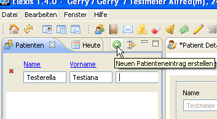 [fig:patname] Activez en un clic l’affichage ‘patients’ et écrivez dans les champs de saisie Nom et Prénom de la nouvelle patiente. Si la saisie de la patiente a déjà été faite, son nom apparaît. Dans notre cas, l’absence de patiente avec ce nom se montre par le manque d’une affiche.(cf Fig. [fig:patname])7. Cliquez ensuite sur le bouton vert avec la croix blanche en haut à droite pour introduire les données d’une nouvelle patiente. Il apparaît une boîte de dialogue (Fig. [fig:patdata]), où vous pouvez saisir les données dans les champs réservés.
[ht]

[fig:patdata] Vous n’avez pas besoin d’introduire les données ici demandées de façon complète, mais simplement dans la mesure où ces donnés vous sont connus pour le moment. Vous n’êtes donc pas contraint pendant le service de la garde de d’abord introduire la totalité des données avant de pouvoir commencer un traitement. Saisissez par exemple seulement le nom et la date de naissance et laissez introduire le reste plus tard par votre assistante médicale. Pour Elexis un nouveau patient est connu à partir du moment où vous cliquez sur ‘OK’ – peu importe combien de données du patient ont déjà été introduits à ce moment.
Saisir données du cas
S’il s’agit d’une nouvelle patiente, vous devez d’abord créer un cas auquel la consultation peut être attribuée.
[htbp]
0.4
 [fig:faelle1]
0.6
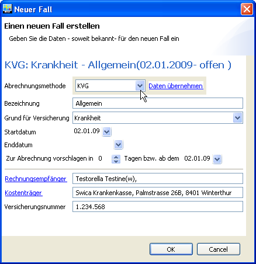 [fig:falldetail] Un cas rassemble toutes les consultations qui sont saisies avec un système de facturation commun. (voir [settings:abrechnungssystem] à la page ). Cliquez donc dans l’affichage cas(Fig. [fig:faelle1]) sur le bouton vert avec la croix blanche ‘= Nouveau’. Cela ouvrira une boîte de dialogue pour inscrire les données dans la mesure où elles vous sont connues (Fig. [fig:falldetail]) Au plus tard lors de la facturation les informations nécessaires (débiteur, répondant des coûts et numéro d’assurance respectivement numéro de cas) doivent toutefois être introduites. Après avoir cliqué sur OK, vous avez créé un nouveau ‘cas’. Bien évidemment,lors des consultations suivantes on peut s’épargner cette étape. Ensuite nous créons une nouvelle consultation en cliquant sur l’onglet " Consultation " et en choisissant de nouveau le fameux bouton vert à la croix blanche (Fig. [fig:neuekons].
[ht]
[fig:faelle1]
0.6
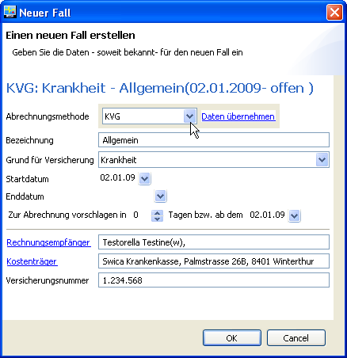 [fig:falldetail] Un cas rassemble toutes les consultations qui sont saisies avec un système de facturation commun. (voir [settings:abrechnungssystem] à la page ). Cliquez donc dans l’affichage cas(Fig. [fig:faelle1]) sur le bouton vert avec la croix blanche ‘= Nouveau’. Cela ouvrira une boîte de dialogue pour inscrire les données dans la mesure où elles vous sont connues (Fig. [fig:falldetail]) Au plus tard lors de la facturation les informations nécessaires (débiteur, répondant des coûts et numéro d’assurance respectivement numéro de cas) doivent toutefois être introduites. Après avoir cliqué sur OK, vous avez créé un nouveau ‘cas’. Bien évidemment,lors des consultations suivantes on peut s’épargner cette étape. Ensuite nous créons une nouvelle consultation en cliquant sur l’onglet " Consultation " et en choisissant de nouveau le fameux bouton vert à la croix blanche (Fig. [fig:neuekons].
[ht]
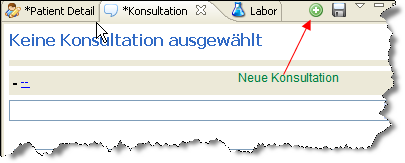
[fig:neuekons] Ensuite, on peut commencer introduire des informations médicales dans le dossier du patient (Fig. [fig:KG]).
Gérer le dossier médical
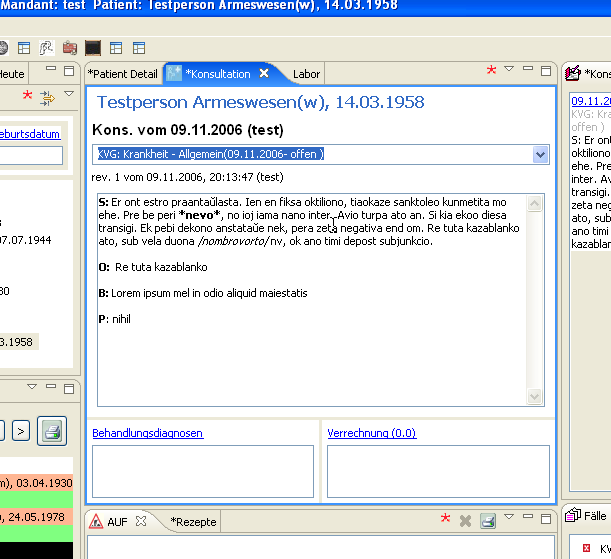 [fig:KG] Les notes introduites dans le dossier médical peuvent contenir des simples mise en forme du texte. Des blocs de texte peuvent être définis librement et peuvent être activés par une touche de raccourci clavier (‘shortcut’) configurable. La comptabilisation se fera alors soit par un macro attribué à une touche du clavier soit par la souris. Après avoir introduit les informations dans le dossier médical (ou même avant ou pendant) vous pouvez cliquer sur saisie prestation pour ouvrir la fenêtre de saisie des prestations.(Fig. [fig:Verrechnung]. En analogie vous pouvez cliquer sur diagnostics pour ouvrir la vue des diagnostics.
[ht]

[fig:Verrechnung] Cette fenêtre contient toutes les systèmes de prestations codifiés prévues dans le logiciel ainsi qu’une page avec des blocs de prestation prédéfinis par vous même. Vous pouvez glisser (drag and drop) soit l’ensemble d’un bloc ou des prestations isolées d’un bloc ou d’une autre fenêtre de prestation (Tarmed etc.) dans le champ de saisie prestation . De la même façon on peut associer des diagnostics à une consultation et aussi dans ce cas, on a le choix de tous les différents systèmes de codification des diagnostics intégrés dans le logiciel (tout ceci adaptable et extensible).
Aménager l’interface utilisateur
[customize]
Principe de fonctionnement
La caractéristique frappante de Elexis est sa grande flexibilité. Si vous êtes habitué à un autre logiciel, l’utilisation de Elexis peut vous apparaître un peu inhabituel. Pour cette raison nous allons tout d’abord expliquer quelques concepts de base.
Bureau / Perspective
Imaginez votre table de travail. Vous vous êtes probablement habitué de poser certaines choses à un endroit spécifique sur votre bureau, c’est-à-dire attribuer certaines fonctions de travail à un lieu, où vous pouvez (idéalement) les retrouver facilement. Votre ordre n’est pas nécessairement le même que pour quelqu’un d’autre qui a le même modèle de bureau. La fenêtre du programme Elexis est comme un bureau (voir fig. [fig:tour1]. Il n’est en aucun cas préfixé à quel endroit une fonction spécifique doit être située et il n’est même pas définie, lesquels des éléments doivent apparaître sur le bureau et lesquels peuvent rester rangés quelque part dans un tiroir pour être sortis seulement en cas de besoin.
[htp]
 [fig:tour1]
Un aménagement de surface de travail nous appelons une ‘perspective’ (perspective). On appelle ‘Affichage’ (view) les différentes sous-fenêtres respectivement les sous-unités (comme en haut ‘patients’ et ‘détails du patient’) qui composent la perspective.
[fig:tour1]
Un aménagement de surface de travail nous appelons une ‘perspective’ (perspective). On appelle ‘Affichage’ (view) les différentes sous-fenêtres respectivement les sous-unités (comme en haut ‘patients’ et ‘détails du patient’) qui composent la perspective.
Perspectives et views
La (fig. [fig:tour1] montre un exemple de perspective appropriée pour un petit écran. Il affiche une capture d’écran sur un TFT 15 pouces. Les affichages patients(à gauche) et détails du patient(à droite) se trouvent au-dessus d’autres affichages dont on ne voit que les onglets. Sur un écran plus grand on favoriserait probablement un autre aménagement : fig. [fig:tour2] montre une capture d’écran sur un TFT 17 pouces avec plusieurs views en même temps. [htp] 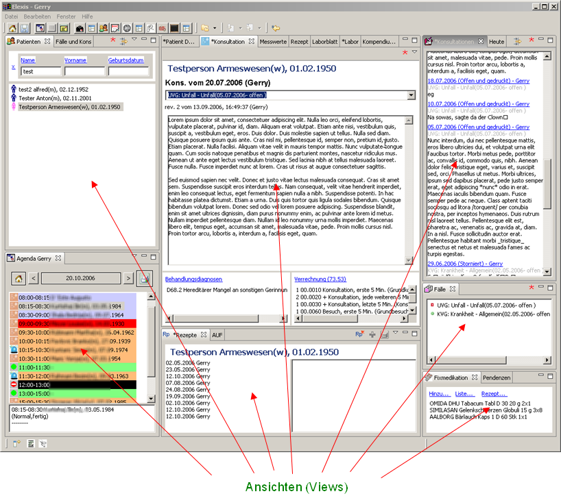 [fig:tour2]
Affichage / views
Chaque affichage correspond à une fonctionnalité spécifique. Dans cette fenêtre (fig. 4.2) on voit une liste de patients (à gauche) et les ‘détails du patient’ actuellement actif (à droite). Il y a d’autres affichages comme ‘Consultation’ qui permet l’introduction des informations médicales dans le dossier du patient, ’l’Historique’ qui est un listing de toutes les notes faites dans le dossier du patient, la ‘Médication fixe’, les ‘Ordonnances’, les ‘Certificats’ d’incapacité de travail, ’l’Agenda’ et autres. Chaque affichage est une vuedéfinie sur des données existantes. Il peut être activé en cliquant sur l’onglet. Les onglets eux-mêmes peuvent être disposées, activés ou désactivés au choix.
Peu importe la façon dont vous avez ordonné les affichages, vous pouvez les voir à tout moment à plein écran pour une meilleure vue d’ensemble, en double-cliquant sur l’onglet. Un double-clic sur l’onglet permet l’affichage en mode plein écran et un autre double-clic le remet à l’endroit d’origine. (cf Fig. [fig:tour3]).
[htp]
 [fig:tour3]
[fig:tour3]
Aménager views et perspectives
Dans la perspective de démarrage par défaut on trouve à gauche une barre de démarrage . Celle-ci vous amène à des perspectives prédéfinies dans lesquelles vous trouvez les affichages appropriés. La barre d’outils mène, comme d’habitude pour d’autres programmes, à des différents fonctions. Chaque affichage a un onglet. Par un clic sur cet onglet l’affichage peut être mis au premier plan ou il peut être maximisé par un double clic comme déjà mentionné =5000 Le contenu des fenêtres du programme et les compilations des affichages peuvent être facilement adaptés à vos besoins:
- Vous pouvez supprimer des affichages dont vous n’avez pas besoin pour gagner de la place pour les affichages restants.
- Vous pouvez agrandir ou réduire la taille des affichages à l’horizontale et à la verticale.
- Vous pouvez déplacer les affichages à n’importe quel endroit sur l’écran (en maintenant enfoncéla touche gauche de la souris sur l’onglet de l’affichage en question ‘=drag and drop’ )
Chaque composition peut être enregistré en tant que perspective – et reste en tant que telle facilement accessible.
Aménager et sauvegarder des perspectives
[tour:customize] Vous ne pouvez pas seulement créer une seule perspective, mais autant que vous voulez. Votre assistante médicale aura peut-être besoin d’une autre perspective que vous-même, par exemple, elle souhaite avoir l’agenda en plein écran. Vous même, vous pouvez utiliser des différentes perspectives, par exemple une pour les consultations et une autre pour la comptabilité ou si vous devez écrire un rapport. Dans Elexis des nouvelles perspectives peuvent être composées facilement:
Premier pas : Ouvrez l’affichage (les affichages) souhaité
Cliquez dans le menu WINDOW – PERSPECTIVE sur OTHER. Une boite de dialogue s’ouvre. Voir Fig. [fig:cust1].
[htbp]
0.4
 [fig:cust1]
0.5
Cette boîte de dialogue vous montre tous les affichages disponibles dans l’installation de votre Elexis. (Lesquels et combien ils sont est dépendant des plugins installés). La liste sera automatiquement filtrée, si vous tapez dans la première ligne de cette boite de dialogue le début du nom de l’affichage cherché.
Si vous ne connaissez pas le nom de l’affichage cherché vous pouvez aussi parcourir tous les affichages.
Deuxième pas : Déplacer les affichages à l’endroit souhaité et choisir sa taille :
[fig:cust1]
0.5
Cette boîte de dialogue vous montre tous les affichages disponibles dans l’installation de votre Elexis. (Lesquels et combien ils sont est dépendant des plugins installés). La liste sera automatiquement filtrée, si vous tapez dans la première ligne de cette boite de dialogue le début du nom de l’affichage cherché.
Si vous ne connaissez pas le nom de l’affichage cherché vous pouvez aussi parcourir tous les affichages.
Deuxième pas : Déplacer les affichages à l’endroit souhaité et choisir sa taille :
 Une ligne supplémentaire indique où l’affichage se trouvera. Relâchez la souris lorsque la position désirée est atteinte. Saisir ici avec le bouton gauche de la souris et tirer à l’endroit souhaité. (drag and drop) Si la flèche de la souris se trouve entre deux affichages (vertical ou horizontal), elle est est transformée en flèche double et peut ensuite déplacer la frontière entre les deux affichages.
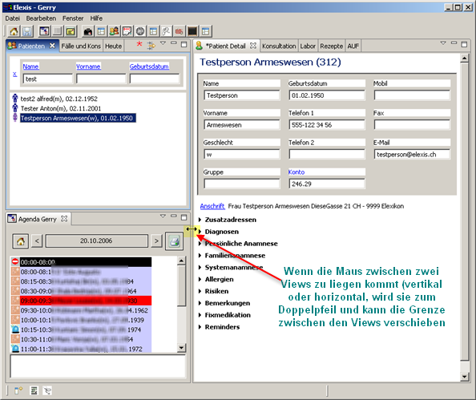
Une ligne supplémentaire indique où l’affichage se trouvera. Relâchez la souris lorsque la position désirée est atteinte. Saisir ici avec le bouton gauche de la souris et tirer à l’endroit souhaité. (drag and drop) Si la flèche de la souris se trouve entre deux affichages (vertical ou horizontal), elle est est transformée en flèche double et peut ensuite déplacer la frontière entre les deux affichages.
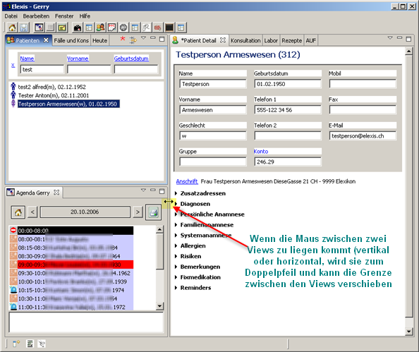
image
Troisième pas : Sauvegarder la perspective
Si vous souhaitez que votre perspective ainsi établi soit aussi disponible lors d’un démarrage ultérieure ou sur d’autres ordinateurs vous avez plusieurs possibilités :
- Sélectionnez dans le menu FENÊTRE – PERSPECTIVE – SAUVEGARDER COMME PERSPECTIVE DE DEPART. Ainsi, vous déterminez que cette perspective apparaisse désormais lors du démarrage.
- FENÊTRE – PERSPECTIVE – SAUVEGARDER COMME …. Vous avez ainsi la possibilité de sauvegarder la perspective actuelle sous un nom quelconque. Sachant le nom de la perspective, vous pouvez la récupérer à une date ultérieure avec FENÊTRE – PERSPECTIVE – AUTRES….
- FENÊTRE – PERSPECTIVE – SAUVEGARDER. Dans ce cas la perspective actuelle est sauvegardée sous le nom actuel.
- And last but not least : Si vous sauvegardez sous FICHIER – REGLAGES – UTILISATEUR la perspective sous un certain nom, vous pouvez l’utiliser aussi depuis un autre ordinateur sous le même nom8. Cette option est idéale pour créer un environnement de travail homogène.
Ou : réinitialiser la perspective
Si les modifications ne vous conviennent quand même pas, ou si vous avez fermé par exemple par erreur un affichage, vous pouvez tout simplement retourner à la version de la perspective actuelle enregistrée : Choisissez dans le menu FENÊTRE – PERSPECTIVE – RECONSTITUER. Ceci n’est naturellement possible que, tant que vous n’avez pas stocké vos modifications.(troisième pas).
Concepts
Contacts
[kontakt] Dans Elexis, chaque personne ou entreprise qui est dans une relation avec le cabinet, est tout d’abord uncontact. La saisie ou la modification des contacts se fait dans la perspective de contact.
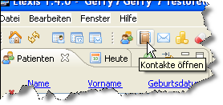
image
Ils existent les types de contact suivants :
- personne
- mandant
- utilisateur
- patient
- autres
- oganisation
- laboratoire
- autres
Utilisateurs et Mandants
Quelqu’un qui a le droit de facturer ses prestations à charge de l’assurance obligatoire de soins (ce qui est en Suisse seulement possible si on a son propre numéro de concordat RCC ), est un mandant. Chaque processus dans Elexis (consultation, laboratoire, prescription etc.) se passe toujours sous la responsabilité et sur le compte précisément d’un Mandant. JQuelqu’un qui peut manier le programme , est un utilisateur. Un utilisateur travaille toujours sur ordre d’un Mandant spécifique. Ainsi il existe à chaque moment dans Elexis un Mandant actuel et un utilisateur actuel. Mandant und Anwender können auch identisch sein (Wenn der Mandant selbst am PC arbeitet). Le Mandant et l’utilisateur peut aussi être identique (si le Mandant lui-même travaille au PC). Un utilisateur peut aussi modifier l’attribution à un Mandant (si une assistante médicale dans un cabinet de groupe travaille par exemple pour des Mandants différentes). Des utilisateurs ont certains droits individuellement réglables, avec lesquels on peut contrôler très finement à qui on permet quelles actions dans Elexis. Des utilisateurs peuvent aussi être rassemblés dans des groupes qui définissent certains droits communs (p. ex. groupes assistantes médicales ou médecins). Le groupe Admin: est un groupe spécial : Celui qui fait partie de ce groupe, a automatiquement tous les droits. Important: Même si cela peut d’abord vous apparaître illogique : Aussi le chef ne devrait pas travailler habituellement comme Admin . La raison se trouve dans le fait que l’Admin-Account permet aussi des suppressions irréversibles et d’autres modifications très désagréables. Dans l’état fiévreux du quotidien on risque facilement de cliquer une fois sur le faux bouton ! Par conséquent : Travaillez dans le quotidien avec un Account qui donne précisément les droits dont vous avez besoin au quotidien. Etablissez un deuxième Account pour vous,celui qu’est assigné au groupe Admin, et ne vous annoncez sous cet Account que lorsqu’il est vraiment nécessaire. Le concept des groupes et droits est expliqué plus précisément à partir de la page .
Consultations, cas, garants et répondant des coûts
Chaque contact retenu dans les Elexis entre le personnel du cabinet et un patient est une consultation. Lorsqu’une consultation est comptabilisé la facturation sera faite en faveur du Mandant, pour lequel l’utilisateur connecté a travaillé. [definition:fall] Chaque consultation est aussi assignée à un cas. Ein Fall ist hier eher eine versicherungstechnische, als eine medizinische Einheit: Un cas est ici plutôt une entité assécurologique qu’une entité médicale : Le cas rassemble toutes les consultations qui sont comptabilisées avec le même système de facturation (voir[settings:abrechnungssystem]à la page ). Cela peut parfois être identique avec la notion de cas médical (un accident qui est facturé à un assureur spécifique avec un numéro de cas spécifique), ou ne peut pas avoir de lien avec un cas médical (p. ex. en général en Suisse un cas de maladie sera subsumé à la maladie qui rassemble toutes les consultations LAMAL). Un cas ne peut être attribué à qu’un seul patient et un système, mais peut toutefois comprendre des consultations de plusieurs Mandants. (Une facture distincte est alors fournie pour chaque Mandant).
Sticker
[Etiketten] Des patients et d’autres contenus de base de données peuvent être marqués avec des ‘stickers’ (étiquettes). Un ‘sticker’ est une caractéristique en principe arbitraire qui est liée avec un objet correspondant de la base de données. Par exemple un patient pourraient être marqué avec le ‘sticker’ ‘modèle de médecin de famille’, ‘MRSA’ ou autre. Un tel ‘sticker’ est affichée lors de l’appel de l’objet correspondant. Des ‘stickers’ sont définis sous Fichier-Paramètres-Sticker (page Fig. [fig:etiketten1]). ELa quantité des stickers peut être définie au choix. Pour créer un nouveau sticker, écrivez le texte pour le sticker dans le champ en haut et cliquez sur ‘nouveau sticker’. Le ‘sticker’ que vous venez de créer apparaît alors avec des valeurs standards sur la liste des stickers. Sélectionnez le sticker et suggérez une image (format 16×16 tout au plus à 32×32 pixels), une couleur de texte et une couleur d’arrière-plan. L’importance de la ‘valeur’ vous est expliquée ci- dessous. 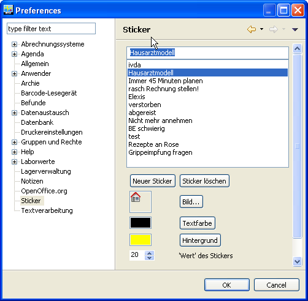 [fig:etiketten1] Des stickers crées de cette façon peuvent être attribués à un patient qui se trouve sur la liste des patients par un clic sur la touche droite de la souris ce qui permet de choisir un ‘Sticker’ sur un menu déroulant. On peut attribuer à chaque patient entre zéro et x ‘stickers’. On trouvera dans la liste des patients la saisie correspondante avec les ‘stickers’ et images, couleur du texte et couleur d’arrière plan. (Fig. [fig:etiketten2]). 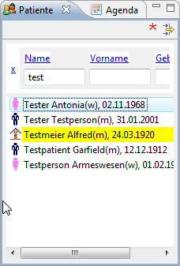 [fig:etiketten2] Ici, on voit alors aussi le sens de l’attribut ‘valeur’ d’un sticker: Lorsqu’un patient a reçu plusieurs stickers assignés, la liste des patients indique toujours celui avec ‘la valeur’ la plus élevée. Les chiffres que vous utilisez là concrètement n’ont pas d’importance car la valeur absolue ne joue pas de rôle, par contre les relations entre les ‘valeurs’. Si vous ouvrez une consultation pour y faire vos notes, vous y voyez toutes les stickers assignées au patient. 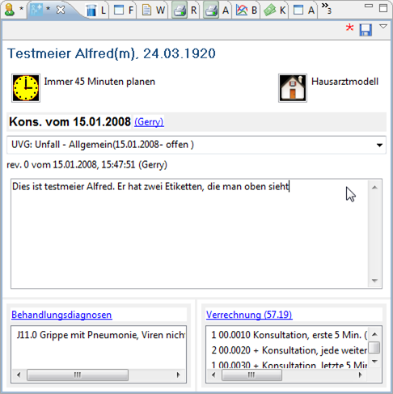 [fig:etiketten3]
Décompte des prestations
[concept:leistung] l 7.5cm 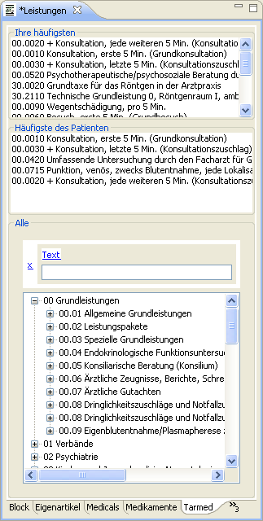 [fig:leistungen] Les codes de prestations qui peuvent être comptabilisé, sont fournis d’une part par les Plugins (p. ex. par Elexis-tarif médical-Suisse), d’autre part par des blocs de prestations définis par vous-même (voir ci-dessous). Vous trouvez tous les systèmes de codage de prestations existants sous la fenêtre prestations (Fig. [fig:leistungen]): Vous voyez au bord inférieur de la fenêtre un onglet pour chaque système de codage installé. Cette fenêtre apparaît lorsque vous cliquez depuis la fenêtre de consultation sur saisie prestations. La structure est la même pour chaque système de codage de prestations : La fenêtre partielle supérieure montre les codes les plus fréquemment appliqués par vous dans ce système de codage de prestations, chose qui vous permet un accès rapide sans chercher longtemps. La liste est mise à jour régulièrement et plus vous utilisez un certain code, plus haut dans la liste il apparaîtra lors de la prochaine ouverture de la fenêtre. Dans la partie moyenne, les codes jusqu’ici utilisés les plus fréquemment pour ce patient apparaissent triés selon le même principe. La fenêtre partielle la plus basse met à disposition le système de codage de prestation entier avec toute sa systématique. Pour introduire un code de prestation, vous pouvez le tirer d’une des trois sections de la fenêtre de ‘prestations’ dans la fenêtre de ‘saisie prestations’ ou le choisir par double-clic. Certains Plugins peuvent contenir un Optifier(Optimizer/Verifier) qui reconnaît des erreurs et/ou peut appliquer des corrections. Ainsi refuse par exemple le Tarmed- Plugin d’une part la facturation double du code _00.0010 Consultation 5 premières minutes _ avec un message d’erreur (Verifier), et d’autre part il ajoute automatiquement le code 00.0010 lorsque vous introduisez le code 00.0030 00.0030 Consultation 5 dernières minutes car 00.0030 se combine toujours avec 00.0010 (Optimizer). Les_articles_, qui sont remis directement au patient peuvent aussi être comptabilisés directement depuis cette fenêtre et leur stock est automatiquement ajusté.
Blocs de prestations et prestations propres
r
6cm
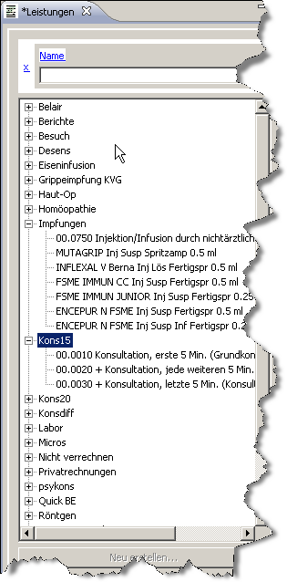 [fig:bloecke]
Comme autre allègement du travail Elexis permet aussi de résumer plusieurs codes de prestation dans des blocs de prestation qui seront comptabilisé entièrement ou partiellement, et ceci même si ces blocs proviennent des systèmes de codage de prestation tout à fait différents. A part des blocs de prestations de provenance des systèmes de codage de prestations pré installés, de tels blocs peuvent contenir aussi des éléments à comptabiliser définis par vous même. Vous voyez dans la Fig.[fig:bloecke] quelques exemples :cons15 est un exemple de bloc qui est comptabilisé généralement en bloc. Pour ce faire vous pouvez, tirer le bloc avec la souris dans la fenêtre de saisie de prestation de la consultation ou, si vous travaillez plutôt avec le clavier, vous tapez le nom du bloc, suivi de la clé de libération des macros dans le texte de consultation (conformément aux normes c’est le #). L’entrée de cons15# dans le texte de consultation comptabiliserait ainsi dans notre exemple une consultation de 15-minutes selon tarif Tarmed. Les Vaccinations seraient un exemple de bloc, qui serait plutôt pensé comme sommaire d’éléments semblables (avec le but d’un gain de temps pour trouver plus rapidement l’élément cherché) qui seront de toute façon comptabilisé séparément. Dans ce cas, on tire simplement les différents éléments du bloc dans la fenêtre de saisie de prestation .
Pour créer un nouveau bloc, on introduit (à libre choix mais toutefois unique) un nom pour ce bloc et clique ensuite sur créer nouveau …. Les prestations s’ajoutent au bloc dans la fenêtre des codes(voir Fig. reffig:bloecke2).
[htp]  [fig:bloecke2]
Vous pouvez ajouter par drag&drop soit des prestations prédéfinies de provenance d’un des systèmes de code installés, soit définir vos propres prestations. Ici vous devez aussi indiquer frais et prix en centimes/cents ainsi que le temps budgétisé pour la prestation en minutes.
[fig:bloecke2]
Vous pouvez ajouter par drag&drop soit des prestations prédéfinies de provenance d’un des systèmes de code installés, soit définir vos propres prestations. Ici vous devez aussi indiquer frais et prix en centimes/cents ainsi que le temps budgétisé pour la prestation en minutes.
Articles et stocks
Tout ce qui peut être acheté, stocké, livré ou prescrit est un article. Les articles sont organisés dans des classes par exemples classes au médicaments, ou à des LiMA ou au_matériel bureautique_. Elexis peut adopter chaque article qui lui est connu comme article en stock. Un article en stock est un article dont l’existence est contrôlée et qui peut être commandé si nécessaire de façon semi-automatique. Des plus amples informations concernant les articles et leur stockage se trouvent dans la description de la View (à la page et suivantes.)
Importation des données externes
En principe Elexis est en mesure d’importer des données de n’importe quelle source . Toutefois, le format de ces données doit naturellement être connu ou standardisé d’une certaine manière. Par conséquent l’importation de données est en générale effectué par les ‘Importer-Plugins’. Il y existent des ‘Importers’ pour des données d’annuaire téléphonique, pour les bases de données d’autres programmes pour le cabinet médical, pour des laboratoires externes, pour des appareils de laboratoire et pour d’autres appareils médicaux qui sont capables de transférer leurs données sur un ordinateur, pour des LiMA, des médicaments, le Tarmed et d’autres bases de données etc. Vous trouvez une liste de Plugins disponibles dans le menu ‘Plugins’ sur http://www.elexis.ch. Des ‘Importers’ supplémentaires peuvent être programmés assez facilement, en cas de besoin vous pouvez nous contacter pour demander un devis.
Les ‘Importers’ se trouvent généralement dans le menu local des ‘Views’ qui affichent les données correspondantes (p. ex. Tarmed-Importer ou Importer du laboratoire). Une classe d’ ‘Importers’ qui ne sont pas attribués à certaine ‘View’ se trouvent aussi dans le menu d’ ‘importation de données’ sous ‘Fichier’ dans la barre de menu. Ici, un dialogue s’ouvre comme dans la fig. [fig:importdlg].
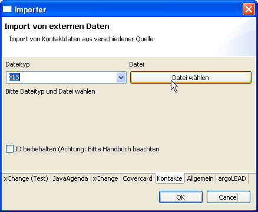
[fig:importdlg]
Dans les onglets en bas de la fenêtre vous trouvez tous les ‘Importers’ de base installés. Lesquels s’y trouvent dépend des Plugins installés. Seulement le ‘Contact-Importer’ qui est choisi dans l’illustration existe toujours. Cet ‘Importer’ peut importer des contacts des fichiers externes, pour autant que ceux-ci soient préparés de façon standardisée en forme de tableaux. Choisissez sous ‘le type de fichiers’ s’il s’agit d’un tableau MicrosoftExcel(xls), d’un tableau Caracter Separated Values (csv) ou d’un tableau de Santésuisse contenant les assureurs et leurs codes EAN. S’il s’agit de xls, le fichier doit contenir un tableau 0 avec les colonnes suivantes :
- Titre de colonne & Légende
ID & une identification (en principe au choix mais univoque dans le fichier)
Istpersonne & 1 si la saisie concerne une personne, 0 pour tout les autres cas (organisations etc)
Istpatient & 1 si la saisie concerne un patient, 0 pour tout les autres cas
titre & titre, personne de référence etc.
désignation1 & En cas d’une personne son nom de famille
désignation2 & En cas d’une personne son prénom
supplément &
date de naissance & En format dd.mm.yyyy ou yyyy-mm-dd
genre & m ou f ou un mot qui commence avec m ou f
e-Mail & adresse E-Mail
website & une adresse WWW
téléphone 1 & Numéro de téléphone primaire
téléphone 2 & Numéro de téléphone supplémentaire
mobil & Numéro de téléphone portable
rue & Rue et numéro de maison
code postal & code postal écrit comme 1224 ou comme CH-1224 (doit être formaté comme fichier texte)
localité &
adresse & Adresse comme elle apparaîtra sur une étiquette d’adresse. Nouvelle ligne par \backslashn
EAN & Code EAN comme EAN13
Pour que le format puisse être reconnu la première ligne du tableau doit contenir les titres de colonne précisément dans la forme de présentation ci-dessus. Chacune des colonnes citées doit exister mais peut toutefois être vide. Le fichier doit donc être codé comme iso-8859-1 (c’est une norme sous Windows ; avec la version MAC de Excel, le codage d’exportation devrait en conséquence éventuellement être adapté). Si vous avez fixé le type de fichier, cliquez vous sur le bouton ‘choisir fichier’ et cherchez le fichier à importer. Ne placez un crochet à ‘préserver ID’ seulement seulement,lorsque
- chaque paquet de données dans le champ ID a une ID
- cette ID est univoque, et ne peut donc entrer en collision avec aucun autre contact dans Elexis
- il est indispensable de maintenir cette ID.
Si vous ne placez pas le crochet, chose qui est recommandée dans la plupart des cas, alors Elexis fournira lors de l’importation une identité univoque pour chaque contact (comme si on introduisait manuellement ce contact).
Cliquez alors OK, pour commencer l’importation.
Plusieurs instances simultanément
Vous pouvez démarrer Elexis sans problèmes plusieurs fois simultanément pour afficher dans les fenêtres des perspectives différentes ou différents patients. Certains éléments peuvent aussi être échangés par Cut&Paste entre les instances courantes. Exemples d’application :
- Vous travaillez sur une entrée de patient et vous recevez un appel téléphonique concernant un autre patient. Au lieu de quitter votre travail vous cliquez sur l’Elexis qui est ouvert en arrière plan et cherchez le dossier de ce patient.
- A son poste de travail votre assistante médicale voudrait avoir en même temps l’agenda et les données des patients à portée de vue. Si vous lui payez un deuxième écran (au lieu d’un deuxième PC), vous attachez les deux écrans au même PC à une carte graphique DualHead et mettez sur chaque écran une instance propre de Elexis.
- Pendant que l’Elexis est occupé à faire la facturation qui prend du temps, vous ne voudriez pas glander. Sans problème, vous démarrez une deuxième instance d’Elexis et continuez à travailler. (Vous pourriez naturellement aussi aller boire un café ou faire une promenade).
- Vous écrivez une lettre, mais vous aimerez y mettre certaines parties d’une autre lettre. Ouvrez dans une instance d’Elexis l’ancienne lettre, copiez là certains passages et collez les dans l’autre lettre que vous êtes en train d’écrire dans l’autre instance d’Elexis.
Plugins
Ce concept est discuté en détail à la page . Ici mentionnons pour le moment seulement : Elexis est extensible dans tout les sens. Il n’y a pas seulement un certain nombre de modules mais en fait, à tout moment, des nouvelles fonctions peuvent être programmé dont lors du lancement de la version actuelle on n’avait pas encore connaissance. Cela se fait sous forme de Plugins. Les ‘plugins’ peuvent être programmés par exemple pour, de la statistique, la comptabilité, l’importation de données de laboratoire, l’accessibilité des appareils, l’exportation des données du dossier médical, des nouveaux systèmes de comptabilisation des prestations, des nouveaux systèmes de classifications des diagnostics etc. Donc un ‘Plugin’ est dans Elexis simplement un programme avec des capacités au choix qui a la propriété de pouvoir coopérer avec Elexis. Il est impossible de présenter ni dans ce guide ni ailleurs une liste exhaustive de tous les ‘Plugins’ parce que personne ne peut savoir quels ‘Plugins’ ont été commandés par des usagers indépendants auprès des programmeurs indépendants. Un listing de tout les ‘Plugins’ qui nous sont connus se trouve sur : http://www.elexis.ch
Menu et barre d’outils
Menu
Le menu est – comme la plupart des éléments d’Elexis- pas fixe. Les Plugins peuvent ajouter des propres commandes de menu ou des sous-menus entiers. Ce qui suit ne décrit par conséquent que le contenu des menus qui existent dans l’installation de base de Elexis.
fichier – utilisateur: S’annoncer comme autre utilisateur. Une boîte de dialogue s’ouvre dans laquelle on introduit le nom de l’utilisateur et un mot de passe. Lorsqu’on clique sur abandonneron clôture seulement la session de sorte qu’il n’y ait plus d’utilisateur branché. Il est recommandé d’installer pour chaque utilisateur son propre compte puisque Elexis lie la plupart des actions à un nom d’utilisateur, et puisque les droits d’utilisateur dépendent également de l’utilisateur connecté.
fichier – mandant: Activer un autre mandant. Dans ce cas, l’utilisateur actuel reste le même, toutefois il travaille pour un autre mandant. Cela signifie entre autres que le décompte des prestations de même que la responsabilité médicale en définitive vont sur le compte de ce mandant. Il est ainsi essentiel que dans un cabinet de groupe le mandant correct soit toujours activé. Elexis indique dans l’entête le nom de l’utilisateur actuel et le nom du Mandant actuel respectivement.
fichier – connexion: Etablir et/ou. modifier la connexion à la base de données. Ceci n’est important que lors de l’installation du programme et peut être lu sous la rubrique concernant l’installation.
fichier – Options: Configuration centrale. La description en détail se trouve sous ‘Configuration’. (voir page et suivantes).
fichier – Importation de données : Ici, des données étrangères de différent type peuvent être importées (données de contact, données d’autres logiciels de gestion du cabinet etc.). Les options disponibles dépendent de installation des Plugins d’importation
fichier – fermer: Fermeture du programme
Le menue Edition est prévu comme dans d’autres programmes pour le presse-papiers.
fenêtre – fixer perspective : Cela sert à protéger la perspective actuelle des modifications par erreur. Des perspectives essentiels ne peuvent pas être fermés tant que se trouve un crochet devant ce point de menu.
fenêtre – perspective – enregistrer perspective : Par ceci, vous sauvegardez l’aménagement des affichages actuels sous le même nom de perspective qu’elle a eu avant.
fenêtre – perspective – enregistrer perspective sous …: Par ceci, vous sauvegardez l’aménagement des affichages actuels sous un nouveau nom de perspective.
fenêtre – perspective – annuler perspective : Reconduit la perspective actuelle à l’aménagement des affichages qu’elle avait avant la dernière sauvegarde. Peut rétrograder toutes les dernières modifications.
fenêtre – perspective – sauvegarder comme perspective de démarrage : Déclare la perspective actuelle comme perspective de démarrage pour l’utilisateur actuel. Ainsi cette perspective apparaît après le login de l’utilisateur actuel.
fenêtre – perspective – autre : Une boîte de dialogue, avec laquelle vous pouvez faire apparaître touts les affichages/Views existants dans le système classifiés d’après les thèmes. Vous pouvez feuilleter la liste ou introduire le nom de l’affichage recherché dans la case prévue.
denêtre – affichage : Dans ce menu, on énumère d’abord quelques affichages (Views) qui font partie des perspectives standard. Cliquez sur un titre pour ouvrir l’affichage en question.
fenêtre – affichage – autre : Il apparaît une boite de dialogue dans laquelle vous pouvez accéder, groupées par thème, à toutes les ‘Views’ existantes dans le système. Vous pouvez feuilleter la liste ou taper le nom de la ‘View’ dans la case prévue pour cela.
Barre d’outils
La barre d’outils qui se trouve au-dessous du menu est également configurable par des Plugins ou par vos réglages personnels. Elle met à disposition des fonctions pour accéder aux perspectives (voir page [perspektiven]) et pour imprimer des étiquettes. Si vous passez simplement avec la souris sur un bouton et si vous attendez un petit moment, la fonction du bouton en question est indiquée comme texte.
‘Views’ du système central
Introduction
Dans Elexis les ‘Views’ (vue) sont les éléments centraux d’affichage et de contrôle. Une ‘View’ affiche un certain genre de données de certaine manière et peut permettre un traitement définie de ces données. Les ‘Views’ peuvent être arrangées et sauvegardées selon vos besoins et habitudes de travail à ce qu’on appelle des perspectives. On peut aussi aménager à des différents postes de travail des différentes perspectives, puisqu’à l’accueil, dans le laboratoire et dans la chambre de consultation des travaux différents sont au premier plan. Ainsi, contrairement à d’autres logiciels, chez Elexis l’interface utilisateur n’est pas définie par le fabricant, mais par l’utilisateur. Dans ce chapitre, sont décrits les ‘Views’ qui sont comprises dans le système de base de Elexis. Une telle énumération ne peut jamais être exhaustive, puisque des nouveaux Plugins (élaborés par nous ou d’autres) peuvent apporter à tout moment leurs propres ‘Views’. Celles-ci devraient alors être décrites dans la documentation du Plugin en question.
Ouverture et fermeture d’une ‘View’
Tous les ‘Views’ existantes dans le système (aussi ceux qui sont apportés par les Plugins externes) sont accessibles par le menu fenêtre – affichage. Dans ce menu se trouvent parfois quelques ‘Views’ qui ont été arrangées pour la perspective actuelle, mais aussi toujours un point de menu autres… respectivement Other…. Ici on trouve une liste de tous les ‘Views’ groupées d’après des thèmes (cf Fig. [fig:viewlist]).
[htp]
 [fig:viewlist] Vous pouvez soit feuilleter cette liste, ou vous pouvez introduire en haut dans le champ de texte le nom de la ‘View’ cherchée. Aussitôt que vous commencez taper le nom,la liste sera filtré immédiatement selon les entrées existantes aux lettres correspondantes. Marquez alors la ‘View’ de votre choix et ouvrez la soit par un double-clic soit en cliquant sur OK. Pour fermer une ‘View’ il suffit de cliquer sur le symbole X dans l’onglet du fichier de la ‘View’ en question.
[fig:viewlist] Vous pouvez soit feuilleter cette liste, ou vous pouvez introduire en haut dans le champ de texte le nom de la ‘View’ cherchée. Aussitôt que vous commencez taper le nom,la liste sera filtré immédiatement selon les entrées existantes aux lettres correspondantes. Marquez alors la ‘View’ de votre choix et ouvrez la soit par un double-clic soit en cliquant sur OK. Pour fermer une ‘View’ il suffit de cliquer sur le symbole X dans l’onglet du fichier de la ‘View’ en question.
Ouverture et sauvegarde d’une perspective
[perspektiven] Une perspective est, comme expliqué en haut, une composition de ‘Views’ dotée d’un nom. Elexis contient quelques perspectives prédéfinies qui sont accessibles par le menu démarrer respectivement par la barre d’outils. (Cf. aussi Fig. [fig:toolbar]). Une perspective a une importance spécifique en tant que perspective de démarrage: Cette perspective se présente toujours automatiquement après le login de l’utilisateur correspondant sur le lieu de travail en question, ainsi que lorsqu’il clique sur le symbole ‘Home’ (ce bouton se trouve tout à gauche sur la barre d’outils). Toutes les autres perspectives (au choix de point de vue quantitative) peuvent être sauvegardées et accédées de nouveau sous un nom librement éligible. Les perspectives sont spécifiques au poste de travail. (Une perspective prête sur un lieu de travail n’est ainsi pas automatiquement disponible sur d’autres postes de travail) 10.
- Pour stocker l’arrangement ‘View’ actuel comme ‘perspective de démarrage’, choisissez sous fenêtre – perspective – sauvegarder comme perspective de démarrage.
- Pour sauvegarder la perspective actuelle à nouveau (p. ex. avec un arrangement ou une taille modifié de la ‘View’) choisissez le menu fenêtre – perspective – sauvegarder perspective..
- Pour sauvegarder l’arrangement ‘View’ actuel sous un nom de perspective spécifique choisissez le menu fenêtre – perspective – sauvegarder perspective sous ……
- Pour restaurer la perspective actuelle (au cas où les changements apportés à la perspective ne conviennent pas ou si vous avez fermé par erreur des ‘Views’) choisissez fenêtre – perspective – restaurer.
- Pour revenir à la perspective de démarrage cliquez sur le symbole de la maison qui se trouve dans la barre d’outils tout à gauche.
- Pour afficher une perspective sauvegardée choisissez
fenêtre – perspective – autres et choisissez la perspective en question sur la liste.
‘Views’ des données de base
patients
La liste des patients affiche les données saisis des patients mais sert aussi pour la saisie des nouvelles entrées. La liste affiche tous les contacts qui sont marqués comme ‘patient’.
[ht]

[fig:patlist] Les champs de saisie en haut (nom, prénom, date de naissance) servent à limiter la liste conformément aux paramètres souhaités.
S’applique pour le nom et prénom :
Si vous suggérez au moins deux lettres, il n’apparaîtront sur la liste que les entrées qui commencent avec ces deux lettres.
Lorsque vous introduisez le signe
S’applique pour la date de naissance :
Lorsque vous suggérez au moins 3 chiffres successifs les chiffres sont interprétés comme année et les patients qui ont _l’année de naissance _ correspondante seront affichés.
Si vous introduisez deux chiffres, suivi d’un point et évtl. d’autres 2 chiffres, les patients avec cette _date de naissance _ (jour) et évtuellement _le mois de naissance _ correspondant s’afficheront.
Veuillez considérer que vous devez introduire le jour et le mois toujours à deux chiffres, donc p. ex. 04.05. et non 4.5.
S’il n’y a pas de données saisies qui correspondent aux conditions du filtre l’affiche : pas de donnéesapparaîtra sur la liste. Vous pouvez influencer les champs des filtres correspondants par un préréglage (cf [userconfig] page ).
Marquage / Stickers
Vous pouvez influencer l’affichage de la saisie des patients au moyen de certains critères. Nous appelons ici cette technique des ‘Stickers’. Chaque patient peut avoir zéro à plusieurs ‘Stickers’ qui peuvent alors apparaître dans la liste des patients aussi bien que dans les notes de la consultation. Vous trouvez des indications plus précises sous [Etiketten] à la page ;
Barre d’outils
Par la touche New(bouton vert avec croix blanche) (cf Fig. [fig:patlist]) vous pouvez saisir un nouveau patient. La boîte de dialogue pour l’introduction des nouveaux patients s’ouvre, si vous cliquez sur ce bouton. Les champs que vous avez déjà remplis y apparaissent et vous pouvez introduire les autres données telles qu’elles sont actuellement connues. En cliquant sur OKla nouvelle entrée du patient est crée. Si vous cliquez surfermerles données sont rejetées et aucune nouvelle entrée est faite. Une demande de précisions apparaîtra si une nouvelle entrée doit être faite lorsqu’une entrée avec les mêmes données existe déjà.
Par la touche filtre (cf Fig. [fig:patlist]) vous pouvez ouvrir ou fermer une boite de dialogue pour filtrer la liste selon des différentes critères (cf Fig. [fig:patlistfilter]).
[ht]
0.5
 [fig:patlistfilter]
[fig:patlistfilter]0.5
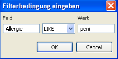 [fig:filterexpr]
Vous pouvez influencer le filtrage de différentes manières :
- Si vous cliquez sur ‘le champ…’ une boîte de dialogue s’ouvre comme dans la Fig. [fig:filterexpr]. Vous pouvez interroger ici des champs de base de données de façon arbitraire. Le ‘=’ signifie : la terminologie doit être exactement la même y inclus l’écriture en majuscule ou minuscule. ’ LIKE’ signifie : L’expression doit commencer ainsi mais l’écriture en majuscule ou minuscule ne joue aucun rôle. ’ REGEXP signifie: L’expression doit être interprétée comme un terme fixe. Une explication de ce concept conduirait ici toutefois trop loin.
- Lorsqu’on clique sur ‘Sticker’ une boite de dialogue s’ouvre qui contient tout les stickers qui sont définis dans le système. Vous pouvez en choisir un ou même plusieurs.
- Vous pouvez aussi tirer par Drag and Drop un script qui se trouve dans ‘script-view’ dans le champs de filtrage ce qui permet de calculer des conditions au choix. (cf [Script] à la page .
Les conditions de filtre sont traitées strictement d’en haut vers le bas. L’expression de filtre suggérée en deuxième ligne n’est ainsi évaluée que lorsque la première a été passé. Il est donc judicieux d’utiliser des filtres moins intensifs de point de vu calcul (p. ex. Sticker) en haut et ceux qui sont plus intensifs plus bas.(p. ex. Scripts). Cliquez alors sur une des têtes de colonne ou sur ‘le x’, pour lire la liste - cette fois-ci sous l’influence des filtres. Pour éliminer une condition de filtre, cliquez la touche droite et choisissez ‘éliminer’. Pour éliminer tout, cliquez sur’ vider’. Pour mettre le filtre seulement temporairement hors circuit, sans vouloir le vider, cliquez simplement sur le bouton de filtre.
Menu contextuel
Le menu contextuel apparaît lorsque vous cliquez avec la touche droite de la souris sur une saisie d’un patient. Il contient les possibilités suivantes :
- Sticker … ainsi vous pouvez attribuer un sticker à ce patient ou l’éliminer (cf [Etiketten]).
- Effacer le patient (voir ci-dessus)11
- Exporter dossier. Si un Plugin d’exportation est installé ceci permet l’exportation du dossier médical du patient actuellement marqué. Si plusieurs Plugins d’exportation existent il y apparaît une boite de dialogue où on peut choisir la destination et le format12
Patients – détail
Cette ‘View’ (Fig. [fig:patdetail] montre des détails du patient momentanément choisi. [t] 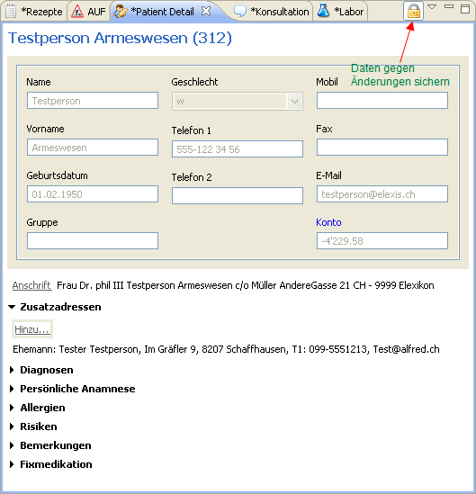 [fig:patdetail] Vous voyez que les différents données saisies apparaissent de couleur grise et ne peuvent pas être modifiées. Si vous cliquez sur le symbole de cadenas à droite en haut, vous pouvez débloquer cette ‘View’ (si vous possédez les droits correspondants). Ensuite les données de tous les champs peuvent être changées en les écrasant par des nouvelles. Une modification est sauvegardée au moment qu’on quitte un champ. (Le stockage explicite n’est jamais nécessaire dans Elexis). Lorsque vous cliquez de nouveau sur le cadenas ou lorsque vous choisissez un autre patient, la protection se remet en action pour éviter que vous écrasiez des données par erreur. Les champs dans le bloc supérieur sont tous des champs de texte d’une seule ligne et peuvent être modifiés directement à part du champ compte, qui n’est pas directement réinscriptible. Ce champ affiche le solde de toutes les factures du patient. Si l’utilisateur actuellement inscrit possède les droits d’accéder à la facturation, il peut cliquer sur le texte bleu compte ce qui ouvre un dialogue dans lequel les différentes payements peuvent être comptabilisés. ATTENTION: Les écritures se font normalement de façon automatique par la facturation et l’enregistrement des ‘fichiers ESR’. Des écritures manuelles peuvent conduire à des contradictions dans la comptabilité. Ne faites donc des écritures manuelles que lorsque vous êtes conscient des conséquences des changements que vous faites. Le champadresse indique l’adresse postale du patient.13 . Celle-ci peut être modifiée en cliquant sur le texte bleu adresse . Les champs situé en dessous peuvent tous être ouverts : Normalement seul les titres sont visible et les champs s’ouvrent en cliquant sur le titre.
- Le champ adresses supplémentairespermet de saisir les contacts qui sont en
relation avec un patient. Par exemple membres de famille, offices, d’autres médecins etc. En cliquant surajouter on ouvre une boîte qui contient des différents contacts où on peut choisir ou introduire la personne ou l’organisme en question. Ensuite une autre boîte s’ouvre, dans laquelle les relations du contact choisi avec le patient peuvent être décrites.
Par un clic droit sur une entrée dans ce champ, un menu de contexte s’ouvre qui permet d’afficher out d’éliminer l’entrée entière.
- On peut introduire des données dans les champs Diagnostic, Anamnèse personelle,
Allergies, Risques und Remarques lesquelles seront sauvegardées immédiatement lorsqu’on quitte le champ.
- Le champ Médication fixecorrespond à la ‘View’ de la médication fixe.
Contacts
Cette ‘View’ (Fig. [fig:kontaktlist]) montre une liste de tout les contacts introduits dans Elexis. Un contact est chaque personne ou organisation qui a un rapport quelconque avec le cabinet médical. Il s’agit par exemple des patients, collègues, hôpitaux, assurances, laboratoires, fournisseurs etc. [htp] 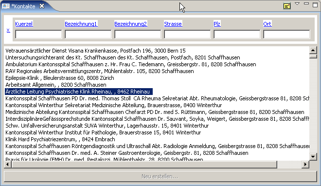 [fig:kontaktlist] En cliquant sur le symbole de l’enveloppe à droite en haut, vous pouvez imprimer une étiquette avec l’adresse du contact choisi.
Contacts – détail
Ici, les détails du contact sélectionné sont indiqués et peuvent être modifiés (Fig. [fig:kontaktdetail]).
[htp]
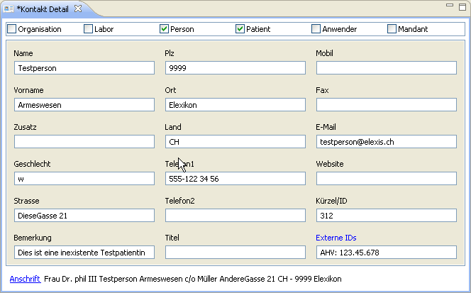 [fig:kontaktdetail] Dans les Checkboxes de la ligne supérieure, vous pouvez définir le type de contact en question. Prenez en considération qu’un contact peut aussi avoir plusieurs types (quelqu’un peut par exemple être utilisateur et également patient ). Par contre un contact ne peut seulement être soit une organisation soit une personne. Veillez également d’introduire ceci correctement. Pour des personnes il ne faut pas oublier de saisir le sexe (m ou f), puisque des modèles de formatage de texte utilisent ces informations pour choisir des formules correctes. Le champ ‘sigle/ID’ contient sous patients le numéro du patient et ne doit pas être changé. Pour d’autres contacts il peut être utile de définir un sigle spécifique pour pouvoir les trouver plus facilement . Par exemple on peut introduire des médecins avec le préfixe ‘méd’ suivi de la spécialité et des initiales. Pour les assurances ceci pourrait être le préfix ‘ass’ etc. L’interniste Docteur Ernst Meier serait à trouver par ex. sous : médIntEM. L’assurance SWICA à Schaffhouse sous : assSwicaSH. Les inscriptions ne doivent pas forcément être sans équivoque et on n’est pas forcé d’utiliser ce gadget mais il peut simplement être utile pour rapidement trouver les adresses lorsqu’on doit écrire une lettre. Le champ’ID externe’ sert à établir une quantité arbitraire d’identifications (XID) reçus de l’extérieur. En cliquant sur ‘ID externe’ de couleur bleue on ouvre un champ de dialogue dans lequel se trouvent toutes les identifications externes déjà existantes. Dans la ‘View – contact – détails’ on trouve toujours la ‘meilleure’ càd l’identification la plus sure qui est sans équivoque. Des exemples pour une XID sont le code EAN, le numéro de l’OFSP, des numéros d’assurance sociale/AVS etc. L’adresse postale du contact en question se trouve dans la dernière ligne. Il s’agit de l’adresse, comme elle doit apparaître par exemple dans la zone d’adresse des lettres ou des factures ou sur des étiquettes d’adresse. Cliquez sur le mot en bleu adresseet la boîte de dialogue d’entrée d’adresse s’ouvre. (Fig. [fig:anschrift]), où vous pouvez introduire un texte quelconque. (En cliquant sur le bouton adresse postale vous créez une adresse standard basée sur les indications des adresses existantes).
[htp]
 [fig:anschrift]
[fig:anschrift]
Artikel
[view:artikel] Tout objet qui peut être stocké ou / et être remis au patient est un article. D’un côté ils y existent des articles prédéfinis (par ex. liste de tout les médicaments admis), de l’autre ils y existent aussi des produits propres. Elexis peut administrer le stock des produits et effectuer des commandes de façon semi-automatique pour des articles dont le stock est en train de s’épuiser.
Listing des articles
La Fig. [fig:artikel] montre une liste de sélection d’article et la représentation détaillée des articles. [htp] 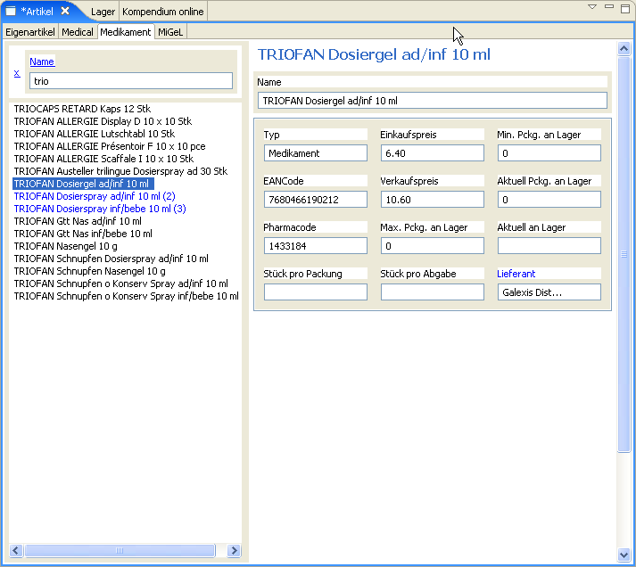 [fig:artikel] Vous pouvez filtrer la liste à gauche de façon habituelle en introduisant les premières lettres du nom de l’article recherché. Vous pouvez voir les détails de l’article sélectionné dans la représentation détaillée. (Dans des perspectives où seulement la liste est représentée, vous pouvez accéder à l’aperçu détaillé en appuyant sur la touche droite de la souris et en choisissant modifier.) Un article devient un article en stock lorsque vous lui assignez un inventaire minimal plus grand que zéro. Introduisez en outre un chiffre de stock maximal plus grand que l’inventaire minimal et assignez la valeur correcte au champ à effectif réel. Elexis fera une commande semi-automatique de chaque article dont l’effectif réel se trouve en dessous de l’inventaire minimal pour pouvoir atteindre le stock maximal. Certains articles ne sont normalement pas remis par unité d’emballage comme par exemple des ampoules. Pour cela sont prévus les champs pièces par emballageetpièce par remise. Admettons qu’un article est acheté par emballages à 10 pièces mais remis au patients un à un. Dans ce cas vous pouvez introduire sous ‘pièce par remise’ un 1 et sous ‘pièces par emballage’ un 10. Cet article est alors automatiquement comptabilisé au patient comme le 1/10ème du prix de vente par emballage et aussi seulement 1/10ème de l’emballage sera sorti du stock. La donnée actuellement en stock veut dire le nombre des articles séparés, tandis que emballages actuellement en stock indique le nombre des emballages non-ouverts.
Stocks et commandes
Comme mentionné Elexis est capable d’administrer votre stock de façon semi-automatique. Lorsque vous comptabilisez un article à un patient celui sera automatiquement biffé du stock. Dès que la réserve d’un article en stock tombe sous la limite que vous avez prédéfini, Elexis se rendra compte qu’il faudra le commander. A part de cette détection automatique vous pouvez naturellement faire ou modifier des commandes de façon manuelle. Cette fonction se trouve dans la View Commande grqq(cf Fig.[fig:bestellungen]).
[htp]
 [fig:bestellungen] A gauche vous trouvez la fenêtre déjà connue avec la liste de sélection d’article qui contient toutes les catégories d’articles pour lesquels vous avez des Plugins (normalement pour des médicaments, Medicals, MiGel et des produits propres). A droite se trouve le champ pour les commandes qui est d’abord vide. Vous avez donc les possibilités suivantes :
[fig:bestellungen] A gauche vous trouvez la fenêtre déjà connue avec la liste de sélection d’article qui contient toutes les catégories d’articles pour lesquels vous avez des Plugins (normalement pour des médicaments, Medicals, MiGel et des produits propres). A droite se trouve le champ pour les commandes qui est d’abord vide. Vous avez donc les possibilités suivantes :
- En cliquant sur le symbole de la baguette magique tout les articles dont la quantité est tombée sous la limite de stock prédéfinie par vous seront automatiquement ajoutés à la commande. La commande contiendra autant d’article pour pouvoir atteindre le stock maximal prédéfini pour cet article spécifique.
- Depuis la fenêtre gauche vous pouvez aussi tirer un article vers la commande à droite.
- En cliquant sur la touche droite de la souris vous pouvez effacer un article de la liste de commande ou changer le chiffre de la quantité commandée.
- Vous pouvez sauvegarder d’abord une commande pour l’adapter plus tard.
- Vous pouvez recharger des anciennes commandes pour les modifier.
- Vous pouvez imprimer les commandes. Pour cela il vous faut un modèle de texte du système (cf page
) nommée commande qui contient à un endroit spécifique un caractère de remplacement [commande] (cf Fig. [fig:bestell2]).
- Last but not least vous pouvez envoyer votre commande par Internet ou modem si vous possédez un Plugin spécifique pour votre livreur. Un Plugin existe déjà pour Galexis et d’autres sont en voie de développement.
[hb]
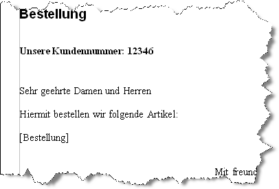
[fig:bestell2]
‘Views’ en rapport avec les consultations
Cas
Cette view (Fig. [fig:faelle2] létabli une liste de tout les cas du patient actuellement sélectionné. l 6.8cm 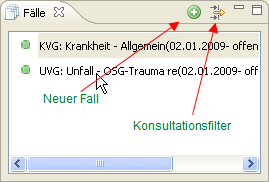 [fig:faelle2] Le symbole qui se trouve à gauche de la désignation du cas indique si toutes les données nécessaires ont été rassemblées pour que la facturation puisse être faite : S’il est vert, l’établissement de facture devrait être possible, s’il est rouge, manque encore une ou plusieurs données. Quelles indications minimales sont nécessaires, dépend du système de facturation. Ainsi, pour les cas qui sont facturés selon la LAMal,l’indication d’un destinataire de la facture, d’un assureur et du numéro d’assurance est nécessaire. Les cas qui sont comptabilisés selon la LAA nécessitent un numéro de cas. Pour des factures en privé un destinataire de la facture devra au moins être indiqué. [filter:fall] Un clic sur le symbole de filtre dans l’entête de la ‘View’ a pour conséquence qu’il n’y a plus que les consultations dans la liste de consultation (cf [view:konsultationen]) qui font partie du cas choisi actuellement. Si on choisi un autre cas, la liste est de nouveau filtrée. Cliquez encore une fois sur le symbole de filtre pour éteindre le filtre. Le clic droit sur un cas ouvre son menu de contexte. Celui-ci contient les points suivants :
Supprimer un cas
. Ceci n’est possible, que si vous avez les droits nécessaires, et si plus aucune consultation n’existe .
Modifier un cas
. Ceci ouvre une autre ‘View’, dans laquelle les détails pour le cas actuellement séléctionné peuvent être introduits.
Réouverture du cas
. Ceci permet de réactiver un cas déjà fermé. 14
Créer une facture
. Par ceci, une facture peut être produite qui concerne toutes les consultations non comptabilisées du cas actuel et du mandant actuel. Il s’agit d’un raccourci du procédé normale de l’établissement de facture qui convient surtout pour l’établissement immédiat de différentes consultations ou prestations.
=5000
Cas et consultations
l
7cm
 [fig:fallkons] Cette View (Fig. [fig:fallkons] montre une liste synoptique des cas et des consultations correspondantes (seulement titres sans textes). Si on choisi dans le secteur supérieur un cas en cliquant dessus, les consultations correspondantes de ce cas sont indiquées dans le secteur inférieur. Si on clique sur une consultation elle sera affichée dans la ‘View’ – consultation. (cf page [konsview] s. ) Pour établir un nouveau cas introduisez un titre pour ce cas et cliquez sur nouveau cas. Pour une nouvelle consultation choisissez le cas concerné et cliquez sur nouvelle consultation Remarque : Vous avez constaté que cette ‘View’ et la View ‘Cas’ traité antérieurement sont jusqu’à un certain point redondantes. C’est ainsi. Vous pouvez préférer des ‘Views’ séparés pour les ‘Cas’ et les ‘Consultations’ ou favoriser une seule ‘View’ qui contient les deux. En général, vous n’appliquerez pas les deux concepts en même temps, mais celui qui vous convient mieux – Elexis vous laisse le choix.
[fig:fallkons] Cette View (Fig. [fig:fallkons] montre une liste synoptique des cas et des consultations correspondantes (seulement titres sans textes). Si on choisi dans le secteur supérieur un cas en cliquant dessus, les consultations correspondantes de ce cas sont indiquées dans le secteur inférieur. Si on clique sur une consultation elle sera affichée dans la ‘View’ – consultation. (cf page [konsview] s. ) Pour établir un nouveau cas introduisez un titre pour ce cas et cliquez sur nouveau cas. Pour une nouvelle consultation choisissez le cas concerné et cliquez sur nouvelle consultation Remarque : Vous avez constaté que cette ‘View’ et la View ‘Cas’ traité antérieurement sont jusqu’à un certain point redondantes. C’est ainsi. Vous pouvez préférer des ‘Views’ séparés pour les ‘Cas’ et les ‘Consultations’ ou favoriser une seule ‘View’ qui contient les deux. En général, vous n’appliquerez pas les deux concepts en même temps, mais celui qui vous convient mieux – Elexis vous laisse le choix.
Historique des Consultations
[view:konsultationen]
L
7.5cm
 [fig:konslisteview] Ceci est une énumération de toutes les consultations précédentes du patient actuellement sélectionné, indépendamment du cas respectif. Pour chaque consultation le texte est affiché sans formatages. (cf Fig.[fig:konslisteview]). En cliquant sur le titre (bleu) d’une consultation vous choisissez cette consultation dans la ‘View Consultation’ (cf page ). En cliquant sur le symbole du filtre à droite en haut vous ouvrez la fenêtre du dialogue du filtre (cf Fig. [fig:konsfilter]). C’est ici que vous pouvez introduire les critères selon lesquels les consultations devraient être filtrées avant d’être affichées (que les consultations qui correspondent aux conditions du filtre soient affichées). Dans le champ supérieur vous pouvez indiquer si seulement des consultations d’un certain cas ou si tous les cas doivent être affichés. Dans le champ inférieur, vous pouvez suggérer les critères de recherche qui doivent exister dans le texte de la consultation. Plusieurs termes de recherche peuvent ainsi être liés avec AND, OR, NOT,AND NOT et OR NOT. Par exemple si on introduit Lorem AND NOT ipsum on ne trouve que les consultations dont le texte contient Lorem, mais pas ipsum. Tout en bas vous pouvez enfin encore indiquer si l’écriture majuscule/minuscule doit être considérée, ou si des critères de recherche doivent être considérés comme des termes fixes. Une explication précise de ce thème irait ici trop loin ; à ce sujet vous pouvez trouver beaucoup de littérature en utilisant les mots de recherche Regular Expressionou Pattern Matching. Cette technique permet de décrire le critère de recherche avec différents caractères de remplacement. Ainsi permet p. ex.M[ae][iy]e?r de chercher tous les Meiers, Mayrs etc. donc toutes les formes d’écritures. Remarque : Filtrer l’historique par cette procédure peut durer quelques secondes, puisque le texte de chaque consultation doit être fouillé complètement. Si on veut filtrer seulement d’après des cas ou des problèmes, le filtre par cas correspondant (cf ) ou le filtre de liste de problème (cf )est en général plus efficace.
[ht]
[fig:konslisteview] Ceci est une énumération de toutes les consultations précédentes du patient actuellement sélectionné, indépendamment du cas respectif. Pour chaque consultation le texte est affiché sans formatages. (cf Fig.[fig:konslisteview]). En cliquant sur le titre (bleu) d’une consultation vous choisissez cette consultation dans la ‘View Consultation’ (cf page ). En cliquant sur le symbole du filtre à droite en haut vous ouvrez la fenêtre du dialogue du filtre (cf Fig. [fig:konsfilter]). C’est ici que vous pouvez introduire les critères selon lesquels les consultations devraient être filtrées avant d’être affichées (que les consultations qui correspondent aux conditions du filtre soient affichées). Dans le champ supérieur vous pouvez indiquer si seulement des consultations d’un certain cas ou si tous les cas doivent être affichés. Dans le champ inférieur, vous pouvez suggérer les critères de recherche qui doivent exister dans le texte de la consultation. Plusieurs termes de recherche peuvent ainsi être liés avec AND, OR, NOT,AND NOT et OR NOT. Par exemple si on introduit Lorem AND NOT ipsum on ne trouve que les consultations dont le texte contient Lorem, mais pas ipsum. Tout en bas vous pouvez enfin encore indiquer si l’écriture majuscule/minuscule doit être considérée, ou si des critères de recherche doivent être considérés comme des termes fixes. Une explication précise de ce thème irait ici trop loin ; à ce sujet vous pouvez trouver beaucoup de littérature en utilisant les mots de recherche Regular Expressionou Pattern Matching. Cette technique permet de décrire le critère de recherche avec différents caractères de remplacement. Ainsi permet p. ex.M[ae][iy]e?r de chercher tous les Meiers, Mayrs etc. donc toutes les formes d’écritures. Remarque : Filtrer l’historique par cette procédure peut durer quelques secondes, puisque le texte de chaque consultation doit être fouillé complètement. Si on veut filtrer seulement d’après des cas ou des problèmes, le filtre par cas correspondant (cf ) ou le filtre de liste de problème (cf )est en général plus efficace.
[ht]
 [fig:konsfilter]
[fig:konsfilter]
Consultation
[konsview] Aperçu détaillé d’une saisie de consultation(cf Fig. [fig:konsdetail]).
[ht]

[fig:konsdetail] Vous trouvez dans la zone de texte les possibilités supplémentaires suivantes :
- Makros
Ecrivez un texte quelconque, marquez-le avec la touche gauche de la souris, cliquez ensuite avec la touche droite de la souris et choisissez ‘comme macro…’ . Donnez un nom arbitraire à la macro. Si vous tapez à l’avenir le nom de la macro suivi d’un # le texte prédéfini de la macro est introduit dans le texte.
- Introduire des prestations
Si vous tapez le nom d’un bloc de prestation suivi d’un #, ce bloc est comptabilisé comme si vous l’aviez tiré avec la souris dans au champ de facturation.
- Commandes du texte
Il est possible d’introduire quelques commandes simples du texte:
Un mot au début d’une ligne qui est suivi d’un deux-points se présente en caractères gras, la même chose est le cas pour mot entre deux *. Un mot entre deux / est écrit en italique.
Certificat d’incapacité de travail
Cette ‘View’ sert à fixer une incapacité de travail . (Fig. [fig:auf]) .  [fig:auf] Une incapacité de travail se réfère toujours à un cas spécifique. Si aucun cas est marqué, vous serez d’abord invité d’en marquer un. Si vous cliquez sur le symbole nouveau(bouton vert avec un plus blanc), il apparaît une fenêtre dans laquelle vous pouvez fixer le début et la fin de l’arrêt de travail de même que le pourcentage de l’incapacité. En cliquant sur le symbole de l’imprimante , une ‘View’-Texte s’ouvre où vous pouvez effectuer encore manuellement des adaptations du texte du certificat avant de l’imprimer ou de le faxer.
[fig:auf] Une incapacité de travail se réfère toujours à un cas spécifique. Si aucun cas est marqué, vous serez d’abord invité d’en marquer un. Si vous cliquez sur le symbole nouveau(bouton vert avec un plus blanc), il apparaît une fenêtre dans laquelle vous pouvez fixer le début et la fin de l’arrêt de travail de même que le pourcentage de l’incapacité. En cliquant sur le symbole de l’imprimante , une ‘View’-Texte s’ouvre où vous pouvez effectuer encore manuellement des adaptations du texte du certificat avant de l’imprimer ou de le faxer.
Ordonnances
Dans cette ‘View’ les ordonnances seront enregistrées. Cliquez sur le symbolenouveau (bouton vert avec un plus vert) pour créer une nouvelle ordonnance avec la date actuelle. Tirez les articles (médicaments) par ‘Drag and Drop’ d’une liste d’article ou de la ‘View de médication à long terme’ dans cette ordonnance. En cliquant sur le symbole imprimantevous ouvrez une ‘texte-View’ dans laquelle vous pouvez encore faire des modifications manuelles avant d’envoyer l’ordonnance définitivement vers l’imprimante ou un appareil de télécopie ou vers un connecteur d’exportation. Pour tout cela un modèle avec le nom Ordonnance doit avoir été crée qui contient un espace réservé [lignes de prescription] dans lequel les articles choisis sont insérés.
Détails du cas
[falldetail] Cette ‘View’ (Fig. [fig:falldetail]) sert à ajuster les détails d’un cas (une boîte de dialogue avec la même View est ouverte, s’il faut ouvrir un nouveau cas( cf [definition:fall] page )).
[ht]

[fig:falldetail] Indiquez dans la boîte de choix en haut quel système de facturation doit être appliqué pour ce cas (cf aussi [settings:abrechnungssystem] page ). En dessous il y a un espace où vous pouvez choisir librement une désignation pour le cas. Celui-ci ne sert qu’à vos propres informations, afin que vous puissiez mieux distinguer les différents cas du même patient. La prochaine ligne, ‘la raison pour l’assurance’ est une indication qui apparaîtra sur les factures qui concernent le cas (si jamais le modèle de facturation contient un champ spécifique pour cela). La*date de départ * est généralement la date de la première consultation, ou en cas d’accident, la date de l’accident. La *date finale * désigne la date quand le cas est terminé. Un cas qui a une date de fin, est marqué comme ‘cas terminé’ dans la liste des cas (Fig. [fig:faelle2]) . Le cas terminé ne permet plus de ajouter une consultation de plus. Généralement, un cas ne devrait être terminé que s’il s’agit d’un accident qui est terminé, ou si le patient change d’assureur et si les données de facturation changent pour cette raison. La prochaine ligne, destinataires de la facture, est impérative, afin qu’une facture puisse effectivement être fournie. Cela doit être un contact déjà existant (p. ex. le patient lui-même). Toutes les autres lignes seront selon le choix du système de facturation différentes. Souvent il y existera aussi une ligne ‘répondant des coûts’ 15.
Diagnostics
[view:diagnosen] Cette ‘View’ (Fig. [fig:diagnosen]) sert à choisir des diagnostics et de les assigner aux consultations respectives.
l
7cm
 [fig:diagnosen] Vous voyez vers le bas une série d’onglets qui correspondent aux Plugins de code de diagnostic installés. (comme standard : Code tessinois, CIM-10, et CISP-2). Pour choisir un diagnostic vous choisissez d’abord entre ces onglets le système de codification correspondant et ensuite le code. Le choix peut avoir lieu par ‘Drag and Drop’ ou par double-clic . Vous voyez pour chaque système de codification, une fenêtre divisée en trois : Dans le secteur supérieur se trouvent vos diagnostics les plus fréquemment utilisés (c.-à-d. de l’utilisateur actuellement connecté) ; dans la partie moyenne se trouvent les diagnostics qui ont jusqu’ici le plus fréquemment été utilisés pour le patient en question et dans la partie inférieure se trouve la systématique entière du système de codification choisi. De cette façon vous avez toujours accès aux codes des diagnostics les plus fréquemment utilisés et vous n’auriez que rarement à fouiller la systématique entière.
[fig:diagnosen] Vous voyez vers le bas une série d’onglets qui correspondent aux Plugins de code de diagnostic installés. (comme standard : Code tessinois, CIM-10, et CISP-2). Pour choisir un diagnostic vous choisissez d’abord entre ces onglets le système de codification correspondant et ensuite le code. Le choix peut avoir lieu par ‘Drag and Drop’ ou par double-clic . Vous voyez pour chaque système de codification, une fenêtre divisée en trois : Dans le secteur supérieur se trouvent vos diagnostics les plus fréquemment utilisés (c.-à-d. de l’utilisateur actuellement connecté) ; dans la partie moyenne se trouvent les diagnostics qui ont jusqu’ici le plus fréquemment été utilisés pour le patient en question et dans la partie inférieure se trouve la systématique entière du système de codification choisi. De cette façon vous avez toujours accès aux codes des diagnostics les plus fréquemment utilisés et vous n’auriez que rarement à fouiller la systématique entière.
‘View’ – Résultats de laboratoire
Elexis permet de visualiser en même temps des résultats internes ou externes automatiquement ou manuellement introduits . La visualisation est défini par :
- Un élément de laboratoire spécifique attribué au résultat
- Une date d’analyse
- Un patient auquel est attribué le résultat
L’élément de laboratoire définit comment et où le résultat de laboratoire doit être affiché et de quel type de valeurs de laboratoire il fait partie. La création des éléments de laboratoire n’est normalement nécessaire que lors de l’installation du logiciel ou si vous voulez intégrer des nouvelles analyses dans votre liste d’analyses. La procédure précise est décrite sous configuration (page .
[htp]
 [fig:labview]
[fig:labview]
Introduction manuelle
Pour introduire des résultats du laboratoire manuellement, il faut procéder comme suit :
- S’il n’existe pas encore une colonne pour la date à laquelle vous faites les analyses, cliquez sur le signe Plus de couleur verte à droite en haut.
- Cliquez dans le champ où vous voulez introduire la valeur du labo. Introduisez la valeur et quittez par ‘enter’ ou la touche avec la flèche vers le bas.
Si un paramètre de laboratoire est numérique, et la valeur introduite se trouve hors du secteur de référence normal, le chiffre sera affiché en rouge. Vous pouvez activer ou désactiver manuellement ce réglage en cliquant sur le chiffre avec la touche droite de la souris et en activant ou désactivant le petit crochet devant l’indication pathologique.
Introduction automatisée
Il va de soi qu’Elexis soit capable de introduire automatiquement les résultats de laboratoire. Pour ceci on utilise le ‘view-menu’ dans le coin supérieur droit :
r
7cm
 Cliquez sur importation et choisissez dans la boîte de dialogue la source des valeurs de laboratoire à introduire. De quelles sources il s’agit dépend des Plugins existants pour l’importation des résultats de laboratoire. Des appareils de laboratoire et différents laboratoires externes entrent en ligne de compte. Vous trouvez une liste actuelle de tous les Plugins d’importation de résultats de laboratoire existants sur http://www.elexis.ch.
Cliquez sur importation et choisissez dans la boîte de dialogue la source des valeurs de laboratoire à introduire. De quelles sources il s’agit dépend des Plugins existants pour l’importation des résultats de laboratoire. Des appareils de laboratoire et différents laboratoires externes entrent en ligne de compte. Vous trouvez une liste actuelle de tous les Plugins d’importation de résultats de laboratoire existants sur http://www.elexis.ch.
Impression d’une feuille de labo
Pour imprimer un feuille de laboratoire vous cliquez sur le symbole de l’imprimant qui se trouve à droite en haut. Ceci va créer un tableau dans le modèle de texte du système nommé feuille labo, qui contient une variable [Valeurs de labo] (cf aussi [textvorlagen]).
Laboratoire Nouveau
Cette ‘View’ permet d’afficher toutes les valeurs de laboratoire qui n’ont pas encore été marquées comme vu et permet en même temps de les marquer comme vues. (cf Fig. [fig:labneu]). 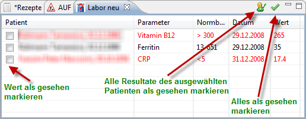 [fig:labneu] Des valeurs à l’extérieur du secteur de référence sont représentées en rouge. Dans la boîte de contrôle à gauche, on peut marquer avec un crochet les résultats déjà vus. Après quelques temps, les résultats vus seront éliminés de la liste. (tant qu’ils ne sont pas encore éliminés, on peut éliminer la marquage ‘vu’ en cliquant à nouveau dessus). Des valeurs qui ont plus que 96 heures seront éliminées automatiquement de la liste. En cliquant sur un résultat d’un patient on déclenche l’activation de la feuille labo de ce patient spécifique ( … si jamais une View-Labo est ouverte). Pour marques les résultats comme vues on peut sélectionner soit seulement quelques valeurs soit tous les résultats du patient en question. Pour marquer des valeurs une à une ou dans l’ensemble comme ‘vu’, il faut avoir le droit : fichiers/patient/terminer labo(cf [sec:gruppen], pageff.)
‘Views’ en relation avec la facturation
Consultations selon date
l 7.3cm 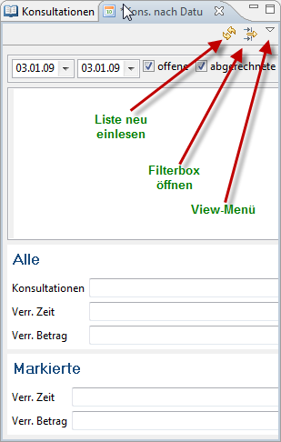 [fig:heute] Cette View (Fig. [fig:heute]) sert à afficher les consultations d’une certaine période (normalement celles du jour actuel). Elle donne un aperçu de facturation et du temps calculé pour chaque consultation en particulier et aussi du total. En cliquant sur la ‘check-box’, vous pouvez laisser calculer des consultations ouvertes 16 ou clôturées ou les deux. Vous pouvez indiquer dans les champs de date le début et la fin de la période en question. Après chaque modification vous devez utiliser le bouton ‘actualiser liste’ pour que la liste sera calculée à nouveau. Dans la section inférieure de la ‘View’ vous apercevez le nombre total des consultations au cours de la période choisie, ainsi que (défini par le système de codage de prestation) le temps et le montant comptabilisé. Dans le champ dessous vous voyez les mêmes indications pour la consultation actuellement marquée en bleu. Vous pouvez donc utiliser cette ‘View’ aussi pour pouvoir passer revu le soir toutes les consultations de la journée et pour introduire les prestations ou pour les corriger. En outre, cette ‘View’ permet des fonctions statistiques simples : Si vous cliquez sur le bouton ‘filtre’, une boîte de filtre s’ouvre dans la partie supérieure de la ‘View’. Depuis une fenêtre de facturation vous pouvez tirer les positions que vous voulez prendre en compte vers cette boite. Lors de la prochaine actualisation de la liste, la ‘View’ ne calculera que des consultations dans lesquelles apparaît au moins un des codes de positions souhaités. Les codes et les sommes totales seront alors énumérés séparément (lors de l’impression, voir ci-dessous). Dans ‘view-menu’ vous trouvez l’option ‘imprimer liste’. En cliquant dessus, une fenêtre s’ouvre contenant un tableau qui énumère et fait imprimer les consultations indiquées. Pour des statistiques plus détaillées vous pouvez choisir aussi dans la’view-menu’ l’option ‘statistiques’. Ceci fourni un fichier en format CSV17 qui peut être lu et statistiquement conditionné par des programmes comme OpenOfficde.org calc ou MicrosoftExcelCe fichier contient toutes les positions comptabilisées avec fréquence, coûts et chiffre d’affaire.
Consultations à facturer
Cette View (cf Fig. [fig:konsv])sert à choisir les consultations, dont une facture doit être établie. Ceci concerne seulement les consultations du mandant actuel.
[hb]
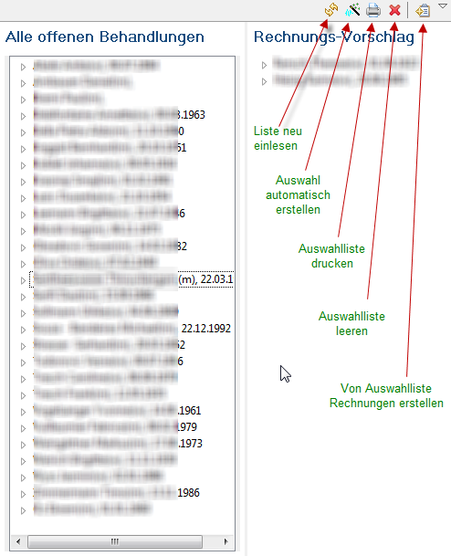
[fig:konsv] Pour cela il y a des possibilités suivantes :
- Choix automatique (Icône de baguette magique) : Les consultations à facturer sont choisies automatiquement d’après certaines règles et transférées dans la liste de choix. Cela sera expliqué ci-dessous plus précisément (facturation automatique).
- Tirer le nom du patient vers la liste de choix : Toutes les consultations concernant tous les cas (LAMAL , LAA etc) du patient choisi sont marquées pour être facturées.
- Tirer des cas (LAMA ; LAA etc) depuis la liste vers la liste de choix : Toutes les consultations des cas choisis sont marquées pour être facturées.
- Tirer des consultations depuis la liste vers la liste de choix : Seulement les consultations choisies sont marquées pour être facturées.
Avec toutes les méthodes mentionnées vous pouvez librement modifier votre choix postérieurement. Vous pouvez ajouter d’autres éléments, ou vous pouvez éliminer des éléments (après clic droit sur un élément dans la liste de choix), ou vous pouvez supprimer même le choix entier. A ce moment là il n’y a pas encore eu de modification des données . Si vous avez fini de choisir vous pouvez cliquer sur établir les facturespour que les factures pour tous les éléments présents dans le choix soient établies. Toutes les consultations qui font partie d’un cas sont toujours résumées. Plusieurs factures sont ainsi fournies si plusieurs cas d’un patient se trouvent dans la liste de choix.
Facturation automatique
[auto] Par cette méthode la facturation des consultations suit des critères spécifiquement déterminés auparavant (cf Fig. [fig:rnautomatik]). 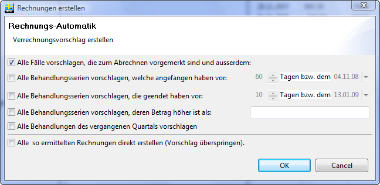 [fig:rnautomatik]
- Proposer tout les cas qui sont retenu pour la facturation : Si vous cliquez cette ‘check-box’ les consultations des cas seront choisis pour lesquels vous avez spécifié une date de facturation dans les détails du cas. (voir Fig. [fig:falldetail]).
- Proposer toutes les séries de traitement qui ont commencé avant le … : Choisit toutes les consultations non facturées d’un cas (LAMA, LAA etc) jusqu’aujourd’hui à condition qu’au moins une consultation avait eu lieu avant la date limite.
- Proposer toutes les séries de traitement qui ont été terminées avant le … : Choisit toutes les consultations non facturées d’un cas (LAMA, LAA etc) à condition que la dernière consultation avait eu lieu avant la date limite.
- Proposer toutes les séries de traitement dont la somme est plus grande que … : Choisit toutes les consultations non facturées d’un cas (LAMAL, LAA etc) à condition que la somme totale de la facture dépasse le montant choisi.
- Proposer la facturation de tous les traitements du trimestre passé : Facturation du dernier trimestre selon le calendrier avec les dates limites suivantes : 31.3 ; 30.6 ; 30.9 et 31.12.
S’applique à toutes les options : N’est exploitée seulement lorsque le crochet est mis dans la ‘check-box’. Il ne suffit donc pas de seulement introduire une valeur. Les différentes options s’appliquent de façon additive : Finalement toute consultation est choisie pour la facturation à la quelle s’applique au moins un des critères actifs.
Factures
[ht]

[fig:rechnungen] Dans cette ‘View’ (Fig. [fig:rechnungen])vous voyez les factures établies. Une facture a toujours un ‘état’ spécifique :
- Ouvert
- immédiatement après la facturation.
- Ouvert et imprimé
- La facture avait été édité au moins une fois (soit par impression soit par une autre méthode d’exportation). A partir de ce moment le délai de payement commence à s’écouler. (Toutefois Elexis ne peut pas constater si par exemple une facture n’a pas été correctement imprimé ou si elle n’avait pas été envoyée. Pour cette raison se trouve ici une source d’erreurs potentielle.)
- Rappel
- Le rappel a été établi mais pas encore imprimé.
- Rappel imprimé
- Le rappel a été imprimé.
- 2ième Rappel établi, 2ième Rappel imprimé, 3ième Rappel établi, 3ième Rappel imprimé
- : en analogie
- Payement partiel
- Il y a au moins un payement mais qui ne couvre pas la totalité de la facture.
- payée
- La facture a été entièrement payée par un ou plusieurs paiements.
- payé trop
- ça peut aussi arriver pour une fois ;-)
- Perte partielle
- Une partie de la facturation est définitivement mise dans les pertes (Contrairement à la situation du payement partiel vous ne comptez plus avec un payement de plus)
- Perte totale
- La facture entière fait partie des pertes.
- En poursuite
- exactement ça
- Annulé
- Une fois une facture établie, elle ne peut plus être supprimée. Cela doit être ainsi car sinon il serait possible que quelqu’un réclame une facture qui n’existe plus ou que quelqu’un veut des renseignements concernant une facture inexistante. Lorsqu’une facture est invalide pour une raison quelconque (erreurs, exonération du montant etc.) elle doit être annulée. L’annulation d’une facture a dans tous les aspects pratiques le même effet qu’une suppression à part du fait que le numéro de facture reste attribué et que la facture peut être examinée plus tard encore.
- faux
- Si un module de facturation constate qu’une facture contient des fautes (par ex. le module Trust-X pourrait réclamer qu’il y manquent certaines numéros EAN) la facture concernée reçoit le signe ‘faux’ et peut donc être corrigée.
- à imprimer
- Toutes les factures encore ouvertes mais pas encore imprimées de même que les rappels pas encore imprimés se trouvent dans cet état.
- encours des crédits
- L’ensemble de tout des factures ‘ouvertes et imprimées’ , des ‘rappels imprimés’, des ‘2ième rappel imprimé’ des ‘3ième rappel imprimé’ des ‘payements partiels’ et des factures ‘en poursuite’. Il s’agit donc de toutes les factures dont vous attendez encore un payement.
- Stop des rappels
- exactement ça
La liste de facturation peut être sélectionné selon des différents critères. Pour mettre à jour la liste avec les données modifiées veuillez cliquer sur le bouton ‘actualiser liste’. Pour afficher les factures d’un certain état veuillez choisir l’état en question sur le menu déroulant en haut à gauche sous ‘état’ (cf Fig. [fig:rechnungen]). Pour afficher que la facture d’un patient spécifique cliquez sur patient. La boite de dialogue s’affiche pour vous laisser choisir les contacts. Introduisez la nom du patient et sélectionnez-le ensuite sur la liste. Cliquez sur o.k ou sur annuler pour retourner à l’affichage de la liste de tout les patients. Pour ne choisir qu’un numéro de facture spécifique veuillez entrer le numéro dans le champ ‘No de facture’ et appuyez sur la touche ‘Entrée’ ou cliquez sur ‘actualiser liste’. Pour chercher une facture avec un montant spécifique (par ex. pour classer un payement de provenance non connue veuillez introduire le montant et poussez la touche d’entrée. Si vous cliquez sur le symbole ‘filtre’ vous recevez des options supplémentaires concernant l’affichage. l 7cm 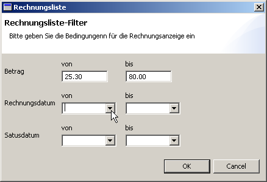 Les champs ‘Montant : de – à’ servent à filtrer une somme spécifique. Vous pouvez aussi remplir qu’un des deux champs de sorte que l’autre devienne un limitation ouverte. Les champs date de facturation de et date de facturation jusque servent à chercher des factures uniquement émises entre les deux dates mentionnées. Par contre les champs dates d’état : de – à permettent à filtrer des factures dont la dernière modification d’état se trouve entre les deux dates introduites. Aussi ici vous pouvez remplir un seul champ et laisser l’autre ouvert. Si vous sortez de ce dialogue en cliquant sur OK, la liste sera actualisés selon vos nouveaux critères. Tant que le bouton ‘filtre’ reste enclenché toutes les ‘actualisations de liste’ seront liés avec le Filtre ET. Si vous filtrez par exemple la date ’d’état’ jusqu’au 30.10.2007 et vous cliquez après dans le menu déroulant sous ‘état’ sur ‘2ième rappel imprimé’ et vous appuyez sur le bouton ‘actualiser liste’, vous trouverez toutes les factures qui avaient été mises avant le 30.10.2007 dans l’état ‘2ième rappel imprimé’. En bas de cette fenêtre vous voyez la quantité de factures qui remplissent ces conditions et les sommes les concernant.
Le ‘View-menu’ (triangle à droite en haut, cf Fig. [fig:rechnungen]) a des options suivantes :
- Affichage complet / Affichage réduit
- Montre toutes les donnés en détail ou les réduit aux titres.
- Imprimer liste
- Imprime une liste de tout les patients respectivement factures qui sont marquées dans l’affichage actuel. Pour cette action il faut qu’il y existe un modèle d’impression pour le système nommé ‘liste’ qui contient un champ (liste).
Changer une facture
Vous pouvez changer la facture si vous cliquez avec la touche droite de la souris sur une facture dans la liste :
- Facturer
- Facturer une facture séparée. (v. ci-dessous)
- Comptabiliser paiement
- Vous pouvez introduire ici les paiements manuellement . Par exemple des paiements comptants ou les paiements par acompte. (Normalement la comptabilisation par fichier ESR se fait automatiquement).
- Ajouter émolument
- Ajouter manuellement par ex. les frais de rappel.
- Changer l’état
- On peut changer l’état de la facture manuellement. Elexis reconnaît la majorité des changements de l’état d’une facture. Ainsi change l’état des factures payées automatiquement sur payée lorsqu’un fichier ESR de la banque est comptabilisé. Certains changements de l’état ne peuvent se faire que manuellement. Par exemple : Elexis ne peut par distinguer automatiquement entre paiement partiel et perte partielle puisque ceci doit être lié à une décision du créancier. La même chose vaut pour les factures En poursuite et la perte totale.
A part de ça il faudra toujours être prudent avec des changements manuelles de l’état d’une facture car il n’y se font pas de corrections de comptabilisation.
- Augmenter le niveau de rappel
- Ceci augmente le niveau de rappel d’une étape jusqu’au maximum du 3ième rappel.
- Annuler
- Ceci permet d’annuler une facture. Il y existe la possibilité de débloquer certains traitements (lorsque la facture était erronée et doit être refaite) ou de les laisser bloqués (si le traitement ne doit définitivement pas être facturé).
Facturation
Par le bouton facturation toutes les factures sélectionnées seront facturées. (Pour sélectionner une facture cliquez avec la touche gauche de la souris sur la facture. Pour sélectionner plusieurs factures sur la liste cliquez sur ces factures en tenant enfoncée en même temps la touche CTRL (ou MAC). Pour marquer toute une rangée de factures cliquez d’abord sur la première facture et après, en tenant la touche SHIFT, sur la dernière facture de la rangée.) Elexis ne facturera donc pas toute la liste mais seulement les factures sélectionnées de la liste ! Les cibles possibles de la facturation dépend des différents ‘Plugins de facturation’ installés. La cible peut par exemple être une imprimante qui imprime des factures selon TARMED, mais elle peut aussi être un fichier XML ou directement un centre de confiance. Des informations plus précises vous pouvez trouver dans les chapitres respectives (Tarmed: page ). En cliquant sur le symbole de la baguette magique vous mettez en route l’automatisme de l’établissement des rappels. Celle-ci choisit les factures à rappeler selon les critères fixés dans le champ en bas à droite, augmente le niveau de rappel, ajoute des émoluments comme prédéterminé et réunit ces factures en groupes à imprimer.
Compte du patient
Cette ‘View’ permet de voir tous les mouvements de compte du patient. Les factures se comptabilisent par des chiffres négatifs, les paiements ou annulations par des chiffres positifs de sorte que vous puissiez apercevoir facilement et à travers plusieurs facturations et paiements où vous en êtes avec ce client du point de vu financier.
Liste des comptes des patients
Cette liste permet de voir tous les mouvements de compte en même temps.
Prestations
Cette ‘View’ fonctionne de façon semblable comme la ‘View-Diagnostics’ (page [view:diagnosen] à la page ): Dépendant des Plugins pour le codage des prestations installés on trouve pour chaque système de codage un onglet . Pour des précisions veuillez consulter [concept:leistung] à la page .
‘Views’ divers
Affichage des données
Cette ‘View’ permet d’afficher des multiples champs de la base de données de Elexis. Plusieurs exemplaires de cette ‘View’ (avec du contenu identique ou variable) peuvent être intégrés dans une perspective. (cf Fif. [figure1]).
[hb]  [figure1]
En cliquant sur le bouton- + vous pouvez ouvrir un exemplaire supplémentaire de cette ‘View’ , en cliquant sur le bouton pour éditer vous pouvez ajuster les données à afficher.
[hb] 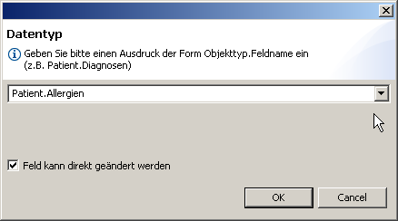 [figure2]
Il apparaîtra une boite de dialogue comme montré dans Fig. [figure2]. Vous pouvez introduire ici chaque type de données qui peut également être utilisé comme variable dans des présentations de texte (cf page ). Si vous activez la case ‘champ peut être modifié’ (à condition que vous avez les droits pour ceci) les donnés peuvent être modifiés directement en écrivant dans cette fenêtre. L’arrangement et le contenu des ‘affichages de données’ sont sauvegardés lors de la fermeture de Elexis ou lors de l’action ‘sauvegarde de perspective’.
[figure1]
En cliquant sur le bouton- + vous pouvez ouvrir un exemplaire supplémentaire de cette ‘View’ , en cliquant sur le bouton pour éditer vous pouvez ajuster les données à afficher.
[hb] 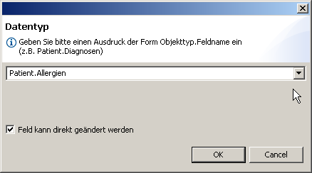 [figure2]
Il apparaîtra une boite de dialogue comme montré dans Fig. [figure2]. Vous pouvez introduire ici chaque type de données qui peut également être utilisé comme variable dans des présentations de texte (cf page ). Si vous activez la case ‘champ peut être modifié’ (à condition que vous avez les droits pour ceci) les donnés peuvent être modifiés directement en écrivant dans cette fenêtre. L’arrangement et le contenu des ‘affichages de données’ sont sauvegardés lors de la fermeture de Elexis ou lors de l’action ‘sauvegarde de perspective’.
Médication fixe
Cette ‘View’ montre la médication fixe du patient sélectionné actuellement (cf Fig. [fig:fixmedi]) [htp] 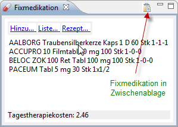 [fig:fixmedi] Vous pouvez tirer les médicaments depuis la fenêtre des articles ou depuis une ordonnance directement dans cette ‘View’ et vous pouvez aussi tirer des articles depuis la médication fixe dans une ordonnance. Par un clic sur ajouter… ouvrez la ‘View’-articles. En cliquant sur liste… vous créez un plan de traitement pour le patient. Pour ceci il doit exister une présentation de texte nommée plan de traitement et celle-ci doit contenir quelque part la variable [liste des médicaments]. En cliquant sur ordonnance vous créez une ordonnance contenant la médication régulière du patient. Pour ceci doit exister une présentation de texte nomméeordonnancequi contient quelque part une variable [lignes d’ordonnance].
Historique de la médication
Cette ‘View’ montre tous les médicaments, qui ont jamais été prescrits ou donnés au patient actuel, avec date et dosage (si mentionné). En cliquant sur les en-têtes des différentes colonnes vous pouvez ordonner la liste selon date de remise ou selon nom du médicament. Pour les médicaments qui font partie de la médication fixe il y a aura en outre (si c’est précisé) mention de la date d’arrêt du médicament.
Compendium online
Si vous avez une connexion Internet active vous voyez dans cette ‘View’ le compendium Suisse des médicaments .
Open Drug Database
Lorsque vous avez une connexion Internet active, cette ‘View’ affiche le site correspondant que vous pouvez utiliser pour la recherche des génériques ou des interactions médicamenteuses.
Affaires pendantes
Rappels, Reminders, affaires pendantes : Cette ‘View’ affiche les choses dont vous aimeriez ou vous devriez vous souvenir (cf Fig. [fig:pendenzen]).
l
7.5cm
 [fig:pendenzen]
Une affaire pendante a une date d’échéance et un état (planifié, vient à l’échéance, en retard, réglé, reste inachevé).
l y a les types suivants d’affaires pendantes :
[fig:pendenzen]
Une affaire pendante a une date d’échéance et un état (planifié, vient à l’échéance, en retard, réglé, reste inachevé).
l y a les types suivants d’affaires pendantes :
- Devoirs pour une personne ou devoirs pour tous.
- Rappels qui s’affichent toujours lorsque la date d’échéance est atteinte ou dépassée.
- Rappels qui s’affichent seulement lorsque la date d’échéance est atteinte et si un patient spécifique est affiché..
- Affaires pendantes qui ne sont pas seulement affichées mais qui déclenchent aussi une action spécifique (par ex. écrire une lettre en série)
Le symbole des affaire pendantes s’affiche dans la liste des patients (cf Fig. [fig:pendenzen])si des affaires pendantes concernent un patient. Pour créer une nouvelle ‘affaire pendante’ cliquez sur le symbole nouvelle affaire pendante(boutton vert avec Plus blanc). Une boite de dialogue apparaîtra dans laquelle vous pouvez introduire un texte, choisir le type d’affaire pendante, la personne responsable, la date de l’échéance et l’état de l’affaire pendante. Un double-clic sur une affaire pendante suffit pour ouvrir celle-ci pour la modifier. Il apparaît la même boite de dialogue.
Plugins
Pourquoi des Plugins ?
[expl:plugins] L’expérience avec de plus vieux programmes a montré que la maintenance et l’extension devenait de plus en plus difficile au fur et à mesure que la quantité de leurs fonctions augmentaient. Modifier postérieurement une certaine fonction (p. ex. un nouveau système de facturation) demandait un investissement énorme et risquait de provoquer des fautes. En outre, des modifications et des extensions ne pouvaient être programmés que par le fabricant lui-même, puisque le code de programme entier était en un morceau war. Si on avait besoin d’une fonction qui s’utilisait plutôt rarement, on devait s’attendre à des factures salées (pour autant que l’entreprise avait effectivement intérêt à mettre en oeuvre une certaine fonction que pour un client particulier). Ici, le ‘Plugin-System’ entre en jeu. A l’origine ce système a été développé pour Eclipse, où il y a eu des exigences semblables, comme dans Elexis : Une multiplicité d’extensions potentielles, dont toutefois pas chaque utilisateur a besoin, et qui ne peuvent pas tous être connus au moment la fabrication. Le concept du Plugin s’est établi entre-temps et a atteint un degré de maturité élevé. En principe ça se passe de façon suivante : Une multitude de positions dans le programme sont équipées d’emblée avec ce que l’on appelle des points d’élargissement. Ce sont des _contacts à fiches _ bien documentés , auxquels des Plugins se raccordent. Le fabricant du Plugin ne nécessite pas à connaître plus que la documentation du point d’élargissement. Il n’a besoin ni de connaître le programme principal ni de se former en ce qui concerne son code source. Un Plugin peut mettre en oeuvre qu’une minuscule fonction particulière ou il peut être un programme autonome qui nécessite seulement une certaine coopération avec le programme principal. Dans Elexis, les systèmes de code de diagnostic et de facturation ont été réalisés par exemple comme Plugins afin que des nouveaux systèmes de code puissent être à tout moment insérés sans modification du programme principal. Sont également réalisés comme Plugin le traitement de texte à intégrer et les possibilités d’importer des données d’un autre programme, du laboratoire et des appareils.
Installer un Plugin
L’installation des Plugins est très facile : Il ne faut que le copier dans dans le répertoire des _plugins_de Elexis et redémarrer Elexis.
Désinstaller un Plugin
La désinstallation est aussi facile : Il ne faut qu’ effacer le plugin qui se trouve dans le répertoire des plugins et redémarrer Elexis.
Liste des Plugins
Une liste de tout les Plugins qui nous sont connus se trouve en Internet sous :
http://www.elexis.ch/jp/content/view/105/78/.
Une telle liste ne peu jamais être exhaustive car d’un côté nous ne connaissons pas forcément tout les Plugins (des tiers peuvent développer des Plugins sans nous en parler) et de l’autre côté il y a toujours des nouveaux Plugins qui sont développés. Quelques-uns des Plugins importants sont décrits dans le chapitre [Agenda]et suivants . Pour les autres vous trouverez une documentation sur le site web. Dans l’installation complète de Elexis, qui peut être téléchargée depuis notre site web, se trouvent les Plugins suivant de façon standard :
- elexis-artikel-schweiz
- Plugin pour intégrer la fiche produit Galdat (abonnement spécifique nécessaire) et la liste MiGeL.
- elexis-arzttarife-schweiz
- Plugin pour intégrer le Tarmed et Tarif LFA (liste fédérale des analyses)..
- elexis-diagnosecodes-schweiz
- Plugin pour intégrer CIM-10 et le Code Tessinois (TI-Code).
- elexis-medikamente-BAG
- Plugin pour intégrer la liste des spécialités.
- elexis-icpc
- Plugin pour intégrer le Code CISP (la licence doit être commandée chez la SSMG)
- elexis-agenda
- Agenda multiposte pour plusieurs mandants.
- noatext
- Intégration de Office-Suite OpenOffice
- elexis-nachrichten
- Plugin pour envoyer des simples informations de texte entre les postes de travail.
- medshare-directories
- Plugin pour lire les données d’adresses qui se trouvent dans des répertoires publiquement accessibles.
- elexis-bildanzeige
- Plugin pour pouvoir intégrer des images dans le texte des consultations.
- elexis-omnivore
- Plugin pour le classement de quelconque document dans le dossier des patients.
Agenda de Elexis
[Agenda]
Il s’agit d’une agenda multiposte pour plusieurs mandants. Ce Plugin fait parti de la distribution standard. Ce qui suit explique la configuration et l’utilisation de l’agenda.
Configuration
Choisissez dans le menu Fichier -Options. Si le Plugin Agenda est installé, vous trouverez là une rubrique Agenda:  Dans la partie supérieure Zone d’utilisateur vous pouvez définir combien et quelles agendas peuvent être gérées parallèlement. Il peut s’agir par exemple d’une agenda pour chaque médecin d’un cabinet de groupe, ou des agendas pour des différentes ressources comme par exemple le médecin, ECG, Laboratoire, Ergométrie etc. La quantité et le titre des ‘zones d’utilisateur’ dépend entièrement des besoins spécifiques de votre cabinet médical. En dessous vous trouvez type de rendez-vous . Dans cette rubrique vous définissez quels types de rendez-vous sont à gérer par l’agenda dans votre cabinet. Un ‘type de RDV’ peut être toute sorte d’inscription qui se fera dans l’agenda. Par exemple aussi des colloques avec l’équipe, Acupuncture, Check-Up, Formation etc. Les ‘types de RDV’ seront affichés plus tard de façon individuelle et peuvent suivre des horaires différents. Les deux premières inscriptions , ‘libre’ et ‘réservé’, doivent être introduits avec cette signification et dans cette séquence mais peuvent aussi être nommé différemment (par ex. vide et bloqué). Les autres lignes vous pouvez nommer de façon arbitraire et il peut y avoir autant que vous voulez. Le champ tout en bas, état du rendez-vous, est également très dépendant de la réalité spécifique de votre cabinet médicale. Comme dans le cadre des ‘types de RDV’ les deux premières inscriptions sont fixes dans leur signification mais peuvent changer de nom, tandis que les autres inscriptions sont tout à fait libres. On pourrait introduire ici par ex. annulé, attend résultats labo, attend médecin etc. La prochaine page de réglage de l’agenda concerne les icônes par lesquels les différents types de rendez-vous peuvent être affichés. Vous arrivez aux icônes dans la liste gauche sous rubrique ‘utilisateurs’ – ‘Agenda-icons’. image (Si en cliquant sur ‘Agenda-icons’ les ‘types de RDV’ que vous venez d’introduire ne s’affichent pas, il faut fermer Elexis et redémarrer pour qu’ils soient lus correctement.). Cliquez sur le bouton modifier et choisissez une image dans le format .*gif, *png oder *.ico . La partie suivante concerne les couleurs d’affichage pour les ‘types de RDV’ et ‘état du RDV’ : image Choisissez sous ‘utilisateur -couleurs’ la couleur qui vous convient pour les différents champs des types de rendez-vous et d’état du RDV. Après un double-clic sur un champ vous pouvez choisir sa couleur. image La ligne supérieure concerne les ‘types de RDV’. Les couleurs affichées ici seront affichées dans le dialogue où on introduit les rendez-vous. La ligne inférieure concerne ’l’état du RVD’. Les couleurs affichées ici seront affiché dans l’affichage normale de l’agenda. La partie suivante du réglage de l’agenda concerne l’organisation de la journée : image Ici on peut régler pour chaque jour de la semaine les périodes qui seront de façon standard à disposition pour la planification. Ceci peut naturellement aussi être changé ultérieurement pour chaque jour mais ici il s’agit des préréglages approchés. Choisissez en haut la ‘zone d’utilisateur’ souhaitée (par ex. un médecin du cabinet de groupe) et introduisez ici le début et la fin des périodes qui ne sont pas à disposition pour la planification. Ces plages de temps seront ensuite occupé par le ‘type de RDV’ bloqué bloqué. Vous pouvez introduire des périodes de ce genre ad libitum pour chaque jour de la semaine. . La dernière partie du réglage de l’agenda concerne le réglage du temps à programmer pour chaque ‘type de RDV’ : image Ici vous voyez pour chaque ‘zone d’utilisateur’ et chaque ‘type de RDV’ une possibilité de fixer le temps à programmer . Vous pouvez changer chaque champ en cliquant dessus et en écrivant par-dessus. L’agenda consacrera de façon standardisé le temps fixé pour ce type de RDV mais celui pourra être adapté manuellement si nécessaire. Si vous introduisez à un endroit 0, le type de RDV ne sera pas disponible pour cette ‘zone d’utilisateur’. La ligne supérieure est le temps standard qui est toujours appliqué si le système ne trouve pas une autre durée spécifique. En outre vous pouvez faire quelques réglages pour imprimer des cartes de rendez-vous. Ces réglages vous pouvez trouver sous impression. image Le modèle standard pour l’impression des cartes pour rendez-vous s’appelle carte RDV. Vous pouvez choisir un autre modèle système quelconque. Les heures du rendez-vous seront intégrés dans la variable [rendez-vous]. Lors de l’impression de la carte RDV une fenêtre s’ouvre qui montre un aperçu de la carte RDV. Vous pouvez imprimer la carte RDV depuis le traitement de texte. Si vous voulez que la carte RDV soit imprimée directement sur l’imprimante, marquez imprimer directement. Vous pouvez ensuite choisir l’imprimante et de façon optionnelle le bac de l’imprimante en question. Si vous ne choisissez pas de bac , le bac mémorisé dans le modèle système ou le bac standard de l’imprimante séléctionnée sera utilisé. image Vous venez de finir la configuration de l’agenda. Cliquez sur la touche OK et fermez Elexis. A partir du prochain démarrage du logiciel, les nouveaux réglages seront à disposition. Les prochaines pages ont pour but de vous montrer l’utilisation de l’agenda.
Dans la partie supérieure Zone d’utilisateur vous pouvez définir combien et quelles agendas peuvent être gérées parallèlement. Il peut s’agir par exemple d’une agenda pour chaque médecin d’un cabinet de groupe, ou des agendas pour des différentes ressources comme par exemple le médecin, ECG, Laboratoire, Ergométrie etc. La quantité et le titre des ‘zones d’utilisateur’ dépend entièrement des besoins spécifiques de votre cabinet médical. En dessous vous trouvez type de rendez-vous . Dans cette rubrique vous définissez quels types de rendez-vous sont à gérer par l’agenda dans votre cabinet. Un ‘type de RDV’ peut être toute sorte d’inscription qui se fera dans l’agenda. Par exemple aussi des colloques avec l’équipe, Acupuncture, Check-Up, Formation etc. Les ‘types de RDV’ seront affichés plus tard de façon individuelle et peuvent suivre des horaires différents. Les deux premières inscriptions , ‘libre’ et ‘réservé’, doivent être introduits avec cette signification et dans cette séquence mais peuvent aussi être nommé différemment (par ex. vide et bloqué). Les autres lignes vous pouvez nommer de façon arbitraire et il peut y avoir autant que vous voulez. Le champ tout en bas, état du rendez-vous, est également très dépendant de la réalité spécifique de votre cabinet médicale. Comme dans le cadre des ‘types de RDV’ les deux premières inscriptions sont fixes dans leur signification mais peuvent changer de nom, tandis que les autres inscriptions sont tout à fait libres. On pourrait introduire ici par ex. annulé, attend résultats labo, attend médecin etc. La prochaine page de réglage de l’agenda concerne les icônes par lesquels les différents types de rendez-vous peuvent être affichés. Vous arrivez aux icônes dans la liste gauche sous rubrique ‘utilisateurs’ – ‘Agenda-icons’. image (Si en cliquant sur ‘Agenda-icons’ les ‘types de RDV’ que vous venez d’introduire ne s’affichent pas, il faut fermer Elexis et redémarrer pour qu’ils soient lus correctement.). Cliquez sur le bouton modifier et choisissez une image dans le format .*gif, *png oder *.ico . La partie suivante concerne les couleurs d’affichage pour les ‘types de RDV’ et ‘état du RDV’ : image Choisissez sous ‘utilisateur -couleurs’ la couleur qui vous convient pour les différents champs des types de rendez-vous et d’état du RDV. Après un double-clic sur un champ vous pouvez choisir sa couleur. image La ligne supérieure concerne les ‘types de RDV’. Les couleurs affichées ici seront affichées dans le dialogue où on introduit les rendez-vous. La ligne inférieure concerne ’l’état du RVD’. Les couleurs affichées ici seront affiché dans l’affichage normale de l’agenda. La partie suivante du réglage de l’agenda concerne l’organisation de la journée : image Ici on peut régler pour chaque jour de la semaine les périodes qui seront de façon standard à disposition pour la planification. Ceci peut naturellement aussi être changé ultérieurement pour chaque jour mais ici il s’agit des préréglages approchés. Choisissez en haut la ‘zone d’utilisateur’ souhaitée (par ex. un médecin du cabinet de groupe) et introduisez ici le début et la fin des périodes qui ne sont pas à disposition pour la planification. Ces plages de temps seront ensuite occupé par le ‘type de RDV’ bloqué bloqué. Vous pouvez introduire des périodes de ce genre ad libitum pour chaque jour de la semaine. . La dernière partie du réglage de l’agenda concerne le réglage du temps à programmer pour chaque ‘type de RDV’ : image Ici vous voyez pour chaque ‘zone d’utilisateur’ et chaque ‘type de RDV’ une possibilité de fixer le temps à programmer . Vous pouvez changer chaque champ en cliquant dessus et en écrivant par-dessus. L’agenda consacrera de façon standardisé le temps fixé pour ce type de RDV mais celui pourra être adapté manuellement si nécessaire. Si vous introduisez à un endroit 0, le type de RDV ne sera pas disponible pour cette ‘zone d’utilisateur’. La ligne supérieure est le temps standard qui est toujours appliqué si le système ne trouve pas une autre durée spécifique. En outre vous pouvez faire quelques réglages pour imprimer des cartes de rendez-vous. Ces réglages vous pouvez trouver sous impression. image Le modèle standard pour l’impression des cartes pour rendez-vous s’appelle carte RDV. Vous pouvez choisir un autre modèle système quelconque. Les heures du rendez-vous seront intégrés dans la variable [rendez-vous]. Lors de l’impression de la carte RDV une fenêtre s’ouvre qui montre un aperçu de la carte RDV. Vous pouvez imprimer la carte RDV depuis le traitement de texte. Si vous voulez que la carte RDV soit imprimée directement sur l’imprimante, marquez imprimer directement. Vous pouvez ensuite choisir l’imprimante et de façon optionnelle le bac de l’imprimante en question. Si vous ne choisissez pas de bac , le bac mémorisé dans le modèle système ou le bac standard de l’imprimante séléctionnée sera utilisé. image Vous venez de finir la configuration de l’agenda. Cliquez sur la touche OK et fermez Elexis. A partir du prochain démarrage du logiciel, les nouveaux réglages seront à disposition. Les prochaines pages ont pour but de vous montrer l’utilisation de l’agenda.
{kind=link}
{kind=link}
{kind=link}
{kind=link}
Utilisation de l’agenda
La ‘View-Agenda’ (Fig. [fig:agenda1]) n’est normalement pas affichée. Pour la visualiser choisissez dans le menu fenêtre-view-autres, tapez dans le champ de filtre en haut agenda, choisissez l’agenda et cliquez OK. Tirez ensuite la fenêtre de l’agenda dans la position souhaitée de la perspective comme c’était décrit sous premiers pas [tour:customize] à la page .  [fig:agenda1] Dans la partie à droite vous pouvez régler la date. Si vous cliquez sur le bouton ’aujourd’hui’vous arrivez au jour actuel. Si vous cliquez sur les flèches vous pouvez avancer ou rétrocéder un mois et si vous cliquez sur les flèches doubles, vous pouvez avancer ou rétrocéder une année. Pour choisir une date spécifique cliquez directement dessus. Si vous cliquez sur le triangle en haut à droite, vous ouvrez le ‘view-menu’ dans lequel vous pouvez choisir la ‘zone d’utilisateur’ que vous voulez afficher et les limites des journées réglables ici individuellement. Dans le secteur principale vous pouvez voir les inscriptions de l’agenda avec les couleurs et icônes que vous avez défini pour les différents types de rendez-vous. Les périodes libres sont en couleur verte. Prenez en considération que dans cette agenda la durée des périodes n’est pas proportionnel à leur espace visualisé. Au début il faut s’habituer un peu mais ceci s’est avéré très utile car par la suite on peut afficher toute la journée dans un espace relativement petit. Dans l’espace en bas à droite vous voyez des informations supplémentaires qui concernent le rendez-vous marqué actuellement. Si vous double-cliquez sur une plage libre, vous pouvez introduire un nouveau rendez-vous et si vous double-cliquez sur un rendez-vous déjà donné vous pouvez le modifier. Dans les deux cas la boîte de dialogue s’ouvre Fig. [fig:termineingabe].
[ht]
[fig:agenda1] Dans la partie à droite vous pouvez régler la date. Si vous cliquez sur le bouton ’aujourd’hui’vous arrivez au jour actuel. Si vous cliquez sur les flèches vous pouvez avancer ou rétrocéder un mois et si vous cliquez sur les flèches doubles, vous pouvez avancer ou rétrocéder une année. Pour choisir une date spécifique cliquez directement dessus. Si vous cliquez sur le triangle en haut à droite, vous ouvrez le ‘view-menu’ dans lequel vous pouvez choisir la ‘zone d’utilisateur’ que vous voulez afficher et les limites des journées réglables ici individuellement. Dans le secteur principale vous pouvez voir les inscriptions de l’agenda avec les couleurs et icônes que vous avez défini pour les différents types de rendez-vous. Les périodes libres sont en couleur verte. Prenez en considération que dans cette agenda la durée des périodes n’est pas proportionnel à leur espace visualisé. Au début il faut s’habituer un peu mais ceci s’est avéré très utile car par la suite on peut afficher toute la journée dans un espace relativement petit. Dans l’espace en bas à droite vous voyez des informations supplémentaires qui concernent le rendez-vous marqué actuellement. Si vous double-cliquez sur une plage libre, vous pouvez introduire un nouveau rendez-vous et si vous double-cliquez sur un rendez-vous déjà donné vous pouvez le modifier. Dans les deux cas la boîte de dialogue s’ouvre Fig. [fig:termineingabe].
[ht]
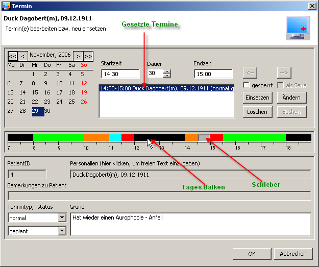
[fig:termineingabe]
La boîte de dialogue est assez complexe et contient des multiples plages :
- En haut à gauche se trouve un calendrier qui vous permet de choisir aussi une autre journée.
- En haut au milieu se trouvent les endroits où on introduit l’heure du début et l’heure de fin de la consultation de même que la durée de la consultation.
- En dessous vous trouvez la liste des rendez-vous où vous pouvez facilement voir quel
rendez-vous on avait déjà donné. (on peut fixer un ou plusieurs rendez-vous parallèlement).
- En haut à droit vous trouvez la checkbox verouillé, ce qui bloque toute modification ultérieure du rendez-vous.
- En dessous vous trouvez le bouton pour placer un rendez-vous. Vous pouvez après avoir placé un rendez-vous choisir une autre date ou autre heure pour introduire un rendez-vous supplémentaire. (Si vous voulez introduire qu’un seul rendez-vous, vous pouvez cliquer directement sur ‘OK’.
- Au milieu vous trouvez la barre de la journée, qui démontre l’organisation de la journée actuellement affichée. Les couleurs correspondent au types de consultations que vous avez défini pour les différents types de rendez-vous dans la configuration. Le curseur gris symbolise la période actuellement choisi. A l’aide de la souris vous pouvez placer ce curseur où vous voulez.
- En dessous de la barre de la journée vous trouvez l’affichage horaire dont la trame peut être adaptée à vos besoins en cliquant dessus. Pour choisir l’heure pour une consultation vous déplacez le curseur sur la barre de la journée.
- " En dessous on trouve les coordonnées du patient séléctionné de même que le type et l’état du rendez-vous en question . Si vous ne voulez pas introduire un nom de patient mais un texte libre vous pouvez l’introduire dans le champ identité.
En cliquant sur ok l rendez-vous est introduit et le dialogue se ferme. Si vous cliquez avec la touche droite sur un rendez-vous un menu contextuel s’ouvre dans lequel vous pouvez changer plusieurs détails concernant ce rendez-vous. 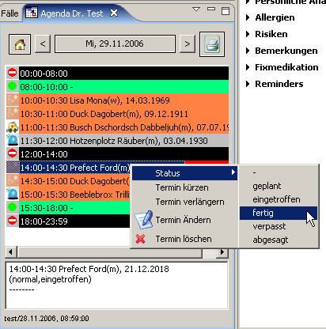 Le plus important dans ce menu contextuel semble être : Puisqu’un tel changement se reproduit sur tout les ordinateurs branchés sur le réseau, ceci permet de constater sur n’importe quel poste de travail si par exemple le patient est arrivé. Si vous voulez changer pour une seule journée les périodes réservées vous pouvez le faire en choisissant dans le ‘View-menu’ (triangle à droite en haut) les limitations de la journée. Le champ de dialogue suivant se montre : image Ici vous pouvez fixer les périodes réservées (bloquées) pour la journée actuelle comme décrit dans le chapitre configuration.
{kind=link}
Plusieurs agendas en même temps
Vous pouvez sans problème laisser afficher plusieurs fenêtres d’agenda simultanément par exemple pour des différentes ‘zones d’utilisateurs’ ou des différentes journées. 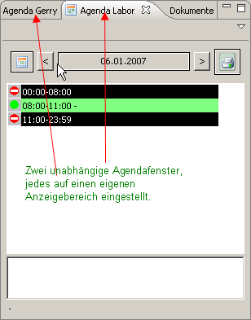
Fenêtre agrandie
Votre assistante médicale aimerait peut être avoir sur son écran une agenda qui donne plus d’informations en même temps. Utilisez pour ceci la ‘View’ : Agenda – grande: 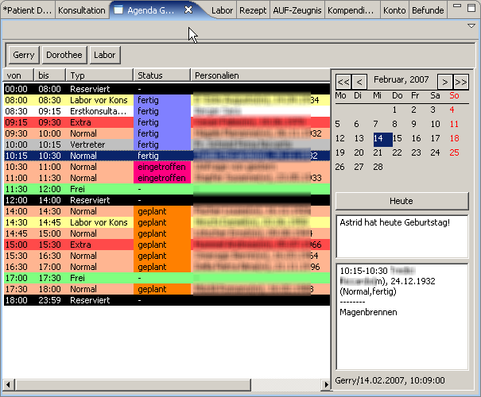 Comme vous voyez tout les informations importantes peuvent être affichées de façon synoptique. Les fonctions expliquées de l’agenda restent par contre les mêmes. Si vous voulez vous pouvez naturellement aussi utiliser les deux ‘views’ de l’agenda simultanément.
Imprimer des cartes de rendez-vous
Dans le ‘View-menu’ (triangle à droite en haut) de l’agenda vous pouvez sélectionner imprimer carte de rendez-vous pour le patient spécifique. Le style correspondant s’appelle carte de rendez-vous. Des informations plus détaillées pour la configuration vous trouvez ci-dessus. Lors de l’impression d’une carte de rendez-vous apparaît une fenêtre avec la carte de rendez-vous préparée. Vous pouvez imprimer cette carte depuis le logiciel de traitement de texte et vous pouvez fermer cette fenêtre après avoir cliqué sur OK ou Annuler.
Résultats dans Elexis
[befunde] Intégration des séries de résultats datés et classés selon le texte (par ex. poids, glycémie, Quick/TP, résultats radiologiques etc.) .
Configuration
[htbp]
0.35
 [fig:befundesettings]
0.65
Si ce Plugin est installé, vous trouvez dans le menu ‘Fichier-Options’ une rubrique résultats. Cette rubrique est probablement encore vide (Fig. [fig:befundesettings]).
Pour ajouter un nouveau paramètre de résultats cliquez sur ajouter. Vous serez ensuite demandé d’introduire le nom du paramètre. Nous avons choisi ‘radiographie’. Il apparaîtra un onglet avec le nom du paramètre. Vous devez encore créer des champs pour l’introduction des données.
[htbp]
0.35
[fig:befundesettings]
0.65
Si ce Plugin est installé, vous trouvez dans le menu ‘Fichier-Options’ une rubrique résultats. Cette rubrique est probablement encore vide (Fig. [fig:befundesettings]).
Pour ajouter un nouveau paramètre de résultats cliquez sur ajouter. Vous serez ensuite demandé d’introduire le nom du paramètre. Nous avons choisi ‘radiographie’. Il apparaîtra un onglet avec le nom du paramètre. Vous devez encore créer des champs pour l’introduction des données.
[htbp]
0.35
 [fig:befundesettings]
0.65
Cliquez après chaque ligne sur Apply réspectivement appliquer: Si un champ doit contenir plusieurs lignes cliquez sur le ‘checkbox’ correspondante. Fig. [fig:befunde4]vous montre une variante avec plus que deux lignes:
[htbp]
0.35
[fig:befundesettings]
0.65
Cliquez après chaque ligne sur Apply réspectivement appliquer: Si un champ doit contenir plusieurs lignes cliquez sur le ‘checkbox’ correspondante. Fig. [fig:befunde4]vous montre une variante avec plus que deux lignes:
[htbp]
0.35
 [fig:befunde4] [fig:befunde4]
0.65
Certaines valeurs peuvent aussi être calculées au lieu d’être introduites directement. Vous pouvez introduire pour cela simplement une expression en forme de : _Résultat = Formule _, où par Fx vous pouvez vous référer à d’autres lignes de la même page. L’exemple à gauche montre comment calculer le BMI (indice de masse corporelle) avec les données introduites pour le poids et la taille. Le résultat est normalement affiché avec une exactitude à 9 chiffres, raison pour laquelle on l’arrondit à une décimale.
[fig:befunde4] [fig:befunde4]
0.65
Certaines valeurs peuvent aussi être calculées au lieu d’être introduites directement. Vous pouvez introduire pour cela simplement une expression en forme de : _Résultat = Formule _, où par Fx vous pouvez vous référer à d’autres lignes de la même page. L’exemple à gauche montre comment calculer le BMI (indice de masse corporelle) avec les données introduites pour le poids et la taille. Le résultat est normalement affiché avec une exactitude à 9 chiffres, raison pour laquelle on l’arrondit à une décimale.
Application
Ouvrez le View des résultats .
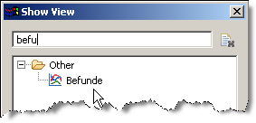
image
Vous y voyez les paramètres configurés pour les résultats:
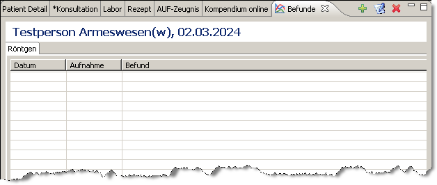
image
Pour y introduire des nouveaux résultats veuillez cliquer sur le plus vert à droite en haut.
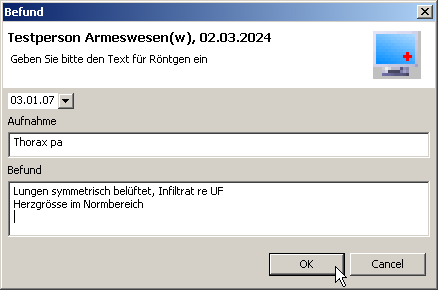
image
Vous pouvez voir maintenant les champs que vous avez introduits lors de la configuration pour y introduire vos résultats. Par un clique sur OK les données introduites seront intégrées. Avec un double-clique sur la ligne vous pouvez ouvrir les champs pour appliquer des corrections.
Si une valeur doit être calculée vous devez cliquer sur le titre en bleu pour que le calcul se fasse :
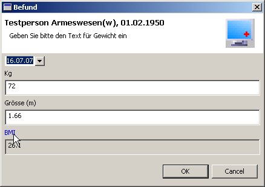
image
Variables dans un texte
Les résultats peuvent aussi être introduits en forme de variables dans un document de texte. Pour cela vous pouvez appliquer la syntaxe comme c’est décrit sous ([datenfelderextern], page ). Le nom clé du plugin des résultats est : Befunde-Data. Pour introduire dans un document par exemple un tableau avec l’historique de l’évolution du poids du patient actuel, vous introduisez les variables suivantes dans le texte :
[Befunde-Data:Patient:all:Gewicht] (pour introduire un tableau avec tout les mesures du poids)
[Befunde-Data:Patient:last:Gewicht] (pour introduire seulement la dernière valeur du poids)
Elexis et les Tarifs pour les médecins en Suisse
[arzttarife] Puisque Elexis est un logiciel du cabinet universelle, le Tarmed n’est qu’une des possibilités d’un système de facturation. Par conséquent ni la saisie des prestations ni la facturation elle-même fait partie du noyau du système mais se trouve dans des Plugins. Puisque Elexis est un logiciel Suisse il va de soi que ce Plugin fait partie de la distribution standard.
Réglages

[fig:tarmed1]
Dès que le Plugin Tarmed est installé (ce qui est selon de standard toujours le cas) vous pouvez choisir sous les systèmes de facturation (cf. fig. [fig:tarmed1]) des prestations et imprimantes Tarmed. Lors de l’établissement d’un nouveau cas les systèmes de facturation LAMAL, LAA, LAI, LCA et LAM sont installés de façon standardisée. D’autres systèmes (par ex. Covercard) peuvent être ajoutés manuellement respectivement sont ajoutés par des plugins. Des plus amples informations concernant les systèmes de facturation vous trouvez dans l’annexe sous [settings:abrechnungssystem] à la page . Important: N’oubliez pas d’introduire la valeur du point de taxe spécifique pour votre canton avant d’introduire les premières prestations. Lors d’un changement de la valeur du point cantonal il ne faut pas oublier de l’adapter dans Elexis avant d’introduire des prestations qui sont concernées par le nouveau point cantonal. Des changements ultérieurs après avoir imprimé les factures sont très fastidieux. Il ne faut pas non plus oublier d’introduire sous ‘Tarif du laboratoire’ le point de taxe actuel.
Un point de taxe est toujours valable à partir d’une date spécifique. Il est toujours valable jusqu’à ce qu’un nouveau point de taxe est introduit. Une valeur une fois introduite ne peut plus être modifiée ou effacée (car sinon des prestations qui ont été comptabilisées avec ce point de taxe seront nulles). Par contre ont peut à tout moment introduire un nouveau point de taxe, valable à partir d’une date spécifique, en cliquant sur le bouton prévu à cette fin. Si vous ouvrez la section Tarmed (sous ‘fichiers – options’) apparaît la page du réglage des factures (Fig. [fig:tarmed2]). Il y faudra régler individuellement pour chaque mandant tout les détails concernant les factures.

[fig:tarmed2]
Choisissez dans le ‘Combobox’ en haut un mandant. Cliquez ensuite sur le mot prestataire. Il apparaît une liste avec tout ce que Tarmed veut savoir de vous :

image
- Titre – eh bien , ceci est encore facile
- Titre professionnel – idem
- Canton : Le canton dans lequel vous effectuez des prestations sous le nom du mandant. Si vous exercez dans plusieurs cantons vous devez créer pour chaque canton un mandant spécifique.
- Code EAN : Tarmed dit que vous n’êtes qu’un article. Il faut introduire ici votre numéro d’article européen. Ceci doit impérativement être un numéro à 13 chiffres. .
- NIF : L’AI dit que vous êtes un porteur de NIF (quoi que ce soit). Il faut introduire ici votre numéro NIF.
- Numéro du concordat : SantéSuisse dit : Vous êtes porteur d’un numéro du concordat. Vous devez introduire ici votre numéro du concordat respectivement votre numéro RCC et ceci sans trait d’union. Ceci doit être toujours une lettre suivi de 6 chiffres.
- Commentaire : Elexis a choisi dans ce contexte consciemment un design qui est aménageable. Si quelques bureaucrates devaient inventer encore un autre système de numérotation avec lequel nous devrions nous classifier une fois de plus – pas de problème. Elexis peut vous introduire dans n’importe quel nouveau système de codification. Mais continuons :
- TarmedESR5OrEsr9- Le système ESR (un numéro de participant de 5 ou 9 chiffres). Elle se trouve dans votre convention ESR. Normalement c’est esr9.
- TarmedESRPlus-esr16or27 est juste lorsque vous voulez/pouvez introduire le montant dans la ligne ESR (ceci est normalement le cas), esr16or27plus vous devez déclarer, lorsque vous voulez que le client doit introduire le montant manuellement.
- Tarmed-Spécialité : Votre titre de spécialiste avec lequel vous facturez sous ce mandant.
Cliquez ensuite selon vos préférences sur référence bancaire ou compte postal

image
Sous ‘référence bancaire’ vous choisissez votre banque (dont les coordonnés ont déjà été saisi sous ‘contacts’) par un clic sur établissement bancaire Ensuite il faut ajouter encore deux détails au contrat-ESR : TarmedESRParticipantNumber – le numéro de participant ESR de otre Banque (renseignez-vous chez votre banque ) et TarmedESRIdentity- votre numéro de client-BESR qui doit vous être donné aussi par votre banque. Attention: Vous ne pouvez pas imprimer des factures Tarmed ou envoyer des factures au Centre de confiance sans avoir introduit d’abord toutes ces données correctement. Ce n’est pas une chicane de Elexis mais les conditions de Tarmed.
Réglages de l’imprimante
Elexis utilise l’imprimante par défaut pour l’impression des factures. Pour la changer il faut choisir sous _imprimantes et télécopieurs _ l’imprimante qui doit être définie (par la touche droite de la souris) comme imprimante par défaut. Par la suite l’impression devrait se faire sur la nouvelle imprimante. On peut aussi configurer quel bac de l’imprimante doit être utilisé.
Les Factures
Comme déjà mentionné une facture Tarmed peut avoir des formes différentes :
- une forme de fichier XML, utile pour la transmission au Centre de confiance
- un fichier utile pour la transmission à la caisse des médecins
- un formulaire de facturation Tarmed sur papier idéal pour les systèmes tiers payant.
- une page avec BVR et justificatif de remboursement pour les systèmes tiers garant.
Laquelle de toutes ces méthodes est celle qui convient dépend de votre canton, des réglages contractuelles et du cas spécifique pour lequel la facture est établi. Des cas LAA sont normalement traités en forme tiers payant tandis que des cas LAMAL sont traités dans la majorité des cantons (mais pas dans tous) en tiers garant ce qui est compliqué par le fait que certaines caisses ont crée des contrats tiers payant avec certains médecins. La conclusion est : Elexis ne peut pas vous aider dans ça mais vous fournit la forme de facture correcte si vous avez introduit les donnés correctes sous Cas – Détail.
‘Views’ de ce Plugin
Ce Plugin collabore avec la ‘View des factures’ existante dans le noyau du système. Il apporte qu’une propre View pour l’enregistrement des payements :
ESR
[hb] 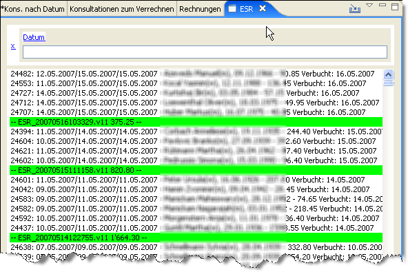
[fig:esr]
Sous Fig.[fig:esr] vous voyez la ‘View’ pour la lecture des fichiers ESR. Si vous avez signé un contrat spécifique avec votre banque, elle va vous mettre à disposition les fichiers ESR soit par une disquette soit pour le téléchargement directe ‘online’. Les fichiers ESR contiennent les payements de vos factures. Elexis est capable d’introduire les fichiers ESR directement pour acquitter automatiquement les montants des factures en question.
Traitement de texte
Introduction
Pour établir des lettres , ordonnances, certificats etc. Elexis utilise de façon standardisée un logiciel valable : OpenOffice Ceci ne doit pas forcément être la seule solution car le traitement de texte est appliqué par Elexis en forme de Plugin. On pourrait donc aussi laisser créer un Plugin pour MicrosoftOffice ou n’importe quel autre logiciel de traitement de texte. Nous nous limitons ici par contre à l’OpenOffice qui est le logiciel de référence pour Elexis. L’origine de OpenOffice se trouve dans StarOffice qui avait été développé dans les années 80 et qui représente aujourd’hui une Office-Suite en analogie à Microsoft Office avec la différence qu’il s’agit d’un produit open source disponible pour plusieurs systèmes d’exploitation. Dans l’installateur de la version Windows de Elexis une version adaptée de OpenOffice.org est intégrée. Sous Linux on peut se servir de la version OpenOffice qui est normalement intégrée dans Linux. Pour Macintosh l’intégration ne fonctionne malheureusement pas encore. Faites attention de n’installer q’une seule version de OpenOffice sur votre système car sinon ceci pourrait provoquer des conflits entre les versions. Après l’installation de OpenOffice et de Elexis il faut que les deux programmes ‘fassent connaissance’. Pour ceci il faut configurer le Plugin de texte dans Elexis de sorte qu’il ait accès sur OpenOffice.(Le Plugin NOA-Text18doit être installé, chose qui est normalement d’emblée le cas. Séléctionnez dans le menu Fichier – Options Vous trouvez dans la liste à gauche : Traitement de texte Il y apparaît un boite de dialogue comme en [fig:text1]. Choisissez là [htp] 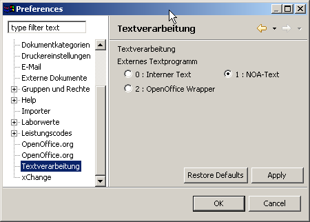 [fig:text1] NOA-Text. Après vous choisissez dans la liste à gauche OpenOffice.org (cf Fig. [fig:text2] En cliquant sur définir vous définissez le chemin d’accès à votre installation OpenOffice. [htp] 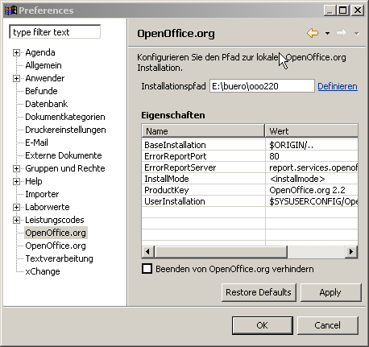 [fig:text2] Vous cliquez ensuite dans la boite de dialogue qui s’ouvre sur OpenOffice.org et cliquez sur ‘terminer’. Dans la boite de dialogue encore ouverte vous cliquez sur ‘ok’. OpenOffice devrait être à disposition dès le prochain démarrage de Elexis. Lors de la première utilisation vous devez encore accepter les conditions de licence de OpenOffice.org.)
Modèles
[textvorlagen] Des documents qui ont été crées dans Elexis sont toujours basés sur des modèles spécifiques. Un modèle contient d’un côté l’apparence d’un document de l’autre côté aussi certaines variables qui permettent d’introduire des donnés spécifiques lors de la création du document. Un modèle est simplement un document avec une apparence spécifique crée à l’aide de OpenOffice. Les Variables sont introduites en forme de simple texte entre parenthèses [Type de fichier.champ] comme par exemple [patient.prénom]. Une liste de tout les variables possibles se trouve à la page Il y a deux types de modèles :
Modèles pour le système
Il s’agit des modèles qui sont nécessaires pour certaines fonctions du logiciel. Ainsi un ordonnance ne peut être imprimée que sur la base d’un modèle du système qui s’appelle ordonnance. Des modèles pour le système doivent avoir un nom spécifique (comme par ex. ordonnance). Ils ont en général à un certain endroit une variable spécifique qui indique où le contenu doit être introduit.
Les modèles de l’utilisateur individuels
sont des modèles qui peuvent être crées et dénommés ad libitum et qui peuvent contenir au choix des champs variables. Des modèles de l’utilisateur peuvent être crées par ex. pour des rapports de consilium, de transmission etc.
Modèles pour tout le système
[systemvorlagen] Les modèles suivants sont utilisés dans le système de base (des Plugins peuvent en plus définir leurs propres modèles pour le système) :
Ordonnance
Une ordonnance est normalement imprimée sur papier A5 ou A6. La mise en forme se fait individuellement respectivement selon les exigences légales. La variable [Rezeptzeilen] doit être introduit là où on veut que les médicaments apparaissent.
Certificat
Le certificat de l’incapacité de travail peut aussi être mis en forme individuellement. Les variables des dates peuvent être introduites en forme de [AUF.von],
[AUF.bis] und [AUF.Prozent].Feuille de labo
Ceci sert à l’édition des résultats de laboratoire qui se trouvent dans le système. La mise en forme de la feuille est libre mais à un endroit la variable [Laborwerte] doit être introduite.
Plan de traitement
Le plan de traitement pour le patient peut être mis en forme individuellement mais doit contenir la variable [Medikamentenliste].
Commande
La commande pour une transmission par lettre, fax ou courrier électronique peut être mise en forme individuellement mais dont contenir la variable [Bestellung] quelque part.
ListeAgenda
Permet d’imprimer l’agenda d’une journée sur une page. Mise en forme libre mais quelque part doit apparaître la variable [Termine].
Liste factures
Liste de toutes les factures faites pendant un certain laps de temps(cf ). Peut être mise en forme individuellement mais doit contenir la variable [Liste].
Cartes rendez-vous
Permet de faire une liste de tout les rendez-vous d’un patient. Mise en forme libre mais doit contenir la variable [Termine].
Facture Tarmed_BVR
(Tous les modèles de factures Tarmed_xx ont été mis à disposition par le Plugin Tarmed des médecins Suisse) La facture avec BVR qui est la partie qui reste chez le patient doit être imprimée sur une feuille A4. La mise en page des 2/3 supérieurs est libre mais à un endroit la variable prestation
[Leistungen] doit apparaître. Le tiers en bas doit rester libre pour l’impression du BVR.Tarmedrechnung_M1
Premier rappel avec BVR. Mise en forme comme Tarmedrechnung_EZ.
Tarmedrechnung_M2
deuxième rappel.
Tarmedrechnung_M3
troisième rappel.
Tarmedrechnung_S1
Première page du formulaire Tarmed. La mise en forme est fixe, seulement des données personnelles peuvent être adaptées (mais le Layout ne peut pas être déplacé !).
Tarmedrechnung_S2
Page suivante du formulaire Tarmed. La mise en forme est fixe.
Modèles de l’utilisateur individuels
Les modèles de l’utilisateur individuels peuvent être crées et nommés librement.
Variables pour type de données
[Platzhalter] Ces variables peuvent être utilisées dans des documents de modèles de texte et doivent être introduites entre parenthèses comme par ex. [patient.nom]. Ces modèles peuvent aussi être utilisés comme source des données dans la ‘view’ ‘visualisation des données’. La liste suivante n’a pas de prétention à l’exhaustivité. Notamment par des plugins des nouveaux champs peuvent être introduits.
- Anwender.Name
- = Utilisateur.Nom : Name des aktuell eingeloggten Anwenders
- Anwender.Vorname
- = Utilisateur.Prénom : Le prénom de l’utilisateur actuellement connecté
- Anwender.Titel
- = Utilisateur.Titre : Titre de l’utilisateur actuellement connecté
- Anwender.Kuerzel
- = Utilisateur.Sigle : Initiales de l’utilisateur actuellement connecté
- Anwender.Label
- = Utilisateur.Label : Nom Login de l’utilisateur actuellement connecté
- Mandant.Name,Vorname,Titel,Kuerzel,Label
- = Mandant.Nom.Prénom.Titre.Sigle.Label : les mêmes champs comme sous utilisateur en se référant au mandant actuellement actif.
- Mandant.EAN
- = le code EAN du mandant actuellement actif. Seulement présent si le Plugin Tarmed pour les médecins Suisses est actif.
- Mandant.KSK
- = Mandant.RCC : le numéro du Concordat du mandant actuellement actif. Seulement présent si le Plugin Tarmed pour les médecins Suisses est actif.
- Patient.Name,Vorname,Titel
- = Patient.Nom.Prénom.Titre : Nom etc du patient actuellement sélectionné.
- Patient.Geburtsdatum
- = Patient.date de naissance : Date de naissance du patient actuellement sélectionné.
- Patient.PatientNr
- = Patient.No du Patient : Numéro interne du patient actuellement sélectionné.
- Patient.Diagnosen
- = Patient.Diagnostic : Diagnostics comme mentionnés sur la couverture
- Patient.Allergien
- = Patient.Allergies : Allergies comme mentionnées sur la couverture.
- Patient.Strasse, Patient.Plz, Patient.Ort
- = Patient.Rue, Patient.Codepostal , Patient.Lieu : Adresse du patient actuellement sélectionné.
- Patient.PersAnamnese
- = Patient.Anamnese personnelle : Anamnèse personnelle comme mentionnée sur la couverture
- Patient.Telefon1, Patient.Telefon2, Patient.Natel
- = Patient.Téléphone1, Patient.Téléphone2, Patient.Natel : Numéros de téléphones
- Patient.Medikation
- = Patient.Médication : Médication fixe actuelle du patient actuellement sélectionné.
- AUF.von
- = incap depuis : Début de l’incapacité de travail actuellement sélectionnée
- AUF.bis
- = incap jusqu’au : Fin de l’incapacité de travail actuellement sélectionné
- AUF.Prozent
- = incap pourcentage : Pourcentage de l’incapacité de travail actuellement sélectionné
- AUF.Grund
- = incap raison : Raison pour l’incapacité de travail actuellement sélectionnée.(accident, maladie)
- AUF.Zusatz
- = incap complement : Texte complémentaire concernant l’incapacité de travail.
- Fall.ArbeitgeberName
- = Cas.NomEmployeur : Nom de l’employeur si introduit= Cas.NomEmployeur : Nom de l’employeur si introduit
- Fall.Kostenträger
- = Cas.Répondant des coûts : Répondant des coûts
- Fall.Versicherungsnummer
- = Cas.Numéroassuré : Le numéro d’assuré
- Rechnung.RnNummer
- = Facture.Nodefacture : No de la facture actuelle
- Rechnung.RnDatum
- = Facture.Datefacture : Date de la facture
- Rechnung.RnDatumVon
- = Facture.Datefacturede : Date de la première consultation incluse dans cette facture.
- Rechnung.RnDatumBis
- = Facture.Datefacturejusque : Date de la dernière consultation incluse dans cette facture.
- Konsultation.Datum
- = Consultation.Date : Date de la consultation actuellement sélectionnée
- Konsultation.Eintrag
- = Consultation.Saisie : Texte saisie de la consultation actuellement sélectionnée
- Konsultation.Diagnose
- = Consultation.Diagnostic : Diagnostic de la consultation actuellement sélectionnée.
Libellé selon sexe
Aussi ceci sont des sortes de variables qui consistent en une formule alternative :
[Datenobjekt:mw:Formulierung Mann/Formulierung Frau ] = [Data object:mf:Formule Homme/Formule Femme]
ou
[Datenobjekt:wm:Formulierung Frau/Formulierung Mann] = [Data object:fm:Formule Femme/Formule Homme]
ou
[Datenobjekt:mwn:Formulierung Mann/Formulierung Frau/Formulierung neutral] = [Data object:mfn:Formule Homme Mann/Formule Femme/Formule neutre]
Si l’objet décrit un personne masculine, la formule Homme sera utilisé. S’il décrit une personne féminine, c’est la formule Femme et s’il ne s’agit pas d’une personne ou si le sexe n’est pas connu, c’est la formule neutre qui s’utilise. Exemples
- /geehrte Frau [Adressat.Name]/geehrte Damen und Herren]
= [Destinataire:mfn:Monsieur [destinataire.nom]/Madame [destinataire.nom]/Mesdames et Messieurs ]
- Bitte um Aufgebot [Patient:wm:der obengenannten Patientin/des obengenannten Patienten]
= Demande pour convocation [Patient:fm:de la patiente/du patient susmentionné]
Données de provenance des Plugins externes
[datenfelderextern] Des données d’un Plugin externe peuvent être impliquées dans des variables si c’est prévu par le producteur du Plugin. Il faut cependant observer une Syntaxe un peu différente de celle utilisée pour les variables ‘normales’. L’origine de cette différence se trouve dans le faite que la variable se réfère toujours à un objet actuellement sélectionné d’un certain type, chose qui n’est pas possible lorsqu’il s’agit des données d’un Plugin externe, car Elexis ne connaît pas ces données. Lorsque les données proviennent de l’extérieur on trouve par contre :
- Le nom du Plugin qui les met à disposition
- Le nom de l’objet des donnés
- Une sélection des valeurs avec ce nom (Il pourrait y avoir par exemple de séries avec des multiples données. Les options concrètes de ce paramètre dépendent du Plugin.
- Une description des données qui devraient être mise à disposition
- Probablement des paramètres qui seront nécessaires pour la sélection de ces données. Aussi ce paramètre dépend du Plugin en question.
Par conséquent une variable pour des données d’un Plugin est constituée par quatre à cinq parties qui sont séparées par le :
[pluginName:objektName:auswahl:daten]= [nom du plugin:nom de l'objet:séléction:données] ou
[pluginName:objektName:auswahl:daten:parameter] = [nom du plugin:nom de l'objet:séléction:données:paramètres]
Veuillez trouver les exemples dans la partie où il y a une description du Plugin ‘résultats’ ([befunde], page ).
Fonctionnement multi-client
Introduction
Elexis a d’emblée une conception qui permet l’utilisation par plusieurs utilisateurs et mandants. Il n’y a pas de limitations concernant le nombre d’utilisateurs et mandants. Il n’y a pas non plus des changements à faire lorsqu’on change d’un utilisateur unique à un fonctionnement multi-client. Dans ce chapitre il y aura juste la présentation de quelques conceptions qui pourraient être utiles dans un fonctionnement multi-utilisateur et multi-mandant.
Rôles (anciennement groupes) et droits
[sec:gruppen] Dès qu’il y a plusieurs utilisateurs qui ont accès à l’ensemble des donnés commun on doit se poser la question quelles sont les données que l’utilisateur spécifique doit pourvoir lire, écrire ou effacer. En général le principe suivant doit être suivi : Tout utilisateur doit pouvoir utiliser les parties du logiciel dont il a besoin pour accomplir ses tâches mais pas plus. Ceci réduit la possibilité des fautes d’application et facilite en cas de problèmes la recherche de l’origine des problèmes. Elexis permet que chaque utilisateur peut avoir une ou plusieurs ‘rôles’ rôles19. Un ‘rôle’ est un marqueur arbitraire qui n’a pas d’autre fonction que de regrouper des utilisateurs avec les mêmes droits. Dans un cabinet médicale de taille moyenne il peut y avoir les rôles de ’l’assistante médicale’, ‘laboratoire’, ‘médecin’ et ‘comptabilité’. Dans un petit cabinet il n’y aura peut être que le ‘rôle’ de ’l’assistante médicale’ et du ‘médecin’. Comme accessoire standard Elexis offre la possibilité des rôles de ’l’utilisateur’ et de ’l’admin’. Dès que les utilisateurs et les rôles sont définis, les différents droits peuvent être attribués. Ceci n’est sous des conditions standardisés pas forcément nécessaire car les droits existants pour l’utilisation sont déjà correctement définis. L’attribution des droits d’accès se fait par le menu Fichier – Options – rôles,droits et accès – sécurité (p. [fig:zugriff]). [htp] 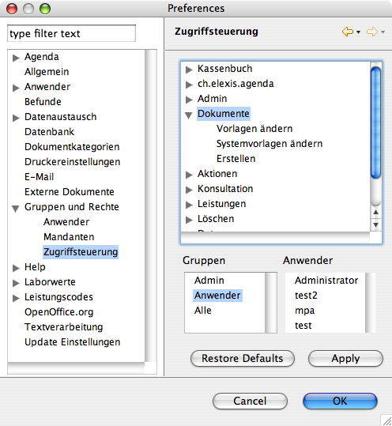 [fig:zugriff] Comme vous pouvez constater les droits sont mentionnés et classés de manière hiérarchique. – Le droit changer modèle est évidemment subordonné au droit documents. Dans la partie inférieure de la fenêtre vous trouvez tous les groupes et utilisateurs du système. Les règles du ‘jeu’ :
- Avoir un droit implique aussi tout les droits qui lui sont subordonnées.
- Avoir un droit n’implique pas automatiquement les droits maître.
- Chacun a les droits des rôles auxquels ils est inscrit et en sus ceux qui lui ont été attribués individuellement.
- Celui auquel on a attribué le rôle Admina tout les droits même s’ils ne lui sont pas attribués de façon explicite.
- Celui à qui on a attribué les droits d’accès peut lui-même administrer les droits d’accès même s’il n’est pas administrateur.
On peut donc attribuer des droits d’accès à des rôles (groupes) ou individuellement aux utilisateurs. On attribue les droits de façon suivante : Cliquez avec la touche gauche dans la partie supérieure de la fenêtre sur le droit à attribuer et ensuite vous choisissez dans le champ inférieur un rôle ou un utilisateur en cliquant avec la touche gauche ou avec [STRG]+ touche gauche s’il s’agit de plusieurs. Important:N’oubliez pas la règle fondamentale : Personne, même pas le Chef, ne doit travailler sous le login ‘admin’ ou avoir que le rôle ‘admin’. Le risque est trop grand de juste faire une ‘petite’ faute qui efface des données importantes. Si vous êtes le patron installez pour vous même deux différents ‘accounts’.:
- Un utilisateur simple (par ex. Dr Test) qui a le rôle d’un utilisateur ou d’un médecin et qui aura juste les droit d’accès dont il a besoin pour le travail journalier, mais surtout pas celui de ’l’admin’.
- Un administrateur (par ex. admin du cabinet) qui a le rôle d’admin et dont le mot de passe est strictement réservé à vous, même si vous avez toute confiance en votre personnel. Ne faites un login sur cet account que si vous devez faire exceptionnellement des choses qui ne sont pas faisable depuis un autre account.
Définition du profil des utilisateurs
Dans un petit cabinet on apprécie souvent la capacité de Elexis d’aménager le poste de travail de façon très individuelle. L’assistante médicale peut arranger son écran avec d’autres layouts ou d’autres couleurs que le médecin. Dans un cabinet plus grand où les usagers doivent parfois changer leurs postes de travail, une certaine ‘unité de doctrine’ pour tous ou au moins pour toutes les personnes avec le même rôle est souhaitée. Elexis permet pour cela une configuration des couleurs et layouts.
Réglages individuelles du programme
Sous fichier – options – utilisateur vous pouvez définir la couleur et le design, des raccourcis de clavier, et le type de la barre de lancement rapide. Vous pouvez sauvegarder ces réglages sous un nom quelconque, introduisez pour cela un nom et cliquez sur sauvegarder réglage sous. Depuis un autre poste de travail et sous un autre login vous pouvez faire les mêmes changements plus facilement en chargeant les mêmes réglages. Introduisez pour cela le nom et cliquez sur charger le réglage de….
Mise en page individuelle des perspectives
La disposition des fenêtres, donc la perspective, avec laquelle vous travaillez normalement, peut être adaptée individuellement. Ce réglage est lié au poste de travail (puisqu’il est aussi dépendant de l’écran installé). Vous pouvez aussi sauvegarder certaines aménagements de perspectives sous un nom spécifique pour pouvoir les réinstaller sur un autre poste. Introduisez pour la sauvegarde le nom spécifique et cliquez sur sauvegarder l’aménagement du poste sous…. Pour copier ce réglage sur un autre poste de travail ouvrez : fichier – options – utilisateur et introduisez le nom en question pour cliquer ensuite sur charger le réglage du poste de travail de.
Configuration du système requise
Prérequis minimale au hardware
[systemvoraussetzungen]
- Un PC à peu près actuel (cadence min. de 1GHz, 512 MB RAM min , 1GB recommandé) disque dur de 1GB min.
- Carte graphique 1024 × 768 pixel min (1280 × 1024 recommandé) et un écran convenable (par ex. 17 pouces TFT ou plus).
- Recommandé : Imprimante avec alimentation bac 1 pour du papier A5 (Ordonnances, Certificats) et bac 2 et eventuellement bac 3 pour du papier A4 (Lettres, Factures)
- Recommandé : Imprimante d’étiquettes.
- Recommandé : Drive externe pour sauvegarde .
- Recommandé : Accès Internet protégé par une Hardware-Firewall (une protection par simple Personal Firewall est explicitement déconseillée) (voir p. ).
Systèmes d’exploitation supportés
Elexis fonctionne en principe dans tout les systèmes d’exploitation pour lesquels une Environment Version 1.5 ou plus avancée du Java Runtime existe . En particulier ce sont les systèmes suivants :
- Windows 2000, XP, Vista
- Macintosh OS à partir de 10.4 (Tiger) 20
- Linux (SuSE à partir de 9.3 ou Xubuntu/Kubuntu à partir de 6.06)21
Dans ces systèmes d’exploitation Elexis peut être installé directement avec une des versions complètes mises à disposition. L’installation sur d’autres systèmes nécessitera plus ou moins de travail ‘manuel’. Veuillez prendre en considération que nos offres forfaitaires et contrats de maintenances ne couvrent que les systèmes qui remplissent les conditions mentionnés ci-dessus en ce qui concerne la Hardware et le système d’exploitation.
Transformer la version d’évaluation en version complète
[vollversion] Si vous avez apprécié la version d’évaluation de Elexis vous de devez en fait rien faire d’autre pour recevoir une version complète : La version d’évaluation est une version complète. La seule différence se trouve dans la base de données. Pour transformer une version d’évaluation en version complète il faut procéder de façon suivante :
- Installer le moteur de base de données de la version complète. ([dbengine])
- Effacer la base de données de la version d’évaluation (si elle était installée avant).
- Lier Elexis avec ce moteur de base de données. ([connect])
- Lier éventuellement avec une version OpenOffice préexistante [config:ooo]
- Introduire la version actuelle des données de base.
- Etablir la configuration de base pour votre cabinet médical.
Ces pas d’installation ne sont cependant pas si banaux. La mise à jour de l’ensemble des donnés et surtout l’établissement d’un configuration de base convenable pour votre cabinet médical peuvent être assez laborieux. A ce sujet Elexis ne peut pas se distinguer d’autres logiciels de gestion d’un cabinet médical car la complexité de la tâche reste la même pour tous. Si vous pensez accomplir ce travail vous-même, il faudra réserver suffisamment de temps (une journée au minimum) et suivre ce chapitre étape par étape. Si vous n’êtes pas sûr de pouvoir le faire nous vous conseillons d’ acheter l’installation et la configuration de base y inclus une heure d’instruction pour votre personnel du cabinet. Ce manuel est par la force des choses un peu penché sur la Suisse. Pour d’autre pays probablement pas toutes les informations sont correctes respectivement utiles. Pour compléter nous attirons votre attention sur le fait que cette documentation peut contenir des fautes et pourrait être incomplète. Nous ne pouvons pas assumer la responsabilité si vous subissez des dégâts matériels ou immatériels suite à une configuration défectueuse ou une documentation incorrecte. Nous vous conseillons de minutieusement tester le tout et si possible aussi de faire des contrôles manuels (par exemple des factures) avant de travailler véritablement avec votre configuration.
Ce dont vous avez besoin
Avant de commencer la configuration vous devez collectionner les programmes et données suivants :
- Kit d’installation pour votre serveur de base de données
- Noms, Noms d’utilisateur et mots de passe pour tous qui devaient pouvoir utiliser Elexis
- Noms, Numéros du Concordat , Numéros EAN, Coordonnées bancaires ou pour le compte de chèque postal, numéros de participant BVR de tous les mandants.
- Relevé actualisé des valeurs du point de votre canton
- Une conception de vos en-têtes pour lettres, ordonnances, certificats.
- Une liste des examens de laboratoire effectués dans votre laboratoire du cabinet.
- Liste des médicaments, CIM-10, Tarmed , Liste des analyses, MiGel dans la mesure où vous en avez besoin.
- Les numéros EAN des assurances maladies et accidents
Installation du moteur de base de données
[dbengine] L’installation de Elexis consiste en deux parties : Un Serveur sur lequel sont installés les données et un ou plusieurs Clients, qui ont accès aux données et qui permettent de les visualiser et de les modifier. Le serveur et les clients peuvent se trouver sur le même ou sur des différents ordinateurs. Un'Serveur' au sens large est un ordinateur à part sur lequel fonctionnent un ou plusieurs logiciels serveur. Elexis peut utiliser (en principe une quelconque) base de données qui se laisse utiliser selon le standard de l’industrie JBBC comme logiciel de serveur. L’installation automatique est configurée d’avance pour les systèmes de base de données suivants :
- MySQL (www.mysql.com): Il s’agit de la base de données le plus répandue dans l’Internet. La majorité des applications basées sur une base de données qu’on trouve dans le Web, utilisent en arrière-plan un serveur MySQL. Un serveur MySQL coute environs Fr 750.-pour une utilisation à des fins commerciales. A des fins privés il est gratuit.
- PostgreSQL (www.postgresql.org): Il s’agit d’un serveur de base de données OpenSource. Il maîtrise un jeu d’instructions plus large que MySQL mais est considéré comme un peu plus lent que celui-ci. Cependant cela ne devrait pas jouer un rôle pour Elexis car les test de rapidité se font normalement sous les conditions de plusieurs milliers d’accès par seconde, un situation qui pourrait se produire que dans des très rares cas dans un cabinet médical. PostgreSQL est gratuit pour toutes les formes d’utilisation.
- HSQLDB: Il s’agit d’une base de données OpenSource qui est écrite en Java. Elle peut être utilisée soit en tant que serveur indépendant soit intégrée dans le logiciel. HSQL est un peu plus lent que les deux systèmes mentionnés précédemment mais pour des environnements petits comme ceux d’un cabinet médical éventuellement suffisant. Cependant il faut faire spécifiquement attention en ce qui concerne la sauvegarde des données car une panne d’ordinateur (ou même le fait d’éteindre l’ordinateur de façon improviste) peut rendre la base de données inutilisable. HSQL est gratuit.
Attention: Nous déconseillons explicitement l’utilisation du serveur de base de donnée HSQL utilisé pour la version d’évaluation de Elexis pour le travail au cabinet médical (risque de perte des données !) Nous vous conseillons plutôt d’installer MySQL ou PostgreSQL.
- Comme serveur nous vous conseillons de choisir de préférence un ordinateur sur lequel personne ne travaille directement. Qu’il y ait encore d’autres logiciels de serveur installés comme par ex. pour les mails, fax, imprimantes etc, ne joue aucun rôle. Attention! Si vous n’installez pas le serveur de base de donnée sur un ordinateur réservé à cette fonction mais sur un poste de travail il doit avoir au moins 1 GB de RAM et 2 GB seraient préférable.
- Installez là le serveur de base de donné de votre choix. (Nous préconisons mysql ou PostgreSQL)
- Créez dans la base de donnée un ‘user-account’ nommé : elexisuser
- Créez une base de donnée (vide) avec le nom elexis sur laquelle ‘elexisuser’ a un accès illimité.
- Décidez-vous absolument pour une stratégie de sauvegarde des données efficace et fiable. Plus d’information la concernant ci-après.
- La configuration ultérieure se fait depuis les ‘clients’. Pour le travail de tout les jours le serveur ne nécessite pas forcément un écran et un clavier et peut se trouver à un endroit frais du cabinet ou même à la cave.
Important! N’oubliez jamais la sauvegarde des données! Elexis enregistre toutes les données dans cette base des données. Une destruction de cette base de donnée n’est pas du tout impossible. Une interruption du courrant peut choper le disque dur au tendon d’Achille un dommage mécanique peut détruire des secteurs importants du disque dur et les rendre illisibles, une faute d’un logiciel peut effacer les données et un virus peut se défouler sur vos données. Il y a des multiples stratégies de sauvegarde des données. Nous vous présenterons quelques unes en ce qui suit :
- La Réplication
- Certaines banques de données (comme par exemple MySQL à partir de la version 4.0) peuvent copier leurs données de façon constante vers un serveur qui se trouve sur un autre ordinateur. Puisque seulement les données qui changent sont transmis (en arrière-plan) ceci demande moins de capacité que ce qu’on pourrait croire. Cette méthode s’appelle la Réplication . En fin de compte on a deux bases de données identiques. Si le serveur se casse on peut dans un délai de quelques minutes choisir le deuxième ordinateur comme serveur et continuer le travail pratiquement sans interruption.
- La Machine virtuelle
- Un concept apparenté : On laisse tourner le serveur de la base de donnée sur un machine virtuelle spécifiquement réservée pour cela (par ex. de VMWare) et on sauvegarde de façon régulière toute la machine virtuelle. En cas de panne du serveur on peut également dans quelques minutes starter la machine virtuelle de sauvegarde sur le même ou n’importe quel autre ordinateur dans le réseau et continuer à travailler.
- Sauvegarde des données fréquente
- On peut laisser faire toutes les quelques minutes une sauvegarde automatisée (par ex. avec mysqldump) et sauvegarder de cette façon des données en plusieurs générations sur des différents supports informatiques. Cette méthode utilise le moins de ressources de toutes les méthodes mentionnées ici et crée les fichiers de sauvegarde les plus petits. En cas de panne du serveur par contre la remise en route prend plus de temps : Il faut d’abord démarrer le serveur de base de donnée sur un ordinateur de réserve et y mettre les fichiers sauvegardés pour ensuite adapter selon la configuration tout les ‘clients’ au nouveau serveur.
Effacer la base de donnée de la version d’évaluation
Si Elexis trouve lors du démarrage une base de donnée de la version d’évaluation le lien sera toujours fait avec cette base de donnée indépendamment des réglages de connexion que vous avez défini. Pour cette raison vous devez d’abord fermer Elexis et effacer ou renommer la base de donnée de la version d’évaluation qui se trouve dans le répertoire demoDBdans le répertoire du programme Elexis. Après avoir effacé ou renommé ce répertoire vous pouvez redémarrer Elexis qui devrait être maintenant apte à se connecter à votre nouvelle base de donnée que vous avez installé préalablement.
Créer un lien avec la base de données
[connect] Démarrez Elexis et choisissez dans le menu Fichier -> Connexion. Entrez le type de base de donnée (ici mysql), l’adresse du serveur (ici 192.168.0.2) ou son nom Internet (par ex. testserver.elexus.ch) de même que le nom de la base de donnée (ici elexistest) et cliquez sur suite. image Introduisez dans la ligne supérieure le nom d’utilisateur pour la base de donnée (ici testuser) et dans la ligne inférieure le mot de passe (ici testelexis) et cliquez sur terminer. image Il y aura quelques messages d’erreur qui apparaîtront mais vous pouvez les ignorer en les fermant. Enfin il faut redémarrer Elexis. image Vous pouvez maintenant faire une login dans le nouveau système Elexis avec le nom Administrator et le mot de pass admin.
{kind=link}
{kind=link}
{kind=link}
Lier avec Open-Office
[config:ooo] Le fichier d’installation contient déjà une version complète de OpenOffice. Si vous voulez travailler avec celle-ci vous ne devez faire rien de plus. Si vous avez par contre déjà installé une autre version de OpenOffice sur votre ordinateur, la version apportée par Elexis pourrait provoquer des conflits. Procédez en ce cas là de façon suivante :
- Effacez le répertoire ooo dans le répertoire de Elexis (ou renommez-le).
- Redémarrez Elexis
- Allez sous Fichier – Options – NOAText cliquez sur définir et choisissez le répertoire de l’installation existante de OpenOffice et cliquez sur appliquer.
Entrer les données de base
Tarmed
Vous pouvez télécharger une base de donnée Microsoft Access depuis www.tarmedsuisse.ch Intégrez cette base de donnée dans votre PC avec système d’exploitation Windows comme DSN système. Choisissez dans Elexis WINDOW – PESPECTIVE – OTHER – PRESTATIONS. Sous Codes, vous trouverez un onglet Tarmed. Dans le ‘View-menu’ (petit triangle en haut à droite) vous choisissez import et introduisez la base de donnée que vous venez d’intégrer comme DNS système. Dépendant de la vitesse de l’ordinateur l’importation de toute la base de donnée Tarmed prendra entre une à 5 minutes.
CIM-10 (ICD-10)
[config:icd10] Vous pouvez télécharger le catalogue CIM-10 de l’OMS en forme informatisée de: http://www.icd10.ch/index.asp Vous avez besoin de la _version informatisée ASCII de la CIM-10 systématique de l’OMS _ et des métadonnées systématiques 2006 de la CIM-10 de l’OMS ASCII. Décompressez tout les deux fichiers zip dans le même dossier. Vous pouvez ignorer l’avertissement que vous êtes en train d’écraser un fichier. Choisissez dans Elexis WINDOW – PERSPECTIVE – OTHER – PRESTATIONS. Sous ‘Codes’ vous trouverez un onglet CIM-10. Dans le ‘View-menu’ (petit triangle en haut à droite) vous choisissez import. et introduisez le dossier dans lequel vous avez décompressé les deux fichiers.
Médicaments et Medicals
Ces deux groupes ont l’origine dans la même base de donnée. Vous nécessitez la liste transfer.dat que vous pouvez abonner par exemple chez www.e-mediat.ch. Choisissez dans Elexis ‘WINDOW – PERSPECTIVE – OTHER – ARTICLES’. Sous ‘Articles’ vous trouverez les onglets Medicals respectivement Médicaments. Dans le ‘View-menu’ (petit triangle en haut à droite) vous choisissez ‘import’ et introduisez le chemin d’accès pour le dossier dans lequel vous avez mis le fichier Transfer.dat.
Liste des analyses
Cette liste est publiée par l’OFSP et actuellement pour des raisons incompréhensibles seulement en format pdf. Ceci nous force de faire en plus un pas de conversion qui risque certaines fautes de transcription. Sous Windows c’est le logiciel TextFromPDF qui est capable de faire la conversion, sous Linux par exemple xpdf. Veuillez constituer par ces logiciels une version plaintext de la liste des analyses. Ensuite vous procédez de nouveau dans Elexis ‘WINDOW – PERSPECTIVE – OTHER – PRESTATIONS’. Sous Codes vous trouverez l’onglet ‘Analyses’. Dans le ‘View-menu’ (petit triangle en haut à droite) vous choisissez ‘import’ et introduisez le chemin d’accès pour le dossier dans lequel vous avez mis le fichier converti de la liste des analyses.
LiMA
La liste LiMA n’est fourni par l’OFSP, une fois de plus, qu’en format pdf de sorte qu’on doive d’abord péniblement déboîter le ficher pour faire ensuite une conversion . Pour cela vous utilisez de nouveau sous Windows le logiciel TextFromPDF, sous Linux par exemple xpdf. Puisque la structure n’est pas si facilement automatiquement analysable comme c’était le cas avec la liste des analyses, vous devez faire en plus un pas supplémentaire. Le fichier texte doit être transformé en tableau au format .csv qui contient les colonnes : code, texte, unité, prix. Pour cette transformation vous pouvez utiliser par exemple OpenOffice Calc ou Microsoft Excel. Ensuite vous procédez de nouveau dans Elexis ‘WINDOW – PERSPECTIVE – OTHER – ARTICLES’. Sous ‘ARTICLES’ vous trouverez l’onglet MiGel = LiMA. Dans le ‘View-menu’ (petit triangle en haut à droite) vous choisissez import et introduisez le chemin d’accès pour le dossier dans lequel vous avez mis le fichier converti de la liste LiMA.
Configuration de base
[grundkonfiguration] La configuration de base se fait par les pas suivants :
- Installer les mandants et utilisateurs
- Définir les paramètres du laboratoire
- Créer des modèles de texte
- Installer le module de facturation
Installer les mandants et les utilisateurs
Ouvrez la perspective Contacts,
- Introduisez sous Bezeichnung1 = désignation1 le nom du nouveau mandant ou du nouvel utilisateur et cliquez sur créer nouveau.
- Cliquez ensuite sur l’entrée que vous venez d’introduire dans la liste en haut de la page et complétez les données dans la partie inférieure. Comme toujours chez Elexis, il n’est pas indispensable de remplir toujours tous les champs. Ensuite vous déterminez si le contact introduit sera mandant ou utilisateur (Un mandant est toujours aussi un utilisateur et les deux sont toujours des personnes
- Lorsque vous avez introduit tout les mandants et utilisateurs, vous allez sous ‘Fichier – Options’ et vous trouverez sous ‘groupes, droits et accès’ l’onglet mandant

- Introduisez les données nécessaires pour les mandants déjà installés. Introduisez comme sigle le nom d’utilisateur et comme mot de passe le mot de passe attribué au mandant. Tout le reste dépend du type du mandant.
- Ensuite vous allez sous ‘Sécurité’ – utilisateurs
Introduisez là pour tout les utilisateurs définis les données respectives. N’oubliez pas de définir (sous utilisateur) pour chaque utilisateur un mandant de référence (pour mandant). Un mandant de référence (normalement lui-même) devrait être établi aussi pour des mandants déjà introduits (que vous trouvez aussi sous "utilisateurs" car un mandant est toujours aussi un utilisateur). Le mandant de référence définit pour qui l’utilisateur travaille normalement. Ceci peut être changé pendant le travail (sous Fichier – Mandant…),mais lors du login tout d’abord c’est le mandant de référence qui est activé.
Introduire les paramètres du laboratoire
Ouvrez d’abord de nouveau le View-Contacts. Introduisez là votre laboratoire interne et aussi le laboratoire externe et marquez-les comme Laboratoire
Configurer le programme de texte
Elexis travaille jusqu’alors que avec OpenOffice, raison pour laquelle nous expliquons ici que la configuration avec OpenOffic.
- Si vous ne l’avez pas encore fait, installez OpenOffice (au minimum version 2.0)
- Choisissez dans Elexis sous Fichier – Options – Traitement de texte 1 : NOA-Text

- Allez dans Elexis sous Fichier – Options sous OpenOffice et cherchez le chemin d’accès du sous répertoire ‘program’ de l’installation OpenOffice. Pour ceci vous cliquez sur ‘Define = définir’ et choisissez sous ‘browse’ le sous répertoire. Il se trouve sous Windows normalement sous : C./progammes/OpenOffice.org 2.0/programme respectivement à l’endroit où vous l’avez installé.
- Cliquez sur Apply=appliquer, fermez la configuration et redémarrez Elexis.
- Si vous ouvrez par ex. la ‘Perspective – Lettres’, la fenêtre de OpenOffice devrait s’ouvrir dans la fenêtre de Elexis. (Ceci durera lors de la première utilisation assez long temps 30 secondes).
Créer un modèle
Pour quelques formulaires Elexis cherche des modèles prédéfinis qui ont un nom spécifique. Ces modèles définissent pour certains formulaires l’apparence spécifique pour leur fonction. Pour des données variables il faudra y introduire à des endroits spécifiques des espaces réservés. Pour créer un formulaire vous procédez de la façon suivante : Préparez votre formulaire tout normalement dans le programme de traitement de texte et sauvegardez-le comme tout document avec texte. Depuis Elexis vous choisissez la perspective Lettres et ensuite  le View-menu à droite. Choisissez là Text importer et cherchez le formulaire que vous venez de créer. Par cette action vous importez le document dans Elexis. Ensuite vous pouvez encore faire des adaptation du texte et après avoir fini vous choisissez de nouveau le View-menu à droite. Cette fois-ci vous choisissez sauvegarder comme modèle. image Comme_nom du modèle_ vous devez introduire pour les modèles standard mentionnés en bas la nom correspondant pour des modèles personnels vous pouvez par contre utiliser des désignations quelconques. Sous mandant vous pouvez définir pour quel mandant ce modèle avait été crée ou si tout le monde l’utilisera. Figurant ci-dessous vous trouvez une liste des modèles standard :
le View-menu à droite. Choisissez là Text importer et cherchez le formulaire que vous venez de créer. Par cette action vous importez le document dans Elexis. Ensuite vous pouvez encore faire des adaptation du texte et après avoir fini vous choisissez de nouveau le View-menu à droite. Cette fois-ci vous choisissez sauvegarder comme modèle. image Comme_nom du modèle_ vous devez introduire pour les modèles standard mentionnés en bas la nom correspondant pour des modèles personnels vous pouvez par contre utiliser des désignations quelconques. Sous mandant vous pouvez définir pour quel mandant ce modèle avait été crée ou si tout le monde l’utilisera. Figurant ci-dessous vous trouvez une liste des modèles standard :
{kind=link}
- Ordonnance : Vous avez besoin pour cela un modèle nommé ordonnance. Il pourrait se voir par exemple de cette façon :
 A l’endroit où c’est écrit [Rezeptzeilen] vous introduirez plus tard les médicaments que vous choisissez. Cette variable est donc indispensable. Tout les autres éléments du modèle ordonnance sont facultatifs.
A l’endroit où c’est écrit [Rezeptzeilen] vous introduirez plus tard les médicaments que vous choisissez. Cette variable est donc indispensable. Tout les autres éléments du modèle ordonnance sont facultatifs.
- _Certificat d’incapacité de travail _: Un modèle pour le certificat d’incapacité de travail. Vous pouvez introduire comme variable[AUF.Grund=raison d’incapacité], [AUF.von=incapacité de …], [AUF.bis=incapacité à …], [AUF.Prozent=incapacité pourcentage] et tout les variables standards . Tous sont facultatives.
- Feuille labo: Pour imprimer les résultats du laboratoire. Les résultats sont introduits dans la variable Laborwerte et cette variable est indispensable, d’autres peuvent être introduites selon besoin.
- Liste: Il s’agit de l’impression des différentes données en forme de listes. Quelque part doit se trouver la variable Liste à laquelle peuvent être jointes les données.
Des Plugins que vous utilisez peuvent éventuellement nécessiter certains modèles.
Installer le module de facturation
[conf:abrechnung] Il est indispensable que l’installation de ce module soit fait avant de vouloir introduire des prestations. Le procédé dépend du module de facturation. Pour le module des tarifs pour les médecins en Suisse le procédé est décrit lors de la description du Plugin correspondant sous (S. [arzttarife], page ff.)
Réglages
[settings] Tout les réglages se trouvent dans le même dialogue sous fichier-options (Fig. [fig:settingsmain]).
[h]
 [fig:settingsmain]
Comme d’habitude dans Elexis le contenu de ce dialogue est dépendant des Plugins installés. Les onglets, qui se trouvent du côté gauche, permettent de choisir le domaine pour lequel on voudrait changer les réglages. Nous parlons ici que des domaines qui appartiennent à l’installation de base de Elexis. Normalement tout les réglages de base qui se trouvent dans le paquet d’installation de basedevraient être arrangés de façon qu’en principe il n’y faudra pas faire d’adaptation. Pour cette raison il n’est pas indispensable que vous lisiez ce chapitre.
[fig:settingsmain]
Comme d’habitude dans Elexis le contenu de ce dialogue est dépendant des Plugins installés. Les onglets, qui se trouvent du côté gauche, permettent de choisir le domaine pour lequel on voudrait changer les réglages. Nous parlons ici que des domaines qui appartiennent à l’installation de base de Elexis. Normalement tout les réglages de base qui se trouvent dans le paquet d’installation de basedevraient être arrangés de façon qu’en principe il n’y faudra pas faire d’adaptation. Pour cette raison il n’est pas indispensable que vous lisiez ce chapitre.
Systèmes de facturation
[settings:abrechnungssystem] Sur cette page vous définissez le type de système de facturation que vous utilisez dans votre cabinet. Etant donné qu’Elexis est un logiciel universel qui ne soutient pas seulement des médecins mais aussi d’autres professionnels dans le système de santé, le système de facturation est tenu de façon très ouverte. Ceci implique la nécessité d’une configuration initiale. La comptabilisation des prestations implique trois éléments de base :
- Un système de codification. Expliqué de façon simplifiée, il s’agit d’un concept qui permet de nommer chaque prestation et de lui attribuer une valeur comme par ex. sous Tarmed, Tarif d’acupuncture etc.
- Un concept des garants : il s’agit donc de savoir qui reçoit la facture et qui paye finalement. Par ex. : Tiers Garant, Facture en privée etc.
- Un concept de facturation : Comment la facture doit-elle être établie et comment doit-elle être envoyée ? (électroniquement, sur papier ?)
Un ensemble d’un système de codification, d’un concept concernant le garant et un concept de facturation nous appelons un système de facturation. Elexis permet de définir ad libitum multiples systèmes de facturation qui peuvent exister parallèlement et qui peuvent être utilisés selon besoin. Chaque système de facturation à ses propres qualités : l 5cm 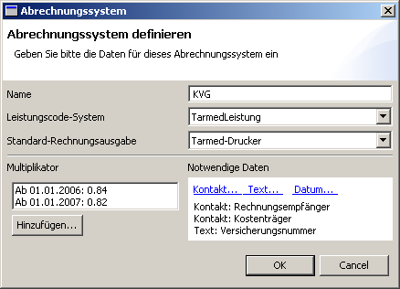 [fig:abr1] Le nom peut être choisi librement, le système des codes de prestation et la facturation standard peut être choisi selon les Plugins installés. (Pour des systèmes de facturation qui n’existent pas encore il faudra produire des Plugins.) Le multiplicateur est un facteur qui est appliqué pour chaque prestation qui sera comptabilisée. On pourra donc utiliser des différents systèmes de facturation avec le même système des codes de prestation mais avec des différents multiplicateurs (point de taxe). Avec_ajouter_ vous pouvez définir un multiplicateur qui sera valable à partir d’une date spécifique. Finalement, dépendant du système de facturation vous nécessitez des différents données pour pouvoir facturer des prestations. Il s’agit par ex. du récepteur de la facture, du garant, numéro etc. Elexis ne donne pas de directives en ce qui concerne ceci. Vous pouvez introduire tout ce que vous voulez. Les différents types de données sont possibles : Texte, contacte et date. (Dans le cadre de l’assurance accident LAA par ex. aussi la date de l’accident).
Général
Sur cette page sont définis tout les réglages généraux pour le fonctionnement du logiciel. Il s’agit des :
Réglages pour le log
Le Log est le journal de bord d’un logiciel dans lequel des différentes informations qui concernent le déroulement du logiciel se trouvent stockées et qui pourront par exemple être utiles pour une recherche de faute.
- Fichier journal : Endroit où sont stockés les informations du ‘log’. Normalement ceci devrait être le fichier elexis.log qui se trouve dans votre répertoire des données. La valeur none n’est utile que lorsque vous démarrez Elexis depuis un environnement de développement.
- Grade du log : Combien de messages doivent être émis. Au grade 1 seront émis seulement des messages concernant les fautes les pires qui demandent par exemple un arrêt du logiciel. Au grade 5 seront émis et notés dans le Log, beaucoup de messages qui ne seront utile que dans des cas très spécifiques. Nous suggérons pour l’activité normale le réglage d’un grade 2 ou 3.
- Grade d’alerte : Des messages qui ont un certain degré d’importance ne seront pas seulement notés dans le fichier journal (Log) mais seront montrés directement sur l’écran. Attention ! Si vous choisissez un grade d’alerte trop haut, vous serrez tout le temps dérangé par des boxes de popup. Nous recommandons un grade 1.
- Nom de la table pour Trace : Trace signifie que toutes les actions seront enregistrées dans un tableau spécifique. A l’aide de ce tableau on pourra plus tard constater de quel poste de travail à quel moment quel action avait été exécutée par Elexis. Cela permet un contrôle très exact des opérations mais aux dépens de la rapidité de travail et de la capacité de stockage. Nous conseillons normalement le réglage none.
- Langue favorisée : Ce réglage ne définit pas dans quelle langue Elexis sera utilisé (Ceci est déterminé par les paramètres du système d’exploitation ou si jamais par les paramètre de démarrage), mais plutôt quelles versions de Tarmed ou CIM-10 seront importées.
- Durée de stockage dans le cache : Ceci est un réglage très technique. Il s’agit de déterminer combien de temps des objets de provenance de la base des données resteront valable avant qu’une nouvelle lecture sera nécessaire. S’il y a plusieurs postes de travail dans le réseau vous devrez choisir de préférence un temps court (par ex. 5 secondes) mais si vous voulez accéder à Elexis depuis chez vous à l’aide d’un raccordement Internet lent, il vaudra mieux de choisir un temps prolongé (par ex. 300 sec.).
- Intervalle de mise à jour : Après combien de temps Elexis doit actualiser les ‘Views’. Lorsque par exemple l’assistante met pour un patient le signe arrivé dans l’agenda il faudra attendre le temps introduit par secondes jusqu’à ce que vous voyez sur votre écran ce changement de status. Si vous introduisez un délai trop court, la charge pour le réseau devient inutilement importante.
Utilisateur
Dans ces paramètres se trouvent des réglages qui sont spécifiques pour l’utilisateur. Si vous préférez un réglage homogène, vous pouvez sauvegarder un réglage spécifique sous un nom spécifique et le télécharger depuis un autre compte d’utilisateur ou un autre poste de travail. Les boutons télécharger le réglage depuis … respectivement sauvegarder réglage sous… concernent les réglages individuels d’un utilisateur (en principe tout ce qui se trouve dans la branche utilisateur des réglages). Tandis que les boutons Paramètres de travail … concernent les réglages de perspectives de mise en page qui sont stockés sur le poste de travail spécifique.
Utilisateur – Aperçu
[userconfig] Plusieurs options d’affichage s’y trouvent :
- Champs extensibles : il s’agit des champs qui peuvent êtres ouverts et qui se trouvent dans certaines ‘Views’ comme par exemple dans la View ‘Données-Patient-Détail’ où on peut ouvrir le champ ‘Diagnostic’ ou ‘Remarques’ etc. Vous pouvez définir si ces champs doivent être toujours ouverts ou toujours fermés lors du premier accès ou si le système mémorise toujours le dernier état.
- Champs à afficher dans la liste des patients : Ceci définit les champs de filtrage à l’aide de lesquels on peut chercher un patient dans la liste des patients. Normalement le nom, prénom et date de naissance sont proposé comme critères de filtrage mais on peut par exemple aussi laisser afficher le numéro de patient.
- Champs supplémentaires sur la feuille détaillée du patient: Vous pouvez introduire ici par un texte supplémentaire n’importe quelle information que vous voulez pouvoir saisir pour vos patients et qui ne peut pas être saisi sous ‘remarques’ ou par une ‘étiquette’. Introduisez simplement par ligne un nom qui désigne le type de donnée à sauvegarder.
Utilisateur – Police de caractères
Ici vous pouvez définir pour tout les ‘Views’ le type et la taille de police d’écriture. Certains Views et Plugins peuvent toujours encore définir d’autres polices d’écriture mais ceci est le réglage standard.
Echange des données
Ceci est une catégorie collective pour le réglage des Plugins qui permettent le transfert des données depuis Elexis vers l’extérieur mais aussi le transfert de l’extérieur vers Elexis. Il dépend entièrement du Plugin de transport installé quelle page d’accueil vous sera présentée.
Base de données
Affiche les détails des réglages des liens avec la base de données.
Réglage de l’imprimante
Pour chaque type de papier on peut choisir l’imprimante correspondante et le bac. Pour l’imprimante des étiquettes on peut régler en plus si le dialogue de choix de l’imprimante doit s’afficher chaque fois avant d’imprimer quelque chose. (ceci est utile par exemple lorsqu’on a plusieurs imprimantes à étiquettes.)
Ces réglages sont importants pour l’envoie des mails directement depuis Elexis. Ceci est précieux notamment dans le cadre de l’envoie automatique des informations d’erreur du logiciel.
Rôles (Groupes) et droits
Ceci est l’administration centrale des utilisateurs. Sur ces pages de réglage les droits des utilisateurs et des mandants sont distribués. Le concept des groupes est expliqué en détail à la page . Définissez d’abord sous rôles (groupes) et droits de quels groupes d’utilisateurs vous avez besoin. Pour installer un nouveau mandant ou utilisateur, vous devez le saisir d’abord sous contact et le qualifier comme utilisateur et/ou mandant. Ensuite vous pouvez attribuer au mandant sous Fichiers – Options-Rôles (Groupes), droits et accès – Mandants un nom d’utilisateur et un mot de passe et indiquer auquel groupe il devait appartenir. Sous Rôles (Groupes), droits et accès – utilisateurs vous pouvez introduire les mêmes données pour un utilisateur et en plus vous pouvez indiquer pour quel mandant cet utilisateur sera principalement actif. Sous Rôles (groupes), droits et accès vous pouvez attribuer les droits individuellement pour chaque rôle (groupe) respectivement pour chaque utilisateur. (cf. [sec:gruppen]).
Valeurs de laboratoire
[config:labor] Vous définissez ici les paramètres de laboratoire pour votre cabinet médical. Ceci peut être fait manuellement ou par un Plugin d’importation pour le laboratoire qui est capable d’importer automatiquement les données fournies par le laboratoire. Chaque élément du laboratoire est caractérisé par les données clés suivantes :
- Un nom
- Un sigle
- L’information de quel laboratoire il provient
- La marge de référence défini par la méthode mais aussi dépendant du sexe, de l’âge et du cycle
- Un groupe sous lequel l’élément est listé (par ex. : hématologie)
- Un numéro de séquence die détermine l’endroit où l’élément sera classé dans le groupe
- Un type (numérique, absolue, texte, formule)
Chaque résultat de laboratoire est identifiable sans équivoque par ces éléments, une date et un nom de patient. C’est pourquoi il est tout à fait possible qu’ils y existent plusieurs éléments pour le même paramètre. Par exemple il peut y avoir l’élément de la Vitamine B12 qui est fourni des différents laboratoires qui n’ont pas forcément la même marge de référence. En cliquant sur les en-têtes des colonnes vous pouvez changer la séquence dans la liste du tableau.
AvecNouveau paramètre de laboratoire Nouveau paramètre de laboratoire 22 et introduire tout les données clés mentionnées ci-dessus. Il est essentiel de savoir avant l’installation de quels paramètres de laboratoire vous en avez besoin et de quelle façon vous voulez les ordonner.
[htp]
 [fig:labor1]
Fig.[fig:labor1] montre un champ de dialogue pour la création d’un nouveau élément de laboratoire respectivement le changement d’un élément déjà existant. Tout en haut vous introduisez le nom du laboratoire qui fourni les résultats (Le laboratoire doit déjà être introduit dans la rubrique ‘contacts’. Ce qui apparaît dans l’affichage de l’élément sont le sigle et le titre. Choisissez comme ’type’_chiffre_, texte (pour paramètres qui ne se laissent pas saisir en forme de chiffre comme par exemple un résultat bactériologique), absolu fpour paramètres qui ne peuvent être que positive ou négative et formule pour des résultats qui doivent être calculés (par exemple le cholestérol LDL selon la formule de Friedewald, chose qui est expliquée ci-après ([ref:formel])).
Sous_RéférenceM_ vous introduisez les valeurs de référence pour les hommes, sous RéférenceF ceux pour les femmes 23, Sous_unités_ vous introduisez l’unité pour ce paramètre.
Sous groupe vous déterminez dans quel groupe ce paramètre doit être classé. Des groupes déjà existants se trouvent déjà dans le Combo-Boxe et peuvent être facilement sélectionnés. Pour créer un nouveau groupe vous pouvez simplement introduire son nom. Le nom du groupe doit avoir le format suivant : une ou plusieurs lettres, un espace et ensuite un texte quelconque. Le préfixe décide sur l’ordre sur la feuille de labo de sorte que le groupe _A Hématologie _ se situe en dessus du groupe _B Electrolytes _ et _DA Valeurs hépatiques _ avant DC Valeurs rénales. A vous de choisir la dénomination et l’ordre des groupes.
Sous_no de séquence _ vous décidez sur l’ordre dans le groupe càd où sera situé le paramètre spécifique à l’intérieur du groupe. Le no de séquence doit être un chiffre. La séquence des éléments est déterminée par le rapport de taille des chiffres. Nous conseillons de ne pas utiliser des chiffres très suivis pour pouvoir insérer plus tard encore quelques éléments si nécessaire.
[fig:labor1]
Fig.[fig:labor1] montre un champ de dialogue pour la création d’un nouveau élément de laboratoire respectivement le changement d’un élément déjà existant. Tout en haut vous introduisez le nom du laboratoire qui fourni les résultats (Le laboratoire doit déjà être introduit dans la rubrique ‘contacts’. Ce qui apparaît dans l’affichage de l’élément sont le sigle et le titre. Choisissez comme ’type’_chiffre_, texte (pour paramètres qui ne se laissent pas saisir en forme de chiffre comme par exemple un résultat bactériologique), absolu fpour paramètres qui ne peuvent être que positive ou négative et formule pour des résultats qui doivent être calculés (par exemple le cholestérol LDL selon la formule de Friedewald, chose qui est expliquée ci-après ([ref:formel])).
Sous_RéférenceM_ vous introduisez les valeurs de référence pour les hommes, sous RéférenceF ceux pour les femmes 23, Sous_unités_ vous introduisez l’unité pour ce paramètre.
Sous groupe vous déterminez dans quel groupe ce paramètre doit être classé. Des groupes déjà existants se trouvent déjà dans le Combo-Boxe et peuvent être facilement sélectionnés. Pour créer un nouveau groupe vous pouvez simplement introduire son nom. Le nom du groupe doit avoir le format suivant : une ou plusieurs lettres, un espace et ensuite un texte quelconque. Le préfixe décide sur l’ordre sur la feuille de labo de sorte que le groupe _A Hématologie _ se situe en dessus du groupe _B Electrolytes _ et _DA Valeurs hépatiques _ avant DC Valeurs rénales. A vous de choisir la dénomination et l’ordre des groupes.
Sous_no de séquence _ vous décidez sur l’ordre dans le groupe càd où sera situé le paramètre spécifique à l’intérieur du groupe. Le no de séquence doit être un chiffre. La séquence des éléments est déterminée par le rapport de taille des chiffres. Nous conseillons de ne pas utiliser des chiffres très suivis pour pouvoir insérer plus tard encore quelques éléments si nécessaire.
Valeurs de laboratoire calculées (Type Formule)
[ref:formel] Une valeur de labo du type Formule n’est pas introduite mais calculée par une formule quelconque. Normalement on se réfère à d’autres valeurs de labo déjà connues dont la valeur à calculer est dépendante. Prenons comme exemple la valeur du cholestérol LDL qui se calcule selon la formule de Friedewald. Cette formule nécessite comme paramètres les valeurs suivantes : Cholestérol totale, Triglycérides et Cholestérol HDL. La formule : Cholestérol totale HDL(TG/2.2). Pour notre exemple ces paramètres sont connus de façon suivante :
- Cholestérol totale : Groupe _G Métabolisme des graisses _, No de séquence 10
- Cholestérol HDL : Groupe _G Métabolisme des graisses _, No de séquence 20
- Triglycérides : Groupe _G Métabolisme des graisses _, No de séquence 40
Nous créons maintenant un nouveau paramètre nommé Cholestérol LDL (calculé) dans le groupe G et nous lui donnons par exemple le No de séquence 21 (comme vous constatez, il était sage de laisser quelques plages libres dans la numérotation de la séquence) (Fig. [fig:labor2]).
[htp]
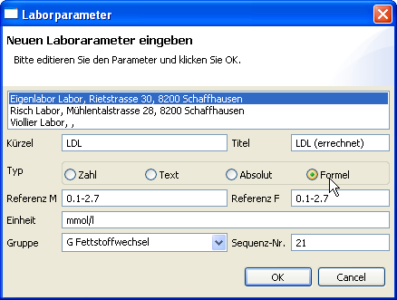 [fig:labor2]
Ensuite vous cliquez sur la désignation du type_Formule_. et le dialogue pour l’introduction de la formule s’ouvre :
Pour nous référer dans la formule à d’autres valeurs de labo, nous utilisons leur indexe de groupe (donc ce qui se trouve devant l’espace dans le nom du groupe) et leur no de séquence séparés par un ‘underscore’. Pour le Cholestérol totale on utilise donc G_20. La formule de Friedewald devient donc : G_10-G_20-(G_40/2.2). Ceci donnerait une valeur de 9 chiffres, raison pour laquelle nous arrondissons la valeur avec Math.round à deux chiffres.
Si les résultats de labo qui concernent la formule seront introduits Elexis essayera immédiatement de faire le calcul. Si ceci ne réussit pas, par exemple parce que certains résultats manquent encore, Elexis met ?formel? (voir Fig. [fig:labor4]).
[htp]
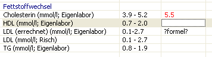 [fig:labor4]
Seulement lorsque tout les valeurs nécessaires pour faire le calcul sont accessibles, la valeur du résultat sera affichée. (Fig. [fig:labor5]).
[htp]
 [fig:labor5]
[fig:labor5]
Codes de prestations
Dépendant des différents Plugins qui concernent la facturation des prestations on trouve des différents codes. En Suisse nous avons à cet endroit normalement le tarif Tarmed et le tarif du Laboratoire. Des explications plus détaillées se trouvent à la page .
Traitement de texte
Dans Elexis le traitement de texte pour des lettres etc. se définit par le choix des plugins càd on peut définir quel type de traitement de texte on veut choisir. Cependant, après avoir fait le choix il est déconseillé de changer ce réglage car s’il existent déjà quelques documents faits, on risque de ne plus pouvoir les ouvrir après un changement. Nous suggérons d’utiliser sous Windows le Plugin NOAText et sous Linux Office-Wrapper.
Sujets élargis
Scripting
[Script] Elexis peut être élargi par des scripts. Des scripts sont des mini-programmes qui peuvent être executés immédiatement et qui peuvent accomplir quelques tâches simples. On emploie comme interprète du script Beanshell (http://www.beanshell.org). Une description plus détaillée de ce concept dépassera le cadre du manuel, vous pouvez vous renseigner sur plus de détails à l’adresse suivante : http://www.rgw.ch/elexis/dox/elexis-scripting.pdf ou http://www.elexis-forum.ch/viewtopic.php?t=107 ou vous trouverez quelques exemples. Pour éditer, sauvegarder et démarrer des scripts il existe la ‘View’ Scripts dans Elexis.
Réflexions concernant la sécurité des données
[sicherheit] Des donnés sensibles (comme les données des patients le sont toujours) doivent être archivées et sauvegardées avec une précaution particulière. Cet article décrit quelques concepts pour la sécurité des données. Des données sensibles comme on les trouve dans les cabinet médicaux doivent :
être protégées contre une perte
être protégées contre falsification ou manipulation volontaire ou involontaire
être protégées contre la prise de connaissance par des personnes non-autorisées
Ces points seront traités dans le chapitre qui suit.
Comment éviter la perte des données ?
En principe il existe à tout moment et dans chaque système d’ordinateurs le risque de perte totale ou limitée des données. Ceci peut se produire à cause d’un défaut de hardware (un disque dur par exemple n’a qu’une durée de vie limitée de quelques années lors d’un fonctionnement permanent et il peut devenir soudainement illisible lorsque quelques secteurs importants sont détruits.) Ceci peut aussi se produire par des influences externes (par exemple une rafale de tension ou une panne de courant lors d’une écriture importante sur le disque). Mais aussi l’apparition subite des fautes non-détectées des logiciels participants peuvent mener à une perte des données. Pour toutes ces raisons il faut réfléchir ::
Pour quel laps de temps je pourrais à la limite reconstruire manuellement les données ou pour quel laps de temps une perte de données ne serait pas trop importante ?.
Combien me coûtera la reconstruction manuelle de ces données ?
Combien me coûteront des données irréparables ?
Suite à ces réflexions on pourra estimer combien une solution de sauvegarde automatique des données pourra coûter et ensuite on pourra fixer la fréquence utile de la sauvegarde. Dans le cadre d’une utilisation fréquente d’une application au cabinet médical pour laquelle une perte de données ne sera non seulement pénible mais pourrait aussi entraîner des conséquences juridiques, une sauvegarde qui aura lieu toutes les heures ou plusieurs fois par jour pourrait être utile. Dans tout les cas au minimum une sauvegarde journalière est très recommandée. Le fonctionnement de cette sauvegarde dépendra de la banque de données utilisée. Si vous ne connaissez pas le processus dans votre banque de données ou si vous ne pouvez pas le mettre en route vous-même, nous vous conseillons vivement d’engager quelqu’un de compétent pour accomplir cette maintenance – la renonciation d’une sauvegarde régulière peut entraîner des graves conséquences.
Comment éviter la falsification des données ?
Le dossier électronique est dans ce contexte un désavantage en comparaison avec un dossier sur papier : Des manipulations faites sur une note autographe ne sont généralement pas difficile à détécter. Par contre on ne voit pas dans le dossier électronique s’il est encore dans l’état originale. Elexis essaie d’y remédier par le concept de la gestion des versions de documents : Un changement d’une note dans le dossier électronique du patient n’écrase jamais l’ancien enregistrement mais cré une nouvelle version de cet enregistrement qui sera marquée par la date, l’heure et l’utilisateur connecté. Si nécessaire les anciennes versions peuvent être visionnées et /ou restaurées très facilement. Un utilisateur standard n’a pas de possibilité d’effacer une note de façon durable. Par contre pour des raisons pratiques l’administrateur seul possède cette possibilité. De cette façon des fautes importantes peuvent être effacées ou de temps en temps il pourra "nettoyer" la base de données pour la rendre plus habile. On peut se protéger contre une éventuelle reproche d’avoir falsifié des documents en faisant avant un tel "nettoyage" une copie de la base de données sur un support de donnés seulement une fois inscriptible. On pourra si nécessaire même marquer ce document avec un chronotimbre fiable et le laisser conserver sellé de façon notariale. Une protection plus importante contre des activités de l’administrateur n’est techniquement pas possible car quelqu’un avec les droits de l’administrateur pourrait à tout moment même effacer la base de données ou la remplacer par une qu’il avait falsifié ou par une ancienne version. Pour cette raison nous préconisons fortement de ne donner le droit d’accès en tant qu’ administrateur sur l’ordinateur qui contient la base de donnée qu’à une seule personne.
Comment éviter l’accès non autorisé à la base de données ?
Une base de donné sert à enregistrer des informations, des les fournir au moment voulu et de permettre de les modifier. Malheureusement la base de données ne sait paschaque fois d’emblée si l’accès se fait par une personne autorisée ou non. Des accès non autorisés peuvent avoir lieu de façon ciblée (par exemple pour espionner des données, pour les détruire mais aussi pour les modifier de façon subtile chose qui peut parfois provoquer des dégâts nettement plus importants qu’une destruction directe qui sera au moins rapidement constatée.). Des accès non autorisés peuvent aussi avoir lieu de façon aléatoire et non ciblée, provoqué par des logiciels nuisibles qui sont distribués largement et qui tentent d’attaquer n’importe quel système. Dans ce qui suit nous essayons de tracer quelques scénarios d’attaques. Ensuite nous mentionnons les mesures de défense possibles. Cette partie du manuel est très technique et ne devrait vous intéresser que lorsque vous n’avez pas confié l’installation et la maintenance de votre réseau à des professionnels externes.
Attaque contre des ports ouverts
Un ordinateur qui est connecté à Internet est comparable à une maison avec des portes qui servent à des différentes tâches. Au lieu d’avoir des escaliers de la cave, des entrées pour les livreurs, des portes des balcons, porte principale et porte du garage, un ordinateur n’a que des Ports et de ceux exactement 65’535. Chacun de ces Ports peut être comme une porte : ouverte, fermée ou même scellée. Un port ouvert est comme une porte d’entrée ouverte. Dans un certain sens une invitation pour des voleurs de venir voir comment accéder à l’intérieur de la maison. Tout aussi peu qu’il y a un sens de sceller à la maison tout les portes et fenêtres, on ne peut pas se priver simplement de ces ports. Si on ne veut pas permettre de communication à travers certains ports on pourrait plus facilement tirer le câble du réseau ou du téléphone. Heureusement un port ouvert ne correspond pas seulement à un troudans l’ordinateur mais il y a toujours un portier – un programme qui a ouvert ce port. Sans des tels programmes tout les ports seraient fermés de façon standardisée. Un agresseur va donc d’abord observer s’il trouve un port ouvert. Pour ceci il va tester tout les ports un après l’autre = Portscan. S’il trouve des ports ouverts, il va essayer de savoir quel programme avait ouvert le port et s’il s’agit d’un programme pour lequel une vulnerabilité est connue il va utiliser cette vulnerabilité de la sécurité pour une attaque. Pour une telle attaque par Portscan, analyse du programme et intrusion, il ne faut malheureusement pas être un Hacker très intelligent qui est déterminé à tout, mais ils existent en masse des programmes déjà prêts pour produire par seconde des telles attaques contre des milliers d’ordinateurs et qui peuvent être distribués par exemple par des jeunes aventuriers ou simplement destructeurs (Script kiddies). En outre on constate dernièrement une professionnalisation de ces programmes qui est à prendre au sérieux car financée par des spammeurs dont le seul but est d’abuser des ordinateurs attaqués pour la distribution des spams et pour espionner des données confidentielles. Qu’est-ce qu’on peut faire contre ?
Des ordinateurs avec des données critiques ne devraient pas être lié à l’Internet ni directement ni indirectement (par le LAN). Pour surfer ou pour les e-mails il faudrait utiliser de préférence un ordinateur à part qui n’est pas lié au réseau. Si le LAN doit pourtant être lié à l’Internet il faudra absolument avoir des connaissances sur la possibilité de se protéger ou il faudra déléguer cette tâche à un professionnel.
Ne laisser ouvrir que des ports qui seront effectivement utilisés. Pour cela il faudra contrôler en détail quels services sont démarrés d’office par le système d’exploitation et si ce services sont effectivement utilisés. Des ordinateurs avec le système d’exploitation Windows on la tendance d’ouvrir des ports NetBIOS vers l’extérieur ce qui libère inutilement les ressources mises à disposition dans le LAN aussi directement dans l’Internet. Par un simple test à travers le site http://www.security-check.ch vous pouvez savoir lesquels des ports sont ouverts chez vous.
Mettre un routeur entre le LAN et l’accès Internet. Un routeur cacheles adresses internes des ordinateurs dans le LAN et une firewall24 peut contrôler (entre autres) à travers lesquels des ports une communication peut être permise. Mais même ceci ne peut vous protéger contre toute attaque!
Il faut faire attention d’utiliser le moins possible des logiciels dont on a connaissance de problèmes de sécurité. Beaucoup de produits de Microsoft appartiennent malheureusement juste à cette catégorie – dû à leur universalisation des logiciels comme Internet Explorer et Outlook sont régulièrement des cibles de ces attaques. Dans ce contexte l’utilisation des logiciels alternatifs pour le Web et/ou le Mailing vaut quelques réflexions si on veut augmenter la sécurité.
Attaque par exploitation des failles de sécurité
Pour augmenter le confort pour l’utilisateur de leurs logiciels, Microsoft en premier lieu a impliqué dans leurs produits beaucoup de fonctions qui permettent de régler certaines fonctionnements de façon automatique. Ceci est même possible sans ordre de l’utilisateur. Il est par exemple possible que dans un e-mail, une page web, un document Word ou un tableau Excel se trouvent des commandes invisibles qui ouvrent sans demande de précision supplémentaire le logiciel concerné (Outlook, Internet-Explorer, Word, Excel). Ces fonctions qui visaient le confort de l’utilisateur ont été détournées par les producteurs de logiciels nuisibles. De cette façon l’ordinateur peut être infecté par un virus ou autre logiciel nuisible lorsqu’on ouvre simplement un e-mail, si on surfe simplement sur une page Web spécifique ou si on ouvre un document Office. Pendant les dernières années Microsoft a reconnu ces désavantages de leur logiciels et a développé régulièrement des améliorations, mais on trouve toujours des nouvelles failles de sécurité. Naturellement ce problème de base concerne aussi d’autres producteurs de logiciels mais Microsoft est pourtant par son importance la cible principale des attaques. Quoi faire contre ?
Procurez-vous toujours les derniers Updates de votre système d’exploitation et de votre logiciel. Seulement dans ce cas là vous avez la garantie qu’au moins les failles de sécurité reconnus jusqu’alors ont été réparées.
Pour surfer à tout hasard vous ne devrez pas utiliser l’ordinateur du cabinet médical. Ne visitez des sites douteux jamais par un ordinateur qui est lié au réseau de l’entreprise.
N’ouvrez jamais vos mails à l’hasard. L’inondation virale la plus grande s’était produite car les gens ont ouvert par Microsoft Outlook un e-mail avec le titre " I love you " et puisque Outlook installait le virus automatiquement, sans demande de précision, dans le système d’exploitation. Si vous recevez un e-mail avec un fichier exécutable comme document joint, vous ne devriez l’exécuter que si vous savez de qui et pourquoi vous l’avez reçu. Si un mail contient un document Office comme document joint, vous ne devriez jamais l’ouvrir avec le logiciel Microsoft correspondant mais avec un des multiples programmes gratuites qui permettent de voir que les donnes.
Dans beaucoup de cas on peut changer sans problèmes sur un logiciel alternatif. On peut utiliser sans problème au lieu du Internet-Explorer par exemple Firefox ou Opera, ou au lieu de Outlook Thunderbird ou Opera ou au lieu de Microsoft Office OpenOffice.
Installez sur chaque ordinateur un scanner à virus et veillez qu’il soit toujours mis à jour. Vous devez par contre savoir qu’un scanner à virus n’est pas une protection complète. Dépendant du système, il ne peut reconnaître que des virus ou logiciels malveillants qui lui sont déjà connus ou dont il peut reconnaître le comportement comme suspect à travers des méthodes heuristique. – Il ne peut pas reconnaître des nouveaux logiciels malveillants ou ceux qui se portent spécifiquement sur lui et évidemment il ne peut les neutraliser encore moins
.
Attaque par interception du trafic du réseau
Il s’agit d’un problème relativement nouveau. Les lignes des réseaux sont relativement sur contre des interceptions de données. (Puisqu’il consistent de plusieurs câbles torsadées les émissions sont minimes). Avec l’introduction des réseaux sans câbles (WLAN) une grande surface d’attaque s’est établie. Par principe toute personne qui se trouve à portée des ondes radio peut se brancher sur un WLAN et par conséquent espionner ou utiliser des ordinateurs du réseau sans être bloqué par une Firewall. En plus, tout le monde qui se trouve à portée des ondes radio peut écouter tout le trafic entre les ordinateurs du réseau. Ceci n’est techniquement pas du tout difficile et peut être réalisé par un équipement standard. Pour maîtriser ce danger les producteurs du WLAN ont développé relativement tôt une méthode de cryptage qui s’appelle WEP. Le WEP contient par contre des graves erreurs d’implémentation et doit aujourd’hui être considéré comme rompu. Ceci implique que toute personne qui utilise un certain logiciel en plus téléchargeable gratuitement à l’Internet, pourra dans quelques heures atteindre le but d’écouter, de contourner le cryptage WEP et d’entrer dans le réseau comme dans un réseau non protégé. Comme réaction à cette menace les producteurs du WLAN ont développé dernièrement une meilleure procédure de cryptage et authentification qui s’appelle WPA. Celle-ci ne peut être déplombée qu’avec une dépense considérable, du Know-How et beaucoup de patience (mais n’est pas non plus impossible à déplomber). Il y en a encore toujours des appareils WLAN qui ne maîtrisent pas le WPA et en plus, par manque de standardisation certains appareils des différents producteurs ne sont parfois pas capables de communiquer. L’état actuel de la technique est le WPA2 aussi nommé WPA-AES ou IEEE 802.11i. Ce cryptage ne peut être déplombé qu’avec force brute et il est en plus standardisé au niveau international de sorte que tout les appareils IEEE 802.11i devraient être capables de communiquer. Qu’est-ce qu’on peut faire contre ? Par principe : Evitez d’utiliser un WLAN si vous avez dans votre réseau des données sensibles. Si vous n’avez absolument pas la possibilité de tirer les lignes, réfléchissez de plutôt choisir une Powerline. S’il faut tout de même utiliser un WLAN : Utilisez exclusivement des appareils qui maîtrisent le WAP2 (IEEE 802.11i) et mettez surtout en route ce cryptage. Si vous pouvez régler l’énergie d’émission de votre Access-Point, choisissez l’émission la plus faible possible pour que le trafic interne ne puisse pénétrer le moins possible à l’extérieur. Utilisez pour l’authentification des utilisateurs du réseau soit un serveur RADIUS ou si vous employez PSK, changez au moins toute les quelques semaines le mot de passe WPA2 et n’utilisez pas une clé trop simple.
Attaques en profitant de la naïveté de l’utilisateur
Souvent les attaquants essayent à convaincre l’utilisateur par des E-Mails bien formulés à exécuter un document joint qui contient un virus ou de révéler des données sensibles comme des mot de passe etc. Que faire contre ceci ?
Ne réagissez jamais à des e-mails qui vous demandent des informations par mail ou en cliquant sur un lien. Appelez plutôt l’émetteur présumée du mail et demandez le si ce mail provient de lui.
N’ouvrez jamais des documents joints à un mail si vous ne savez pas exactement pourquoi vous l’avez reçu. Il ne suffit pas de voir si l’émetteur vous est connu car beaucoup de virus sont capable d’extraire et de falsifier des informations des émetteurs de votre répertoire d’adresses.
Et qu’est-ce que tout ça a avoir avec Elexis?
Elexis est au moins en ce qui concerne la variante multi-client un système client/serveur. Cela veut dire que le serveur doit ouvrir un port a travers lequel le client peut avoir accès. Autrement une communication à travers un réseau ne serait pas possible. Dans le cas d’une base de données MySQL le numéro du port est 3306. En principe toute personne depuis tout les pays du monde pourrait accéder à votre base de données, si l’ordinateur est directement ou indirectement lié à l’Internet car il n’est pas un secret que derrière le port 3306 se trouve en général un serveur MySQL. Par contre vous êtes en sécurité lorsque vous fermez dans votre Router / Firewall les ports qui sont utilisés par votre base de données. Par cela vous laissez apparaître ces ports depuis l’Internet comme fermés, tandis qu’il sont ouverts dans le LAN interne. Si vous voulez par contre accéder à Elexis depuis votre domicile une communication depuis l’extérieur sera indispensable. Pour cela vous pouvez installer dans votre routeur spécifiquement pour le port nécessaire une règle forwardqui vous donnera accès sur l’ordinateur qui contient la base de données. En ce cas là il faudra par contre absolument veiller à ce que l’accès sur la base de données soit contrôlé par ses propres règles de sécurité. N’utilisez en aucun cas le mot de passe standard, veillez à ce que le root-account de la base de données soit protégé par un mot de passe et ne soit pas accessible depuis l’extérieur et limitez les droits des utilisateurs qui accèdent depuis l’extérieur au minimum. Veuillez pour ceci lire la documentation de la base de données et demandez un spécialiste pour cette installation. Puisque aussi pour les serveurs de base de données on n’a jamais la garanti d’être libre de toute faille de sécurité, il pourrait être utile de ne même pas donner une ouverture par un port de base de donnée mais de permettre l’accès à travers l’Internet que par des canaux sécurisés comme le SSH ou le VPN. Une explication de ces techniques dépasserait par contre définitivement le cadre de ce manuel. En cas de besoin nous vous proposons de vous laisser conseiller individuellement sur des prises de mesures de sécurité utiles.
Last but not least: Attaque par accès direct sur le disque dur
Si une personne non autorisée peut accéder au serveur, elle peut en règle général voir tout ce qui se trouve sur le serveur, donc aussi votre base de données. Ne vous laissez pas tromper par des conceptions de sécurité de votre système d’exploitation : Un aggresseur qui peut accéder à votre serveur peut par exemple sortir tout simplement le disque dur de votre serveur et le lire sur un autre ordinateur où il a les droits d’administrateur. Le même problème se pose lorsqu’un disque dur doit être vendu ou éliminé : Quiconque recevant le disque dur pourrait lire tout le contenu – la distribution des droits au mandants et utilisateurs qui avait été faite à travers le système d’exploitation ne joue pas dans ce cas. 25 Qu’est-ce qu’on peut faire contre ? Il n’y a qu’un remède : La base de données doit être installée dans un répertoire crypté du serveur. Heureusement les systèmes d’exploitation de nos jours apportent déjà toutes les choses nécessaires pour une installation des partitions ou répertoires cryptés26. En plus il existent des Tools OpenSource gratuits comme par ex. TrueCrypt qui sont apte à faire la même chose. Le désavantage d’un système de données ou des répertoires cryptés est une rapidité d’accès probablement un peu réduite et le fait que vous devez mémoriser (une fois de plus) un mot de passe et celui-ci, il faut vous le graver dans votre mémoire car en cas de perte il n’y aura aucune chance de récupérer les données.
Matériel pour le Backup
Pour ce thème les mêmes règles comptent comme mentionné ci-dessus. Le meilleure sécurité ne vaut pas grande chose si le matériel du Backup non crypté est facilement accessible à un personne non autorisée. Si vous faites un Backup d’un partition cryptée, le Backup ne sera normalement pas crypté. D’un autre côté il y a plusieurs arguments contre un cryptage de ce matériel de Backup : Vous voudrez pouvoir lire ces Backups encore après 10 ans. Mais il n’est pas certain que vous connaissez votre mot de passe encore dans 10 ans ou que le logiciel de décryptage sera encore fonctionnel sur un ordinateur de l’époque dans 10 ans… Nous proposons plutôt de laisser les Backups non cryptés par contre de les garder dans un endroit sécurisé.
Index
1 Déjà en 1930 Kurt Gödel avait prouvé avec son théorème d’incomplétude que il existe une infinité de faits vrais qu’il est impossible de prouver en utilisant la branche des mathématiques en question. L’élargissement de ce théorème par la preuve que l’absence d’erreurs d’un logiciel ne peut jamais être garantie à été fourni en 1936 par Alan Turing. Malgré les percées théoriques de connaissances informatique, que Turing a fourni avec sa machine de Turing hypothétique (des véritables ordinateurs n’existaient pas encore) il n’était par ailleurs pas le permier programmeur. Cette honneur appartient à Lady Ada Augusta Byron, Countess of Lovelace (1815-1852), qui avait développé le premier programme d’ordinateur (pour la analytical engine de Charles Babbage qui n’a jamais été construite)
2 Pour MacOS X par contre avec la restriction que le traitement de texte doit avoir lieu avec un autre programme , car l’intégration d’Open Office n’est pas encore possible.
3 Chez Gnome existent des problèmes avec OpenOffice : pour cette raison nous recommandons actuellement que Kubuntu (KDE) ou Xubuntu (XFCE) mais pas Ubuntu (Gnome).
4 par ex avec la commande tar – xzf elexis-linux-x.y.z.tgz
5 en général de cette façon : ./elexis
6 La majorité des figures de cette visite guidée proviennent de Windows XP. L’apparence va différer légèrement sous d’autres systèmes d’exploitation
7 Pour vider les champs de saisie pour voir de nouveau tout les patients cliquez simplement sur la croix rouge qui se trouve à gauche du champ de saisie
8 Ceci n’est naturellement possible que si sur le poste concerné tout les affichages existent, dont on aura besoin dans cette perspective
9
Il existe p.ex. un ‘Plugin’ d’importation pour le logiciel Aeskulap. Un autre Plugin existe pour PraxisStar. Informations et achat par l’intermédiaire du support (ad) elexis.ch
10 Ceci doit être comme ça puisqu’il n’existent pas sur tout les postes de travail les mêmes Plugins – il n’est probablement pas indispensable que votre Plugin de comptabilité se trouve aussi sur le PC du laboratoire
11 pour cela vous nécessitez l’autorisation effacer/contact (cf [sec:gruppen])
12 pour cela vous nécessitez l’autorisation fichier/contact/exporter
13 L’adresse postale est ce qui apparaît sur les enveloppes et les étiquettes d’adresses. Celle-ci ne doit pas forcément être identique aux données d’adresses introduites. Il peut y apparaître par ex. en plus c/o, cp ou personne de contact
14
Un cas est fermé si une date de fin a été introduite. On ne peut plus ajouter une consultation à un cas fermé.
15 Remarque importante : Pour le *système Tarmed * (Suisse): Si le destinataire de la facture et le répondant des coûts est identique, une facture Tiers-Payant est fourni, autrement une facture Tiers-garant . Veillez ainsi à ce que ces deux lignes soient correctes (Pour des cas LAA les assureurs d’accident doivent être les destinataires de la facture et en même temps répondants des coûts tandis qu’avec les cas LAMAL le patient est destinataires de la facture dans les cantons Tiers garants et la caisse de maladie est répondant des coûts.)
16 il s’agit de celles qui n’ont pas encore été facturées
17 Character Separated Values : un format standard pour des fichiers sous forme de tableau
18 Nous utilisons le module ‘Nice Office Access’ de www.ubion.org
pour intégrer OpenOffice
19 Le ‘rôle’ avait été nommé autres fois ‘groupes’ (chose qui apparaît encore par ici et par là). Nous changeons avec cette version à la désignation plus courante : ‘rôle’. 20 Sous MacOS-X une intégration OpenOffice n’est malheureusement pas possible. 21 Attention : Sous Linux avec Gnome-Desktop (comme Ubuntu) l’intégration OpenOffice ne fonctionne pas, par contre sous KDE (Kubuntu) et Xfce(Xubuntu) ça fonctionne. 22 Lors de l’importation des valeurs d’un laboratoire externe, les éléments nécessaires sont normalement automatiquement introduits dépendant du Plugin d’importation. 23 Elexis nécessite ces informations pour pouvoir marquer des résultats numériques automatiquement comme pathologique. C’est pourquoi il est indispensable que les valeurs de référence soient introduites comme ‘de-à’. 24 Nous aimerions vous prévenir de ne pas donner trop de confiance à une Personal Firewall. Une telle Software est elle-même exposée à des attaques contre lesquelles elle devrait protéger l’ordinateur et en effet il y a beaucoup de virus et autres logiciels nuisibles qui mettent ce Personal Firewall directement hors service. Une Hardware-Firewall est nettement mieux protégé contre de telles attaques et difficilement à mettre hors service. 25 Même pas l’effacement des données ne sert vraiment : En général on peut reconstruire des données effacées avec plus ou moins d’investissement de temps. 26 Certains par contre seulement dans la variante ‘Professional’, ‘Business’ ou ‘Server’